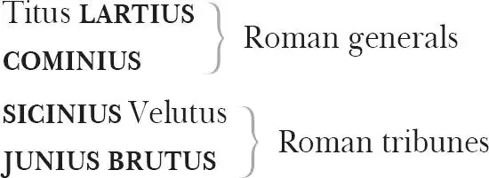

The Tragedy of Coriolanus
Caius MARTIUS , later CORIOLANUS
VOLUMNIA , Coriolanus' mother
VIRGILIA , his wife
YOUNG MARTIUS , his son
VALERIA , friend of Virgilia
GENTLEWOMAN , attending on Virgilia
MENENIUS Agrippa, Coriolanus' elderly friend

NICANOR , a Roman traitor
Two MESSENGERS
LIEUTENANT
Two SOLDIERS
Two OFFICERS
Five CITIZENS
Three ROMANS
A HERALD
An AEDILE
A PATRICIAN
Two SENATORS
Tullus AUFIDIUS , Volscian general
LIEUTENANT to Aufidius
ADRIAN , a Volscian
Three SERVINGMEN
Three CONSPIRATORS
Two WATCHMEN
Three LORDS
Usher, Valeria's Gentlewoman, Captains, Soldiers, Drummer, Trumpeter, Scout, Nobles, Attendants
Act 1
Scene 1 1 / running scene 1
Enter a company of mutinous Citizens, with staves, clubs and other weapons
FIRST CITIZEN Before we proceed any further, hear me speak.
ALL Speak, speak.
FIRST CITIZEN You are all resolved rather to die than to famish 2 ?
ALL Resolved, resolved.
FIRST CITIZEN First, you know Caius Martius is chief enemy to the people.
ALL We know't, we know't.
FIRST CITIZEN Let us kill him, and we'll have corn at our own price. Is't a verdict 3 ?
ALL No more talking on't 4 : let it be done: away, away.
SECOND CITIZEN One word, good citizens.
FIRST CITIZEN We are accounted poor 5 citizens, the patricians 6 good 7 : what authority 8 surfeits on 9 would relieve us. If they would yield us but the superfluity 10 while it were wholesome 11 , we might guess 12 they relieved us humanely: but they think we are too dear 13 : the leanness that afflicts us, the object 14 of our misery, is as an inventory to particularize their abundance 15 : our sufferance 16 is a gain to them. Let us revenge this with our pikes 17 , ere 18 we become rakes 19 . For the gods know, I speak this in hunger for bread, not in thirst for revenge.
SECOND CITIZEN Would you proceed especially against Caius Martius?
ALL Against him first: he's a very dog 20 to the commonalty 21 .
SECOND CITIZEN Consider you what services he has done for his country?
FIRST CITIZEN Very well, and could be content to give him good report for't, but that he pays himself with being proud.
ALL Nay, but speak not maliciously.
FIRST CITIZEN I say unto you, what he hath done famously 22 , he did it to that end 23 : though soft-conscienced 24 men can be content to say it was for his country, he did it to please his mother and to be partly proud 25 , which he is, even to the altitude of his virtue 26 .
SECOND CITIZEN What he cannot help in his nature, you account a vice in him. You must in no way say he is covetous.
FIRST CITIZEN If 27 I must not, I need not be barren of accusations: he hath faults, with surplus, to tire in repetition 28 .
Shouts within
What shouts are these? The other side o'th'city is risen 29 : why stay we prating 30 here? To th'Capitol 31 !
ALL Come, come.
FIRST CITIZEN Soft 32 , who comes here?
Enter Menenius Agrippa
SECOND CITIZEN Worthy Menenius Agrippa, one that hath always loved the people.
FIRST CITIZEN He's one honest enough: would all the rest were so!
MENENIUS What work's, my countrymen, in hand? Where go you
With bats 33 and clubs? The matter 34 , speak, I pray you.
SECOND CITIZEN Our business is not unknown to th'senate: they have had inkling this fortnight what we intend to do, which now we'll show 'em in deeds. They say poor suitors 35 have strong 36 breaths: they shall know we have strong arms too.
MENENIUS Why, masters 37 , my good friends, mine honest neighbours,
Will you undo 38 yourselves?
SECOND CITIZEN We cannot, sir, we are undone already.
MENENIUS I tell you, friends, most charitable care
Have the patricians of you. For 39 your wants,
Your suffering in this dearth 40 , you may as well
Strike at the heaven with your staves 41 as lift them
Against the Roman state, whose course will on 42
The way it takes, cracking ten thousand curbs 43
Of more strong link asunder than can ever
Appear in your impediment 44 . For the dearth,
The gods, not the patricians, make it, and
Your knees 45 to them, not arms 46 , must help. Alack,
You are transported 47 by calamity
Thither where more attends 48 you, and you slander
The helms 49 o'th'state, who care for you like fathers,
When you curse them as enemies.
SECOND CITIZEN Care for us? True 50 , indeed, they ne'er cared for us yet. Suffer 51 us to famish, and their store-houses crammed with grain: make edicts for 52 usury 53 , to support usurers 54 : repeal daily any wholesome act established against the rich, and provide more piercing 55 statutes daily, to chain up and restrain the poor. If the wars eat us not up, they will: and there's all the love they bear us.
MENENIUS Either you must
Confess yourselves wondrous 56 malicious,
Or be accused of folly. I shall tell you
A pretty 57 tale: it may be you have heard it,
But since it serves my purpose, I will venture
To stale't 58 a little more.
SECOND CITIZEN Well, I'll hear it, sir: yet you must not think to fob off our disgrace 59 with a tale: but, an't 60 please you, deliver 61 .
MENENIUS There was a time when all the body's members
Rebelled against the belly, thus accused it:
That only like a gulf it did remain
I'th'midst o'th'body, idle and unactive,
Still cupboarding 62 the viand 63 , never bearing
Like 64 labour with the rest, where th'other instruments 65
Did see and hear, devise 66 , instruct, walk, feel,
And, mutually participate 67 , did minister
Unto the appetite and affection 68 common
Of the whole body. The belly answered—
SECOND CITIZEN Well, sir, what answer made the belly?
MENENIUS Sir, I shall tell you: with a kind of smile,
Which ne'er came from the lungs 69 , but even thus 70 —
For look you, I may make the belly smile
As well as speak — it tauntingly replied
To th'discontented members, the mutinous parts
That envied his receipt 71 : even so most fitly 72
As you malign our senators for that 73
They are not such as you.
SECOND CITIZEN Your belly's answer: what?
The kingly crownèd head, the vigilant eye,
The counsellor heart, the arm our soldier,
Our steed the leg, the tongue our trumpeter,
With other muniments 74 and petty helps
In this our fabric 75 , if that they—
MENENIUS What then? Fore me 76 , this fellow speaks 77 ! What then? What then?
SECOND CITIZEN Should by the cormorant 78 belly be restrained,
Who is the sink 79 o'th'body—
MENENIUS Well, what then?
SECOND CITIZEN The former 80 agents, if they did complain,
What could the belly answer?
MENENIUS I will tell you,
If you'll bestow a small 81 — of what you have little —
Patience awhile, you'st 82 hear the belly's answer.
SECOND CITIZEN You're long about it.
MENENIUS Note me this, good friend:
Your 83 most grave 84 belly was deliberate,
Not rash like his accusers, and thus answered:
'True is it, my incorporate 85 friends,' quoth he,
'That I receive the general 86 food at first
Which you do live upon: and fit it is,
Because I am the storehouse and the shop
Of the whole body. But, if you do remember,
I send it through the rivers of your blood
Even to the court 87 , the heart, to th'seat o'th'brain,
And through the cranks 88 and offices 89 of man,
The strongest nerves 90 and small inferior veins
From me receive that natural competency 91
Whereby they live. And though that all at once' —
You, my good friends, this says the belly, mark 92 me—
SECOND CITIZEN Ay, sir, well, well.
MENENIUS 'Though all at once cannot
See what I do deliver out to each,
Yet I can make my audit up 93 , that all
From me do back receive the flour 94 of all,
And leave me but the bran 95 .' What say you to't?
SECOND CITIZEN It was an answer: how apply you this?
MENENIUS The senators of Rome are this good belly,
And you the mutinous members: for examine
Their counsels and their cares, digest 96 things rightly
Touching the weal o'th'common 97 , you shall find
No public benefit which you receive
But it proceeds or comes from them to you
And no way from yourselves. What do you think,
You, the great toe of this assembly?
SECOND CITIZEN I the great toe? Why the great toe?
MENENIUS For that, being one o'th'lowest, basest, poorest
Of this most wise rebellion, thou goest foremost:
Thou rascal 98 , that art worst in blood 99 to run,
Lead'st first to win some vantage 100 .
But make you ready your stiff bats and clubs:
Rome and her rats are at the point of battle:
The one side 101 must have bale 102 .
Enter Caius Martius
Hail, noble Martius.
MARTIUS Thanks. What's the matter, you dissentious 103 rogues,
That, rubbing the poor itch of your opinion,
Make yourselves scabs 104 ?
SECOND CITIZEN We have ever 105 your good word.
MARTIUS He that will give good words to thee will flatter
Beneath abhorring 106 . What would you have, you curs 107 ,
That like nor 108 peace nor war? The one 109 affrights you,
The other makes you proud 110 . He that trusts to you,
Where he should find you lions, finds you hares 111 :
Where foxes 112 , geese 113 : you are no surer 114 , no,
Than is the coal of fire upon the ice,
Or hailstone in the sun. Your virtue 115 is
To make him worthy whose offence subdues him
And curse that justice did it 116 . Who 117 deserves greatness
Deserves 118 your hate, and your affections 119 are
A sick man's appetite, who desires most that
Which would increase his evil 120 . He that depends
Upon your favours swims with fins of lead,
And hews down oaks with rushes 121 . Hang ye! Trust ye?
With every minute you do change a mind,
And call him noble that was now 122 your hate,
Him vile that was your garland 123 . What's the matter,
That in these several 124 places of the city
You cry against the noble senate, who,
Under the gods, keep you in awe, which else 125
Would feed on one another?— What's their seeking 126 ?
To Menenius
MENENIUS For corn at their own rates, whereof they say
The city is well stored.
MARTIUS Hang 'em! They say?
They'll sit by th'fire, and presume to know
What's done i'th'Capitol: who's like to rise,
Who thrives and who declines: side 127 factions and give out 128
Conjectural marriages 129 , making parties strong
And feebling 130 such as stand not in their liking
Below their cobbled 131 shoes. They say there's grain enough?
Would the nobility lay aside their ruth 132 ,
And let me use my sword, I'd make a quarry 133
With thousands of these quartered 134 slaves, as high
As I could pick 135 my lance.
MENENIUS Nay, these are almost thoroughly persuaded:
For though abundantly they lack discretion,
Yet are they passing 136 cowardly. But I beseech you,
What says the other troop?
MARTIUS They are dissolved: hang 'em:
They said they were an-hungry 137 , sighed forth proverbs
That hunger broke stone walls, that dogs 138 must eat,
That meat 139 was made for mouths, that the gods sent not
Corn for the rich men only: with these shreds 140
They vented their complainings, which being answered,
And a petition granted them, a strange one —
To break the heart of generosity 141 ,
And make bold power look pale — they threw their caps
As 142 they would hang them on the horns o'th'moon,
Shouting 143 their emulation.
MENENIUS What is granted them?
MARTIUS Five tribunes 144 to defend their vulgar 145 wisdoms,
Of their own choice. One's Junius Brutus,
Sicinius Velutus, and I know not. 'Sdeath 146 ,
The rabble should have first unroofed the city,
Ere so prevailed with me: it will in time
Win upon power 147 and throw forth greater themes 148
For insurrection's arguing 149 .
MENENIUS This is strange.
MARTIUS Go get you home, you fragments 150 .
To the Citizens
Enter a Messenger hastily
MESSENGER Where's Caius Martius?
MARTIUS Here: what's the matter?
MESSENGER The news is, sir, the Volsces are in arms.
MARTIUS I am glad on't: then we shall ha' means to vent 151
Our musty superfluity 152 . See, our best elders.
Enter Sicinius Velutus, Junius Brutus, Cominius, Titus Lartius, with other Senators
FIRST SENATOR Martius, 'tis true that 153 you have lately told us:
The Volsces are in arms.
MARTIUS They have a leader,
Tullus Aufidius, that will put you to't 154 :
I sin in envying his nobility,
And were I anything but what I am,
I would wish me only he.
COMINIUS You have fought together 155 !
MARTIUS Were half to half the world by th'ears 156 and he
Upon my party 157 , I'd revolt to make
Only my wars with 158 him. He is a lion
That I am proud to hunt.
FIRST SENATOR Then, worthy Martius,
Attend upon 159 Cominius to these wars.
COMINIUS It is your former promise.
To Martius
MARTIUS Sir, it is,
And I am constant 160 : Titus Lartius, thou
Shalt see me once more strike at Tullus' face.
What, art thou stiff 161 ? Stand'st out? 162
LARTIUS No, Caius Martius,
I'll lean upon one crutch and fight with t'other,
Ere 163 stay behind this business.
MENENIUS O, true-bred!
FIRST SENATOR Your 164 company to th'Capitol, where I know
Our greatest friends attend 165 us.
LARTIUS Lead you on.—
To Cominius
Follow Cominius, we must follow you,
To Martius
Right worthy your priority 166 .
COMINIUS Noble Martius.
FIRST SENATOR Hence to your homes, be gone.
To the Citizens
MARTIUS Nay, let them follow:
The Volsces have much corn: take these rats thither
To gnaw their garners 167 . Worshipful 168 mutineers,
Your valour puts well forth 169 : pray follow.
Exeunt
Citizens steal away. Sicinius and Brutus remain
SICINIUS Was ever man so proud as is this Martius?
BRUTUS He has no equal.
SICINIUS When we were chosen tribunes for the people—
BRUTUS Marked you his lip and eyes?
SICINIUS Nay, but his taunts.
BRUTUS Being moved 170 , he will not spare to gird 171 the gods.
SICINIUS Bemock the modest 172 moon.
BRUTUS The 173 present wars devour him: he is grown
Too proud to be so valiant.
SICINIUS Such a nature,
Tickled with 174 good success, disdains the shadow
Which he treads on at noon 175 : but I do wonder
His insolence 176 can brook 177 to be commanded
Under Cominius.
BRUTUS Fame, at the which he aims,
In whom already he's well graced, cannot
Better be held nor more attained than by
A place below the first: for what miscarries 178
Shall be the general's fault, though he perform
To th'utmost of a man, and giddy censure 179
Will then cry out of Martius 'O, if he
Had borne the business!'
SICINIUS Besides, if things go well,
Opinion 180 that so sticks on Martius shall
Of his demerits 181 rob Cominius.
BRUTUS Come:
Half all Cominius' honours are 182 to Martius,
Though Martius earned them not: and all his faults
To Martius shall be honours, though indeed
In aught 183 he merit not.
SICINIUS Let's hence, and hear
How the dispatch 184 is made, and in what fashion,
More than his singularity 185 , he goes
Upon this present action 186 .
BRUTUS Let's along 187 .
Exeunt
Scene 2 188 / running scene 2
Enter Tullus Aufidius with Senators of Corioles
FIRST SENATOR So, your opinion is, Aufidius,
That they of Rome are entered 189 in our counsels
And know how we proceed.
AUFIDIUS Is it not yours?
Whatever have been thought on in this state,
That could be brought to bodily act ere 190 Rome
Had circumvention 191 ? 'Tis not four days gone
Since I heard thence: these are the words: I think
I have the letter here: yes, here it is.
He reads the letter
'They have pressed a power 192 , but it is not known
Whether for east or west: the dearth is great,
The people mutinous: and it is rumoured,
Cominius, Martius your old enemy,
Who is of 193 Rome worse hated than of you,
And Titus Lartius, a most valiant Roman,
These three lead on this preparation 194
Whither 195 'tis bent 196 : most likely 'tis for you:
Consider of it.'
FIRST SENATOR Our army's in the field 197 :
We never yet made doubt but 198 Rome was ready
To answer us.
AUFIDIUS Nor did you think it folly
To keep your great pretences 199 veiled, till when
They needs 200 must show themselves, which in the hatching,
It seemed, appeared to Rome. By the discovery,
We shall be shortened 201 in our aim, which was
To take in 202 many towns ere, almost, Rome
Should know we were afoot.
SECOND SENATOR Noble Aufidius,
Take your commission, hie 203 you to your bands 204 :
Let us alone to guard Corioles.
If they set down before's 205 , for the remove 206
Bring up your army: but, I think, you'll find
They've not prepared for us.
AUFIDIUS O, doubt not that:
I speak from certainties. Nay, more,
Some parcels 207 of their power 208 are forth 209 already,
And only hitherward 210 . I leave your honours.
If we and Caius Martius chance to meet,
'Tis sworn between us we shall ever 211 strike
Till one can do no more.
ALL The gods assist you!
AUFIDIUS And keep your honours safe.
FIRST SENATOR Farewell.
SECOND SENATOR Farewell.
ALL Farewell.
Exeunt
Scene 3 212 / running scene 3
Enter Volumnia and Virgilia, mother and wife to Martius: they set them down on two low stools and sew
VOLUMNIA I pray you, daughter, sing, or express yourself in a more comfortable 213 sort 214 : if my son were my husband, I should freelier 215 rejoice in that absence wherein he won honour than in the embracements of his bed where he would show most love. When yet he was but tender-bodied 216 and the only son of my womb, when youth with comeliness 217 plucked all gaze his way, when for a day of kings'entreaties a mother should not sell him an hour from her beholding, I, considering how honour would become 218 such a person 219 , that it was no better than, picture-like, to hang by th'wall 220 if renown 221 made it not stir, was pleased to let him seek danger where he was like 222 to find fame: to a cruel war I sent him, from whence he returned, his brows bound with oak 223 . I tell thee, daughter, I sprang not more in joy at first hearing he was a man-child than now 224 in first seeing he had proved himself a man.
VIRGILIA But had he died in the business, madam, how then?
VOLUMNIA Then his good report should have been my son: I therein would have found issue 225 . Hear me profess sincerely: had I a dozen sons, each in my love alike, and none less dear than thine and my good Martius, I had rather had eleven die nobly for their country than one voluptuously surfeit 226 out of action.
Enter a Gentlewoman
GENTLEWOMAN Madam, the lady Valeria is come to visit you.
To Volumnia
VIRGILIA Beseech you give me leave to retire myself 227 .
To Volumnia
VOLUMNIA Indeed, you shall not.
Methinks I hear hither 228 your husband's drum:
See 229 him pluck Aufidius down by th'hair,
As children from a bear, the Volsces shunning him:
Methinks I see him stamp thus, and call thus,
'Come on, you cowards, you were got 230 in fear,
Though you were born in Rome'; his bloody brow
With his mailed 231 hand then wiping, forth he goes,
Like to a harvest-man that's tasked 232 to mow
Or 233 all or lose his hire 234 .
VIRGILIA His bloody brow? O Jupiter 235 , no blood!
VOLUMNIA Away, you fool! It more becomes a man
Than gilt his trophy 236 . The breasts of Hecuba 237
When she did suckle Hector looked not lovelier
Than Hector's forehead when it spit forth blood
At Grecian sword, contemning 238 .— Tell Valeria,
To the Gentlewoman
We are fit 239 to bid her welcome.
Exit Gentlewoman
VIRGILIA Heavens bless 240 my lord from fell 241 Aufidius!
VOLUMNIA He'll beat Aufidius' head below his knee
And tread upon his neck.
Enter Valeria with an Usher 242 and a Gentlewoman
VALERIA My ladies both, good day to you.
VOLUMNIA Sweet madam.
VIRGILIA I am glad to see your ladyship.
VALERIA How do you both? You are manifest housekeepers 243 . What are you sewing here? A fine spot 244 , in good faith. How does your little son?
VIRGILIA I thank your ladyship: well, good madam.
VOLUMNIA He had rather see the swords and hear a drum than look upon his schoolmaster.
VALERIA O'my 245 word, the father's son: I'll swear 'tis a very pretty boy. O'my troth 246 , I looked upon him o'Wednesday half an hour together 247 : he's 248 such a confirmed 249 countenance. I saw him run after 250 a gilded butterfly, and when he caught it, he let it go again, and after it again, and over and over he comes, and up again, catched it again: or whether 251 his fall enraged him, or how 'twas, he did so set 252 his teeth and tear it. O, I warrant 253 how he mammocked 254 it!
VOLUMNIA One on's 255 father's moods.
VALERIA Indeed, la 256 , 'tis a noble child.
VIRGILIA A crack 257 , madam.
VALERIA Come, lay aside your stitchery, I must have you play the idle housewife 258 with me this afternoon.
VIRGILIA No, good madam, I will not out 259 of doors.
VALERIA Not out of doors?
VOLUMNIA She shall, she shall.
VIRGILIA Indeed, no, by your patience: I'll not over the threshold till my lord return from the wars.
VALERIA Fie 260 , you confine yourself most unreasonably: come, you must go visit the good lady that lies in 261 .
VIRGILIA I will wish her speedy strength, and visit her with my prayers: but I cannot go thither.
VOLUMNIA Why, I pray you?
VIRGILIA 'Tis not to save labour, nor that I want 262 love.
VALERIA You would 263 be another Penelope 264 : yet they say all the yarn she spun in Ulysses' absence did but fill Ithaca full of moths. Come, I would your cambric 265 were sensible 266 as your finger, that you might leave 267 pricking it for pity. Come, you shall go with us.
VIRGILIA No, good madam, pardon me, indeed I will not forth.
VALERIA In truth, la, go with me, and I'll tell you excellent news of your husband.
VIRGILIA O, good madam, there can be none yet.
VALERIA Verily 268 I do not jest with you: there came news from him last night.
VIRGILIA Indeed, madam?
VALERIA In earnest, it's true: I heard a senator speak it. Thus it is: the Volsces have an army forth, against whom Cominius the general is gone, with one part of our Roman power. Your lord and Titus Lartius are set down before their city Corioles: they nothing 269 doubt prevailing and to make it brief wars. This is true, on mine honour: and so, I pray, go with us.
VIRGILIA Give me excuse 270 , good madam: I will obey you in everything hereafter.
VOLUMNIA Let her alone, lady: as she is now, she will but disease our better mirth 271 .
VALERIA In troth 272 , I think she would. Fare you well, then. Come, good sweet lady.
Prithee, Virgilia, turn thy solemness out o'door, and go along with us.
VIRGILIA No, at a word 273 , madam: indeed, I must not. I wish you much mirth.
VALERIA Well then, farewell.
Exeunt Ladies
Scene 4 274 / running scene 4
Enter Martius, Titus Lartius, with Drum 275 [, Trumpeter ] and Colours 276 , with Captains and Soldiers [with scaling ladders ], as before the city Corioles: to them 277 a Messenger
MARTIUS Yonder comes news: a wager they have met 278 .
LARTIUS My horse to yours, no 279 .
MARTIUS 'Tis done.
LARTIUS Agreed.
MARTIUS Say, has our general met the enemy?
To the Messenger
MESSENGER They lie in view, but have not spoke 280 as yet.
LARTIUS So, the good horse is mine.
MARTIUS I'll buy him of you.
LARTIUS No, I'll nor 281 sell nor give him: lend you him I will
For half a hundred years.— Summon the town.
To Trumpeter
MARTIUS How far off lie these armies?
MESSENGER Within this mile and half.
MARTIUS Then shall we hear their 'larum 282 , and they ours.
Now, Mars 283 , I prithee make us quick in work,
that we with smoking 284 swords may march from hence
To help our fielded 285 friends.— Come, blow thy blast.
To Trumpeter
They sound a parley 286 : enter two Senators with others on the walls 287 of Corioles
Tullus Aufidius, is he within your walls?
FIRST SENATOR No, nor a man that fears you less than he 288 ,
That's lesser than a little.
Hark, our drums
Drum afar off
Are bringing forth our youth: we'll break our walls
Rather than they shall pound us up 289 : our gates,
Which yet seem shut, we have but pinned with rushes 290 :
They'll open of themselves.
Hark you, far off
Alarum far off
There is Aufidius. List 291 what work he makes
Amongst your cloven 292 army.
MARTIUS O, they are at it!
LARTIUS Their 293 noise be our instruction 294 . Ladders, ho!
They prepare their ladders to assault the walls
Enter the army of the Volsces
MARTIUS They fear us not, but issue forth their city.
Now put your shields before your hearts, and fight
With hearts more proof 295 than shields. Advance, brave Titus:
They do disdain us much beyond our thoughts 296 ,
Which makes me sweat with wrath. Come on, my fellows:
He that retires, I'll take him for a Volsce,
And he shall feel mine edge 297 .
Alarum: the Romans are beat back to their trenches [and exeunt, followed by the Volsces ].
Enter Martius cursing
MARTIUS All the contagion of the south 298 light on you,
You shames of Rome! You herd of— boils and plagues
Plaster you o'er, that you may be abhorred
Further than seen 299 , and one infect another
Against the wind a mile 300 : you souls of geese 301
That bear the shapes of men, how have you run
From slaves that apes would beat! Pluto 302 and hell:
All hurt behind 303 , backs red, and faces pale
With flight and agued 304 fear! Mend 305 and charge home 306 ,
Or, by the fires of heaven, I'll leave the foe
And make my wars on you: look to't. Come on:
If you'll stand fast, we'll beat 307 them to their wives,
As they us to our trenches followed.
Another alarum, and Martius follows [the Volsces ] to [the ] gates
So, now the gates are ope 308 : now prove good seconds 309 :
'Tis for the followers 310 fortune widens them 311 ,
Not for the fliers 312 : mark me, and do the like.
[He ] enter [s ] the gates
FIRST SOLDIER Foolhardiness: not I.
SECOND SOLDIER Nor I.
[The gates close and Martius ] is shut in
FIRST SOLDIER See, they have shut him in.
Alarum continues
ALL To th'pot 313 , I warrant him.
Enter Titus Lartius
LARTIUS What is become of Martius?
ALL Slain, sir, doubtless.
FIRST SOLDIER Following the fliers at the very heels,
With them he enters, who upon the sudden
Clapped to 314 their gates: he is himself alone,
To answer 315 all the city.
LARTIUS O noble fellow!
Who sensibly 316 outdares 317 his senseless sword,
And when it bows 318 , stand'st 319 up. Thou art left 320 , Martius:
A carbuncle entire 321 , as big as thou art,
Were not so rich a jewel. Thou wast a soldier
Even to Cato's 322 wish, not fierce and terrible
Only in strokes: but with thy grim looks, and
The thunder-like percussion of thy sounds,
Thou mad'st thine enemies shake, as if the world
Were feverous and did tremble.
Enter Martius, bleeding, assaulted by the enemy
FIRST SOLDIER Look, sir.
LARTIUS O, 'tis Martius!
Let's fetch him off 323 , or make remain 324 alike.
They fight, and all enter the city
Scene 5 / running scene 4 continues
Enter certain Romans with spoils
FIRST ROMAN This will I carry to Rome.
SECOND ROMAN And I this.
THIRD ROMAN A murrain 325 on't, I took this for silver.
Exeunt
Alarum continues still afar off
Enter Martius and Titus [Lartius ] with a Trumpet 326
MARTIUS See here these movers that do prize 327 their honours
At a cracked drachma 328 : cushions, leaden spoons,
Irons 329 of a doit 330 , doublets 331 that hangmen 332 would
Bury with those that wore them, these base slaves,
Ere yet the fight be done, pack up: down with them!
And hark, what noise the general 333 makes: to him.
There is the man of my soul's hate, Aufidius,
Piercing our Romans: then, valiant Titus, take
Convenient 334 numbers to make good 335 the city,
Whilst I, with those that have the spirit, will haste
To help Cominius.
LARTIUS Worthy sir, thou bleed'st:
Thy exercise hath been too violent
For a second course of fight.
MARTIUS Sir, praise me not:
My work hath yet not warmed me. Fare you well:
The blood I drop is rather physical 336
Than dangerous to me: to Aufidius thus
I will appear, and fight.
LARTIUS Now the fair goddess, Fortune,
Fall deep in love with thee, and her great charms 337
Misguide thy opposers' 338 swords! Bold gentleman,
Prosperity be thy page 339 .
MARTIUS Thy friend no less
Than those she placeth highest 340 . So farewell.
LARTIUS Thou worthiest Martius!
[Exit Martius ]
Go sound thy trumpet in the market-place:
Call thither all the officers o'th'town,
Where they shall know our mind. Away.
Exeunt
Scene 6 341 / running scene 4 continues
Enter Cominius, as it were in retire 342 , with Soldiers
COMINIUS Breathe you 343 , my friends: well fought: we are come off
Like Romans, neither foolish in our stands 344 ,
Nor cowardly in retire: believe me, sirs,
We shall be charged again. Whiles we have struck 345 ,
By interims and conveying gusts 346 we have heard
The 347 charges of our friends. The Roman gods
Lead their successes as we wish our own,
That both our powers, with smiling fronts 348 encount'ring,
May give you thankful sacrifice.
Enter a Messenger
Thy news?
MESSENGER The citizens of Corioles have issued 349 ,
And given to Lartius and to Martius battle:
I saw our party to their trenches driven,
And then I came away.
COMINIUS Though thou speak'st truth,
Methinks thou speak'st not well. How long is't since?
MESSENGER Above an hour, my lord.
COMINIUS 'Tis not a mile: briefly 350 we heard their drums.
How couldst thou in a mile confound 351 an hour,
And bring thy news so late?
MESSENGER Spies of the Volsces
Held me in chase, that 352 I was forced to wheel
Three or four miles about, else had I, sir,
Half an hour since brought my report.
Enter Martius [bleeding ]
COMINIUS Who's yonder,
That does appear as 353 he were flayed? O gods,
He has the stamp 354 of Martius, and I have
Before-time 355 seen him thus.
MARTIUS Come I too late?
COMINIUS The shepherd knows not thunder from a tabor 356
More than I know the sound of Martius' tongue
From every meaner 357 man.
MARTIUS Come I too late?
COMINIUS Ay, if you come not in the blood of others,
But mantled in your own.
MARTIUS O, let me clip 358 ye
In arms as sound as when I wooed in heart,
As merry as when our nuptial day was done,
And tapers 359 burned to bedward 360 .
He embraces Cominius
COMINIUS Flower of warriors, how is't with Titus Lartius?
MARTIUS As with a man busied about decrees 361 :
Condemning some to death, and some to exile,
Ransoming him, or pitying, threat'ning th'other;
Holding Corioles in the name of Rome,
Even like a fawning greyhound in the leash,
To let him slip 362 at will.
COMINIUS Where is that slave
Which told me they had beat you to your trenches?
Where is he? Call him hither.
MARTIUS Let him alone:
He did inform the truth: but for our gentlemen,
The common file 363 — a plague — tribunes for them! —
The mouse ne'er shunned the cat as they did budge 364
From rascals worse than they.
COMINIUS But how prevailed you?
MARTIUS Will the time serve to tell? I do not think 365 .
Where is the enemy? Are you lords o'th'field?
If not, why cease you till you are so?
COMINIUS Martius, we have at disadvantage fought
And did retire to win our purpose 366 .
MARTIUS How lies their battle 367 ? Know you on which side
They have placed their men of trust?
COMINIUS As I guess, Martius,
Their bands i'th'vanguard 368 are the Antiates 369 ,
Of their best trust 370 : o'er them Aufidius,
Their very heart of hope.
MARTIUS I do beseech you,
By all the battles wherein we have fought,
By th'blood we have shed together, by th'vows
We have made to endure 371 friends, that you directly
Set me against Aufidius and his Antiates,
And that you not delay the present, but,
Filling the air with swords advanced 372 and darts 373 ,
We prove 374 this very hour.
COMINIUS Though I could wish
You were conducted to a gentle bath
And balms 375 applied to you, yet dare I never
Deny your asking: take your choice of those
That best can aid your action.
MARTIUS Those are they
That most are willing: if any such be here,
As it were sin to doubt, that love this painting 376
Wherein you see me smeared, if any fear
Lesser his person than an ill report 377 :
If any think brave 378 death outweighs bad life,
And that his country's dearer than himself,
Let him alone 379 , or so many so minded,
Wave thus to express his disposition,
And follow Martius.
They all shout and wave their swords, take him up in their arms, and cast up their caps
O, me 380 alone, make you a sword of me?
If these shows be not outward 381 , which of you
But is 382 four Volsces? None of you but is
Able to bear against the great Aufidius
A shield as hard as his. A certain number,
Though thanks to all, must I select from all.
The rest shall bear the business in some other fight,
As cause will be obeyed 383 . Please you to march,
And I shall quickly draw out my command,
Which men are best inclined.
COMINIUS March on, my fellows:
Make good this ostentation 384 , and you shall
Divide in all 385 with us.
Exeunt
Scene 7 / running scene 4 continues
Titus Lartius, having set a guard upon Corioles, going with Drum and Trumpet toward Cominius and Caius Martius, enters with a Lieutenant, other Soldiers and a Scout
LARTIUS So, let the ports 386 be guarded: keep your duties
To the Lieutenant
As I have set them down. If I do send, dispatch
Those centuries 387 to our aid: the rest will serve
For a short holding 388 : if we lose the field,
We cannot keep the town.
LIEUTENANT Fear not 389 our care 390 , sir.
LARTIUS Hence, and shut your gates upon's:
Our guider, come; to th'Roman camp conduct us.
Exeunt
Scene 8 / running scene 4 continues
Alarum, as in battle. Enter Martius and Aufidius at several 391 doors
MARTIUS I'll fight with none but thee, for I do hate thee
Worse than a promise-breaker.
AUFIDIUS We hate alike:
Not Afric owns 392 a serpent I abhor
More than thy fame and envy 393 . Fix thy foot 394 .
MARTIUS Let the first budger 395 die the other's slave,
And the gods doom him after.
AUFIDIUS If I fly, Martius, holla 396 me like a hare.
MARTIUS Within these three hours, Tullus,
Alone I fought in your Corioles' walls,
And made what work I pleased: 'tis not my blood
Wherein thou see'st me masked: for thy revenge
Wrench up 397 thy power to th'highest.
AUFIDIUS Wert thou the Hector
That was the whip of your bragged progeny 398 ,
Thou shouldst not scape 399 me here.
Here they fight, and certain Volsces come in the aid of Aufidius. Martius fights till they be driven in breathless
Officious, and not valiant, you have shamed me
In your condemnèd seconds 400 .
[Exit ]
Scene 9 / running scene 4 continues
Alarum. Flourish 401 . A retreat 402 is sounded. Enter at one door Cominius with the Romans: at another door Martius, with his arm in a scarf 403
COMINIUS If I should tell thee o'er 404 this thy day's work,
Thou't not believe thy deeds: but I'll report it
Where senators shall mingle tears with smiles,
Where great patricians shall attend 405 and shrug 406 ,
I'th'end admire 407 : where ladies shall be frighted,
And, gladly quaked 408 , hear more: where the dull 409 tribunes,
That with the fusty 410 plebeians, hate thine honours,
Shall say against their hearts 411 , 'We thank the gods
Our Rome hath such a soldier.'
Yet cam'st thou to a morsel of this feast,
Having fully dined before 412 .
Enter Titus [Lartius ] with his power, from the pursuit
LARTIUS O general,
Here is the steed, we the caparison 413 :
Hadst thou beheld—
MARTIUS Pray now, no more: my mother,
Who has a charter to extol her blood 414 ,
When she does praise me, grieves me. I have done
As you have done: that's what I can, induced 415
As you have been, that's for my country:
He that has but effected 416 his good will
Hath overta'en 417 mine act.
COMINIUS You shall not be the grave of your deserving 418 :
Rome must know the value of her own:
'Twere a concealment worse than a theft,
No less than a traducement 419 ,
To hide your doings, and to silence that
Which, to the spire and top of praises vouched 420 ,
Would seem but modest: therefore, I beseech you
In sign 421 of what you are, not to reward
What you have done, before our army hear me.
MARTIUS I have some wounds upon me, and they smart
To hear themselves remembered.
COMINIUS Should they not 422 ,
Well might they fester gainst 423 ingratitude,
And tent 424 themselves with death. Of all the horses,
Whereof we have ta'en good and good store 425 , of all
The treasure in this field achieved and city 426 ,
We render you the 427 tenth, to be ta'en forth,
Before the common distribution,
At your only choice 428 .
MARTIUS I thank you, general:
But cannot make my heart consent to take
A bribe to pay my sword: I do refuse it,
And stand 429 upon my common part 430 with those
That have beheld the doing 431 .
A long flourish. They all cry 'Martius, Martius!' cast up their caps and lances: Cominius and Lartius stand bare 432
May these same instruments, which you profane,
Never sound more: when drums and trumpets shall
I'th'field prove flatterers, let courts and cities be
Made all of false-faced soothing 433 : when steel grows
Soft as the parasite 434 's silk, let him 435 be made
An overture 436 for th'wars: no more, I say,
For that 437 I have not washed my nose that bled,
Or foiled some debile 438 wretch, which, without note 439 ,
Here's many else have done, you shout me forth 440
In acclamations hyperbolical,
As if I loved my little 441 should be dieted
In 442 praises sauced 443 with lies.
COMINIUS Too modest are you:
More cruel to your good report than grateful
To us that give 444 you truly: by your patience 445 ,
If gainst yourself you be incensed, we'll put you,
Like one that means 446 his proper 447 harm, in manacles,
Then reason safely with you: therefore be it known,
As to us, to all the world, that Caius Martius
Wears this war's garland 448 : in token of the which,
My noble steed, known to the camp, I give him,
With all his trim belonging 449 : and from this time,
For what he did before Corioles, call him,
With all th'applause and clamour of the host, 450
Martius Caius Coriolanus. Bear th'addition 451 nobly ever!
Flourish. Trumpets sound, and Drums
ALL Martius Caius Coriolanus!
CORIOLANUS I will go wash:
To Cominius
And when my face is fair 452 , you shall perceive
Whether I blush or no: howbeit 453 , I thank you:
I mean to stride 454 your steed, and at all times
To undercrest 455 your good addition
To th'fairness of my power 456 .
COMINIUS So, to our tent,
Where, ere we do repose us, we will write
To Rome of our success. You, Titus Lartius,
Must to Corioles back: send us to Rome
The best 457 , with whom we may articulate 458 ,
For their own good and ours.
LARTIUS I shall, my lord.
CORIOLANUS The gods begin to mock me: I, that now
Refused most princely gifts, am bound to beg
Of my lord general.
COMINIUS Take't, 'tis yours: what is't?
CORIOLANUS I sometime 459 lay 460 here in Corioles
At a poor man's house: he used 461 me kindly:
He cried 462 to me: I saw him prisoner:
But then Aufidius was within my view,
And wrath o'erwhelmed my pity: I request you
To give my poor host freedom.
COMINIUS O, well begged!
Were he the butcher of my son, he should
Be free as is the wind. Deliver 463 him, Titus.
LARTIUS Martius, his name?
CORIOLANUS By Jupiter, forgot:
I am weary: yea, my memory is tired:
Have we no wine here?
COMINIUS Go we to our tent:
The blood upon your visage 464 dries: 'tis time
It should be looked to: come.
Exeunt
Scene 10 / running scene 4 continues
A flourish. Cornets. Enter Tullus Aufidius, bloody, with two or three Soldiers
AUFIDIUS The town is ta'en 465 .
FIRST SOLDIER 'Twill be delivered back on good condition 466 .
AUFIDIUS Condition 467 ?
I would I were a Roman, for I cannot,
Being a Volsce, be that 468 I am. Condition?
What good condition can a treaty find
I'th'part that is at mercy 469 ? Five times, Martius,
I have fought with thee: so often hast thou beat me,
And wouldst do so, I think, should we encounter 470
As often as we eat. By th'elements,
If e'er again I meet him beard to beard,
He's mine, or I am his: mine emulation 471
Hath not that honour in't it had: for where 472
I thought to crush him in an equal force,
True sword to sword, I'll potch 473 at him some way
Or 474 wrath or craft 475 may get him.
FIRST SOLDIER He's the devil.
AUFIDIUS Bolder, though not so subtle 476 : my valour's poisoned
With only suff'ring stain 477 by him: for him
Shall fly out of itself 478 : nor sleep nor sanctuary,
Being naked 479 , sick, nor fane 480 nor Capitol,
The prayers of priests, nor times of sacrifice,
Embarquements 481 all of fury, shall lift up
Their rotten 482 privilege and custom gainst
My hate to Martius. Where I find him, were it
At home, upon 483 my brother's guard 484 , even there,
Against the hospitable canon 485 , would I
Wash my fierce hand in's heart. Go you to th'city:
Learn how 'tis held, and what 486 they are that must
Be hostages for Rome.
FIRST SOLDIER Will not you go?
AUFIDIUS I am attended 487 at the cypress grove. I pray you —
'Tis south 488 the city mills — bring me word thither
How the world goes, that to the pace of it
I may spur on my journey.
FIRST SOLDIER I shall, sir.
[Exeunt ]
Act 2
Scene 1 489 / running scene 5
Enter Menenius with the two Tribunes of the people, Sicinius and Brutus
MENENIUS The augurer 490 tells me we shall have news tonight.
BRUTUS Good or bad?
MENENIUS Not according to the prayer of the people 491 , for they love not Martius.
SICINIUS Nature teaches beasts 492 to know their friends.
MENENIUS Pray you, who does the wolf love?
SICINIUS The lamb.
MENENIUS Ay, to devour him, as the hungry plebeians would the noble Martius.
BRUTUS He's a lamb indeed that baas 493 like a bear.
MENENIUS He's a bear indeed that lives like a lamb. You two are old men: tell me one thing that I shall ask you.
SICINIUS and BRUTUS Well, sir.
MENENIUS In what enormity 494 is Martius poor in that you two have not in abundance?
BRUTUS He's poor in no one fault, but stored 495 with all.
SICINIUS Especially in pride.
BRUTUS And topping all others in boasting.
MENENIUS This is strange now: do you two know how you are censured 496 here in the city, I mean of us o'th'right-hand file 497 ? Do you?
SICINIUS and BRUTUS Why? How are we censured?
MENENIUS Because you talk of pride now: will you not be angry?
SICINIUS and BRUTUS Well, well, sir, well.
MENENIUS Why, 'tis no great matter 498 : for a very little thief of occasion 499 will rob you of a great deal of patience: give your dispositions the reins, and be angry at your pleasures 500 , at the least, if you take it as a pleasure to you in being so: you blame Martius for being proud.
BRUTUS We do it not alone, sir.
MENENIUS I know you can do very little alone, for your helps are many, or else your actions would grow wondrous single 501 : your abilities are too infant-like for doing much alone. You talk of pride: O, that you could turn your eyes toward the napes of your necks 502 , and make but an interior survey of your good selves! O, that you could!
BRUTUS What then, sir?
MENENIUS Why, then you should discover a brace 503 of unmeriting, proud, violent, testy 504 magistrates, alias fools, as any in Rome.
SICINIUS Menenius, you are known well enough too.
MENENIUS I am known to be a humorous 505 patrician, and one that loves a cup of hot 506 wine with not a drop of allaying 507 Tiber 508 in't: said to be something imperfect 509 in favouring the first complaint 510 , hasty and tinder-like 511 upon too trivial motion 512 : one that converses 513 more with the buttock of the night 514 than with the forehead of the morning. What I think, I utter, and spend 515 my malice in my breath 516 . Meeting two such wealsmen 517 as you are — I cannot call you Lycurguses 518 — if the drink you give me touch my palate adversely, I make a crooked face at it 519 . I can say your worships have delivered 520 the matter well, when I find the ass in compound 521 with the major part of your syllables 522 . And though I must be content to bear with those that say you are reverend grave men, yet they lie deadly 523 that tell 524 you have good 525 faces: if you see this 526 in the map of my microcosm 527 , follows it that I am known well enough too? What harm can your bisson 528 conspectuities 529 glean out of this character 530 , if I be known well enough too?
BRUTUS Come, sir, come, we know you well enough.
MENENIUS You know neither me, yourselves nor anything: you are ambitious for poor knaves' caps 531 and legs 532 : you wear out a good wholesome forenoon 533 in hearing a cause between an orange-wife 534 and a faucet-seller 535 , and then rejourn 536 the controversy 537 of threepence to a second day of audience 538 . When you are hearing a matter between party and party 539 , if you chance to be pinched 540 with the colic, you make faces like mummers 541 , set up the bloody flag 542 against all patience, and in roaring for a chamber-pot, dismiss the controversy bleeding 543 , the more entangled by your hearing: all the peace you make in their cause is calling both the parties knaves. You are a pair of strange ones.
BRUTUS Come, come, you are well understood to be a perfecter giber 544 for the table 545 than a necessary bencher 546 in the Capitol.
MENENIUS Our very priests must become mockers, if they shall encounter such ridiculous subjects 547 as you are. When 548 you speak best unto the purpose, it is not worth the wagging of your beards, and your beards deserve not so honourable a grave as to stuff a botcher 549 's cushion, or to be entombed in an ass's pack-saddle: yet you must be saying, 'Martius is proud', who, in a cheap 550 estimation, is worth all your predecessors since Deucalion 551 , though peradventure 552 some of the best of'em were hereditary hangmen. Good e'en 553 to your worships: more of your conversation would infect my brain, being the herdsmen of the beastly plebeians.
I will be bold to take my leave of you.
Brutus and Sicinius [stand ] aside
Enter Volumnia, Virgilia and Valeria
How now, my as fair as noble ladies: and the moon 554 , were she earthly, no nobler: whither do you follow your eyes 555 so fast?
VOLUMNIA Honourable Menenius, my boy Martius approaches: for the love of Juno 556 , let's go.
MENENIUS Ha? Martius coming home?
VOLUMNIA Ay, worthy Menenius, and with most prosperous approbation 557 .
MENENIUS Take my cap, Jupiter, and I thank thee. Hoo, Martius coming home?
He throws up his cap
VIRGILIA and VALERIA Nay, 'tis true.
VOLUMNIA Look, here's a letter from him: the state hath another, his wife another, and, I think, there's one at home for you.
MENENIUS I will make my very house reel tonight: a letter for me?
VIRGILIA Yes, certain, there's a letter for you: I saw't.
MENENIUS A letter for me? It gives me an estate 558 of seven years' health, in which time I will make a lip at 559 the physician: the most sovereign 560 prescription in Galen 561 is but empiricutic 562 , and to 563 this preservative, of no better report 564 than a horse-drench 565 . Is he not wounded? He was wont 566 to come home wounded.
VIRGILIA O, no, no, no.
VOLUMNIA O, he is wounded, I thank the gods for't.
MENENIUS So do I too, if it be not too much: brings a 567 victory in his pocket? The wounds become him.
VOLUMNIA On's brows 568 : Menenius, he comes the third time home with the oaken garland.
MENENIUS Has he disciplined 569 Aufidius soundly?
VOLUMNIA Titus Lartius writes they fought together, but Aufidius got off.
MENENIUS And 'twas time for him too, I'll warrant him that: an 570 he had stayed by him, I would not have been so 'fidiussed 571 for all the chests in Corioles, and the gold that's in them. Is the senate possessed 572 of this?
VOLUMNIA Good ladies, let's go. Yes, yes, yes: the senate has letters from the general, wherein he gives my son the whole name of 573 the war: he hath in this action 574 outdone his former deeds doubly.
VALERIA In troth, there's wondrous things spoke of him.
MENENIUS Wondrous: ay, I warrant you, and not without his true purchasing 575 .
VIRGILIA The gods grant them true.
VOLUMNIA True? Pow waw! 576
MENENIUS True? I'll be sworn they are true. Where is he wounded?— God save your good worships! Martius is coming home: he has more cause to be proud.— Where is he wounded?
To the Tribunes
VOLUMNIA I'th'shoulder, and i'th'left arm: there will be large cicatrices 577 to show the people, when he shall stand for his place 578 : he received in the repulse 579 of Tarquin 580 seven hurts i'th'body.
MENENIUS One i'th'neck, and two i'th'thigh: there's nine 581 that I know.
VOLUMNIA He had, before this last expedition, twenty-five wounds upon him.
MENENIUS Now it's twenty-seven: every gash was an enemy's grave.
A shout and flourish
Hark, the trumpets.
VOLUMNIA These are the ushers of Martius: before him he carries noise, and behind him he leaves tears:
Death, that dark spirit, in's nervy 582 arm doth lie,
Which being advanced 583 , declines 584 , and then men die.
A sennet 585 . Trumpets sound. Enter Cominius the general, and Titus Lartius: between them Coriolanus, crowned with an oaken garland with Captains and Soldiers, and a Herald
HERALD Know, Rome, that all alone Martius did fight
Within Corioles' gates: where he hath won,
With fame, a name to 586 'Martius Caius':
These in honour follows 587 'Coriolanus'.
Welcome to Rome, renownèd Coriolanus!
Sound [a ] flourish
ALL Welcome to Rome, renownèd Coriolanus!
CORIOLANUS No more of this, it does offend my heart:
Pray now, no more.
COMINIUS Look, sir, your mother.
CORIOLANUS O, you have, I know, petitioned all the gods
For my prosperity 588 .
Kneels
VOLUMNIA Nay, my good soldier, up:
He rises
My gentle 589 Martius, worthy Caius,
And by deed-achieving honour 590 newly named:
What is it? 'Coriolanus' must I call thee?
But O, thy wife!
CORIOLANUS My gracious 591 silence, hail.
To Virgilia
Wouldst thou have laughed had I come coffined home,
That weep'st to see me triumph? Ah, my dear,
Such eyes the widows in Corioles wear,
And mothers that lack sons.
MENENIUS Now the gods crown thee!
CORIOLANUS And live you yet? O my sweet lady, pardon.
To Valeria
VOLUMNIA I know not where to turn. O, welcome home:
And welcome, general, and you're welcome all.
MENENIUS A hundred thousand welcomes: I could weep
And I could laugh, I am light 592 and heavy: welcome:
A curse begin at very root on's 593 heart
That is not glad to see thee. You are three
That Rome should dote on: yet, by the faith of men,
We have some old crab-trees 594 here at home that will not
Be grafted 595 to your relish 596 . Yet welcome, warriors:
We call a nettle but a nettle and
The faults of fools but folly 597 .
COMINIUS Ever right.
CORIOLANUS Menenius, ever, ever.
HERALD Give 598 way there, and go on.
CORIOLANUS Your hand, and yours.
To Volumnia and Virgilia
Ere in our own house I do shade 599 my head,
The good patricians must be visited,
From whom I have received not only greetings,
But with them change of honours 600 .
VOLUMNIA I have lived
To see inherited 601 my very wishes,
And the buildings of my fancy 602 : only
There's one thing wanting 603 , which I doubt not but
Our Rome will cast 604 upon thee.
CORIOLANUS Know, good mother,
I had rather be their servant in my way,
Than sway 605 with them in theirs.
COMINIUS On, to the Capitol.
Flourish. Cornets. Exeunt in state 606 , as before
Enter Brutus and Sicinius
BRUTUS All tongues speak of him, and the blearèd 607 sights
Are spectacled 608 to see him. Your prattling 609 nurse
Into a rapture 610 lets her baby cry
While she chats 611 him: the kitchen malkin 612 pins
Her richest lockram 613 'bout her reechy 614 neck,
Clamb'ring the walls to eye him: stalls 615 , bulks 616 , windows
Are smothered up, leads 617 filled, and ridges 618 horsed 619
With variable complexions 620 , all agreeing 621
In earnestness to see him: seld-shown 622 flamens 623
Do press among the popular 624 throngs and puff 625
To win a vulgar station 626 : our veiled dames
Commit the war of white and damask 627 in
Their nicely gauded 628 cheeks to th'wanton spoil 629
Of Phoebus' 630 burning kisses 631 : such a pother 632
As if that whatsoever god who leads him 633
Were slily crept into his human powers 634 635 ,
And gave him graceful posture 636 .
SICINIUS On the sudden 637 , I warrant 638 him consul.
BRUTUS Then our office 639 may, during his power 640 , go sleep.
SICINIUS He cannot temp'rately transport his honours
From where he should begin and end 641 , but will
Lose those he hath won.
BRUTUS In that there's comfort.
SICINIUS Doubt not
The commoners, for whom we stand 642 , but they
Upon 643 their ancient 644 malice will forget
With the least cause these his new honours, which 645
That he will give them make I as little question
As 646 he is proud to do't.
BRUTUS I heard him swear,
Were he to stand for consul, never would he
Appear i'th'market-place nor on him put
The napless vesture 647 of humility,
Nor, showing, as the manner is, his wounds
To th'people, beg their stinking breaths 648 .
SICINIUS 'Tis right.
BRUTUS It was his word: O, he would miss it 649 rather
Than carry it but 650 by the suit of the gentry to him,
And the desire of the nobles.
SICINIUS I wish no better
Than have him hold that purpose and to put it
In execution.
BRUTUS 'Tis most like 651 he will.
SICINIUS It shall be to him then, as our good wills 652 :
A sure destruction.
BRUTUS So it must fall out
To him or our authorities for an end 653 .
We must suggest 654 the people in what hatred
He still 655 hath held them: that to's power he would
Have made them mules 656 , silenced their pleaders 657 ,
And dispropertied 658 their freedoms, holding them,
In human action and capacity 659 ,
Of no more soul nor fitness for the world
Than camels in their war, who have their provand 660
Only for bearing burdens, and sore blows
For sinking under them.
SICINIUS This, as you say, suggested
At some time when his soaring insolence
Shall teach the people — which time shall not want 661 ,
If he be put upon't 662 , and that's as easy
As to set dogs on sheep — will be his fire
To kindle their dry stubble, and their blaze
Shall darken 663 him for ever.
Enter a Messenger
BRUTUS What's the matter?
MESSENGER You are sent for to the Capitol: 'tis thought
That Martius shall be consul: I have seen
The dumb men throng to see him and the blind
To hear him speak: matrons 664 flung gloves,
Ladies and maids their scarves and handkerchiefs,
Upon him as he passed: the nobles bended 665
As to Jove 666 's statue, and the commons made
A shower and thunder with their caps and shouts:
I never saw the like.
BRUTUS Let's to the Capitol,
And carry with us ears and eyes for th'time 667 ,
But hearts 668 for the event 669 .
SICINIUS Have with you 670 .
Exeunt
Scene 2 671 / running scene 6
Enter two Officers, to lay cushions, as it were, in the Capitol
FIRST OFFICER Come, come, they are almost here: how many stand for consulships?
SECOND OFFICER Three, they say: but 'tis thought of 672 everyone Coriolanus will carry it.
FIRST OFFICER That's a brave 673 fellow: but he's vengeance 674 proud, and loves not the common people.
SECOND OFFICER Faith, there hath been many great men that have flattered the people, who ne'er loved them 675 : and there be many that they 676 have loved, they know not wherefore 677 : so that if they love they know not why, they hate upon no better a ground. Therefore, for Coriolanus neither to care whether they love or hate him manifests the true knowledge he has in 678 their disposition, and out of his noble carelessness lets them plainly see't.
FIRST OFFICER If he did not care whether he had their love or no, he waved 679 indifferently 'twixt doing them neither good nor harm: but he seeks their hate with greater devotion than they can render it him, and leaves nothing undone that may fully discover him 680 their opposite 681 . Now to seem to affect 682 the malice and displeasure of the people is as bad as that which he dislikes, to flatter them for their love.
SECOND OFFICER He hath deserved worthily of his country, and his ascent is not by such easy degrees 683 as those who, having been supple 684 and courteous to the people, bonneted 685 , without any further deed to have them at all into their estimation and report 686 : but he hath so planted his honours in their eyes and his actions in their hearts that for their tongues to be silent and not confess so much were a kind of ingrateful injury: to report otherwise were a malice that, giving itself the lie 687 , would pluck reproof and rebuke from every ear that heard it.
FIRST OFFICER No more of him: he's a worthy man: make way, they are coming.
A sennet. Enter the Patricians, and the Tribunes of the people [Sicinius and Brutus ], Lictors 688 before them: Coriolanus, Menenius, Cominius the consul. Sicinius and Brutus take their places by themselves: Coriolanus stands
MENENIUS Having determined 689 of the Volsces and
To send for Titus Lartius, it remains
As the main point of this our after-meeting 690 ,
To gratify 691 his noble service that
Hath thus stood for 692 his country. Therefore please you,
Most reverend and grave 693 elders, to desire
The present consul and last general
In our well-found 694 successes to report
A little of that worthy work performed
By Martius Caius Coriolanus, whom
We met here both to thank and to remember
With honours like himself 695 .
FIRST SENATOR Speak, good Cominius:
Leave nothing out for length 696 , and make us think
Rather our state's defective for requital 697
Than we to stretch it out.— Masters o'th'people,
To the Tribunes
We do request your kindest ears: and after 698
Your loving motion 699 toward the common body 700 ,
To yield 701 what passes here.
SICINIUS We are convented 702 upon 703 a pleasing treaty 704 , and have hearts inclinable to honour and advance the theme 705 of our assembly.
BRUTUS Which the rather we shall be blest 706 to do if he remember a kinder value 707 of the people than he hath hereto 708 prized them at.
MENENIUS That's off 709 , that's off. I would you rather had been silent: please you to hear
Cominius speak?
BRUTUS Most willingly: but yet my caution was more pertinent than the rebuke you give it.
MENENIUS He loves your people, but tie him not to be their bedfellow. Worthy
Cominius, speak.
Coriolanus rises, and offers 710 to go away
Nay, keep your place.
To Coriolanus
FIRST SENATOR Sit, Coriolanus: never shame to hear
What you have nobly done.
CORIOLANUS Your honour's pardon:
I had rather have my wounds to heal again
Than hear say how I got them.
BRUTUS Sir, I hope my words disbenched 711 you not?
CORIOLANUS No, sir: yet oft,
When blows have made me stay, I fled from words.
You soothed 712 not, therefore hurt not: but your people,
I love them as they weigh 713 —
MENENIUS Pray now, sit down.
CORIOLANUS I had rather have one scratch my head i'th'sun
When the alarum were struck 714 than idly sit
To hear my nothings monstered 715 .
Exit Coriolanus
MENENIUS Masters of the people,
Your multiplying spawn 716 how can he flatter —
That's thousand to one 717 good one — when you now see
He had rather venture all his limbs for honour
Than one on's 718 ears to hear it? Proceed, Cominius.
COMINIUS I shall lack voice: the deeds of Coriolanus
Should not be uttered feebly: it is held
That valour is the chiefest virtue, and
Most dignifies the haver: if it be,
The man I speak of cannot in the world
Be singly counterpoised 719 . At sixteen years,
When Tarquin made a head for 720 Rome, he fought
Beyond the mark 721 of others: our then dictator 722 ,
Whom with all praise I point at 723 , saw him fight,
When with his Amazonian 724 chin he drove
The bristled lips before him: he bestrid 725
An o'erpressed 726 Roman, and i'th'consul's view 727
Slew three opposers: Tarquin's self he met,
And struck him on 728 his knee: in that day's feats,
When he might act the woman in the scene 729 ,
He proved best man i'th'field and for his meed 730
Was brow-bound with the oak 731 . His pupil age
Man-entered thus 732 , he waxèd 733 like a sea,
And in the brunt 734 of seventeen battles since
He lurched all swords of the garland 735 : for 736 this last,
Before and in Corioles, let me say
I cannot speak him home 737 : he stopped the fliers 738 ,
And by his rare 739 example made the coward
Turn terror into sport: as weeds before
A vessel under sail, so men obeyed
And fell below his stem 740 : his sword, death's stamp 741 ,
Where it did mark, it took 742 : from face to foot
He was a thing of blood, whose every motion
Was timed 743 with dying cries: alone he entered
The mortal 744 gate of th'city, which 745 he, painted
With shunless 746 destiny 747 , aidless came off 748 ,
And with a sudden reinforcement 749 struck 750
Corioles like a planet: now all's his:
When by and by the din of war gan 751 pierce
His ready sense 752 : then straight 753 his doubled 754 spirit
Requickened 755 what in flesh was fatigate 756 ,
And to the battle came he, where he did
Run reeking 757 o'er the lives of men, as if
'Twere a perpetual spoil 758 : and till we called
Both field and city ours, he never stood
To ease his breast with panting.
MENENIUS Worthy man.
FIRST SENATOR He cannot but with measure 759 fit the honours which we devise him.
COMINIUS Our spoils he kicked at 760 ,
And looked upon things precious as 761 they were
The common muck of the world: he covets less
Than misery 762 itself would give, rewards
His deeds with doing them 763 , and is content
To spend the time to end it 764 .
MENENIUS He's right noble: let him be called for.
FIRST SENATOR Call Coriolanus.
OFFICER He doth appear.
Enter Coriolanus
MENENIUS The senate, Coriolanus, are well pleased to make thee consul.
CORIOLANUS I do owe them still 765 my life and services.
MENENIUS It then remains that you do speak to the people.
CORIOLANUS I do beseech you,
Let me o'erleap that custom, for I cannot
Put on the gown, stand naked 766 , and entreat them,
For my wounds' sake, to give their sufferage 767 :
Please you that I may pass 768 this doing.
SICINIUS Sir, the people must have their voices 769 :
Neither will they bate 770 one jot of ceremony.
MENENIUS Put 771 them not to't:
Pray you, go fit you to the custom and
Take to you, as your predecessors have,
Your honour with your form 772 .
CORIOLANUS It is a part that I shall blush in acting,
And might well be taken from the people.
BRUTUS Mark you that?
To Sicinius
CORIOLANUS To brag unto them, 'Thus I did, and thus':
Show them th'unaching scars which I should hide,
As if I had received them for the hire 773
Of their breath only!
MENENIUS Do not stand upon't 774 :
We recommend 775 to you, tribunes of the people,
Our purpose to them 776 , and to our noble consul
Wish we all joy and honour.
SENATORS To Coriolanus come all joy and honour!
Flourish [of ] cornets. Then exeunt [all but ] Sicinius and Brutus
BRUTUS You see how he intends to use 777 the people.
SICINIUS May they perceive's intent! He will require 778 them
As if he did contemn what he requested
Should be in them to give 779 .
BRUTUS Come, we'll inform them
Of our proceedings here: on th'market-place
I know they do attend 780 us.
[Exeunt ]
Scene 3 781 / running scene 7
Enter seven or eight Citizens
FIRST CITIZEN Once 782 , if he do require our voices, we ought not to deny him.
SECOND CITIZEN We may, sir, if we will.
THIRD CITIZEN We have power in ourselves to do 783 it, but it is a power that we have no power to do: for, if he show us his wounds and tell us his deeds, we are to put our tongues into those wounds and speak for them: so, if he tell us his noble deeds, we must also tell him our noble acceptance of them. Ingratitude is monstrous 784 , and for the multitude to be ingrateful, were to make a monster of the multitude: of the which we, being members, should bring ourselves to be monstrous members.
FIRST CITIZEN And to make us no better thought of, a little help will serve 785 : for once 786 we stood up about the corn, he himself stuck 787 not to call us the many-headed multitude.
THIRD CITIZEN We have been called so of 788 many, not that 789 our heads are some brown, some black, some abram 790 , some bald, but that our wits are so diversely coloured: and truly I think if all our wits were to issue out of one skull, they would fly east, west, north, south, and their consent of 791 one direct way should be at once to all the points o'th'compass.
SECOND CITIZEN Think you so? Which way do you judge my wit would fly?
THIRD CITIZEN Nay, your wit will not so soon out 792 as another man's will 793 : 'tis strongly wedged up in a blockhead: but if it were at liberty, 'twould sure southward 794 .
SECOND CITIZEN Why that way?
THIRD CITIZEN To lose itself in a fog, where being three parts melted away with rotten 795 dews, the fourth would return for conscience' sake, to help to get thee a wife.
SECOND CITIZEN You are never without your tricks: you may 796 , you may.
THIRD CITIZEN Are you all resolved to give your voices? But that's no matter, the greater part 797 carries it. I say, if he would incline 798 to the people, there was never a worthier man.
Enter Coriolanus in a gown of humility, with Menenius
Here he comes, and in the gown of humility: mark his behaviour. We are not to stay all together, but to come by him where he stands, by ones, by twos, and by threes. He's to make his requests by particulars 799 , wherein every one of us has a single honour 800 , in giving him our own voices with our own tongues: therefore follow me, and I'll direct you how you shall go by him.
ALL Content, content.
[Exeunt Citizens ]
MENENIUS O sir, you are not right: have you not known
The worthiest men have done't?
CORIOLANUS What must I say?
'I pray, sir'? Plague upon't, I cannot bring
My tongue to such a pace 801 : 'Look, sir, my wounds:
I got them in my country's service when
Some certain of your brethren roared and ran
From th'noise of our own drums.'
MENENIUS O me, the gods! You must not speak of that:
You must desire them to think upon you.
CORIOLANUS Think upon me? Hang 'em:
I would 802 they would forget me, like the virtues 803
Which our divines 804 lose by 805 'em.
MENENIUS You'll mar all:
I'll leave you: pray you, speak to 'em, I pray you,
In wholesome 806 manner.
Exit
CORIOLANUS Bid them wash their faces
And keep their teeth clean.
Enter three of the Citizens
So, here comes a brace 807 .
You know the cause, sir, of my standing here.
THIRD CITIZEN We do, sir: tell us what hath brought you to't.
CORIOLANUS Mine own desert.
SECOND CITIZEN Your own desert?
CORIOLANUS Ay, but not mine own desire.
THIRD CITIZEN How not your own desire?
CORIOLANUS No, sir, 'twas never my desire yet to trouble the poor with begging.
THIRD CITIZEN You must think, if we give you anything, we hope to gain by you.
CORIOLANUS Well then, I pray, your price o'th'consulship?
FIRST CITIZEN The price is to ask it kindly 808 .
CORIOLANUS Kindly, sir, I pray let me ha't: I have wounds to show you, which shall be yours 809 in private: your good voice, sir: what say you?
SECOND CITIZEN You shall ha't, worthy sir.
CORIOLANUS A match 810 , sir. There's in all two worthy voices begged: I have your alms: adieu.
THIRD CITIZEN But this is something 811 odd.
SECOND CITIZEN An 'twere 812 to give again — but 'tis no matter.
Exeunt [Citizens ]
Enter two other Citizens
CORIOLANUS Pray you now, if it may stand 813 with the tune of your voices that I may be consul, I have here the customary gown.
FOURTH CITIZEN You have deserved nobly of your country, and you have not deserved nobly.
CORIOLANUS Your enigma 814 ?
FOURTH CITIZEN You have been a scourge 815 to her enemies, you have been a rod 816 to her friends: you have not indeed loved the common 817 people.
CORIOLANUS You should account me the more virtuous that I have not been common in my love: I will, sir, flatter my sworn brother 818 the people to earn a dearer estimation of them 819 : 'tis a condition 820 they account gentle 821 : and since the wisdom of their choice is rather to have my hat 822 than my heart, I will practise the insinuating 823 nod, and be off 824 to them most counterfeitly 825 : that is, sir, I will counterfeit the bewitchment 826 of some popular man 827 and give it bountiful 828 to the desirers. Therefore, beseech you, I may be consul.
FIFTH CITIZEN We hope to find you our friend, and therefore give you our voices heartily.
FOURTH CITIZEN You have received many wounds for your country.
CORIOLANUS I will not seal 829 your knowledge with showing them. I will make much of your voices, and so trouble you no further.
BOTH CITIZENS The gods give you joy, sir, heartily.
[Exeunt Citizens ]
CORIOLANUS Most sweet voices:
Better it is to die, better to starve,
Than crave 830 the hire 831 which first we do deserve.
Why in this wolvish tongue 832 should I stand here,
To beg of Hob and Dick that does appear 833
Their needless 834 vouches 835 ? Custom calls me to't.
What custom wills, in all things should we do't?
The dust on antique time 836 would lie unswept,
And mountainous error be too highly heaped
For truth to o'erpeer 837 . Rather than fool it so,
Let the high office and the honour go
To one that would do thus 838 . I am half through:
The one part suffered, the other will I do.
Enter three Citizens more
Here come more voices 839 .
Your voices! For your voices I have fought,
Watched 840 for your voices: for your voices bear
Of wounds two dozen odd: battles thrice six
I have seen and heard of 841 : for your voices have
Done many things, some less, some more: your voices!
Indeed I would be consul.
SIXTH CITIZEN He has done nobly, and cannot go without any honest man's voice.
SEVENTH CITIZEN Therefore let him be consul: the gods give him joy, and make him good friend to the people.
ALL CITIZENS Amen, amen. God save thee, noble consul.
CORIOLANUS Worthy voices!
[Exeunt Citizens ]
Enter Menenius, with Brutus and Sicinius
MENENIUS You have stood your limitation 842 , and the tribunes
Endue 843 you with the people's voice: remains 844
That in th'official marks 845 invested, you
Anon 846 do meet the senate.
CORIOLANUS Is this done?
SICINIUS The custom of request 847 you have discharged:
The people do admit you, and are summoned
To meet anon, upon your approbation 848 .
CORIOLANUS Where? At the senate house?
SICINIUS There, Coriolanus.
CORIOLANUS May I change these garments?
SICINIUS You may, sir.
CORIOLANUS That I'll straight do, and, knowing myself again,
Repair 849 to th'senate house.
MENENIUS I'll keep you company.— Will you along?
To the Tribunes
BRUTUS We stay here for the people.
SICINIUS Fare you well.
Exeunt Coriolanus and Menenius
He has it now, and by his looks methinks
'Tis warm at's heart.
BRUTUS With a proud heart he wore his humble weeds 850 .
Will you dismiss the people?
Enter the Plebeians [Citizens ]
SICINIUS How now, my masters 851 , have you chose this man?
FIRST CITIZEN He has our voices, sir.
BRUTUS We pray the gods he may deserve your loves.
SECOND CITIZEN Amen, sir: to my poor unworthy notice 852 ,
He mocked us when he begged our voices.
THIRD CITIZEN Certainly: he flouted 853 us downright.
FIRST CITIZEN No, 'tis his kind of speech 854 : he did not mock us.
SECOND CITIZEN Not one amongst us, save yourself, but says
He used us scornfully: he should have showed us
His marks of merit, wounds received for's country.
SICINIUS Why, so he did, I am sure.
ALL CITIZENS No, no: no man saw 'em.
THIRD CITIZEN He said he had wounds, which he could show in private;
And with his hat, thus waving it in scorn,
'I would be consul', says he: 'Agèd custom,
But by your voices, will not so permit me.
Your voices therefore.' When we granted that,
Here was 'I thank you for your voices: thank you:
Your most sweet voices: now you have left your voices,
I have no further with 855 you.' Was not this mockery?
SICINIUS Why either were you ignorant 856 to see't,
Or, seeing it, of such childish friendliness
To yield your voices?
BRUTUS Could you not have told him
To the Citizens
As you were lessoned 857 : when he had no power,
But was a petty servant to the state,
He was your enemy, ever 858 spake against
Your liberties and the charters that you bear
I'th'body of the weal 859 : and now arriving 860
A place of potency and sway o'th'state 861 ,
If he should still malignantly remain
Fast foe to th'plebeii 862 , your voices might
Be curses to yourselves. You should have said
That as his worthy deeds did claim no less
Than what he stood for 863 , so his gracious nature
Would think upon 864 you for your voices, and
Translate 865 his malice towards you into love,
Standing your friendly lord 866 .
SICINIUS Thus to have said,
To the Citizens
As you were fore-advised, had touched 867 his spirit
And tried his inclination: from him plucked
Either his gracious promise, which you might,
As cause 868 had called you up 869 , have held him to:
Or else it would have galled 870 his surly nature,
Which easily endures not article 871
Tying him to aught 872 : so putting him to rage,
You should have ta'en th'advantage of his choler 873
And passed him unelected.
BRUTUS Did you perceive
To the Citizens
He did solicit you in free 874 contempt
When he did need your loves? And do you think
That his contempt shall not be bruising to you
When he hath power to crush? Why, had your bodies
No heart 875 among you? Or had you tongues to cry 876
Against the rectorship 877 of judgement?
SICINIUS Have you, ere now, denied the asker 878 ,
To the Citizens
And now again, of him that did not ask but mock,
Bestow your sued-for 879 tongues?
THIRD CITIZEN He's not confirmed: we may deny him yet.
SECOND CITIZEN And will deny him:
I'll have five hundred voices of that sound.
FIRST CITIZEN I twice five hundred and their friends to piece 880 'em.
BRUTUS Get you hence instantly, and tell those friends
They have chose a consul that will from them take
Their liberties: make them of no more voice
Than dogs that are as often beat for barking
As therefor 881 kept to do so.
SICINIUS Let them assemble, and on a safer 882 judgement
To the Citizens
All revoke your ignorant election: enforce 883 his pride,
And his old hate unto you: besides, forget not
With what contempt he wore the humble weed,
How in his suit 884 he scorned you: but your loves,
Thinking upon his services, took from you
Th'apprehension 885 of his present portance,
Which most gibingly 886 , ungravely 887 , he did fashion
After 888 the inveterate 889 hate he bears you.
BRUTUS Lay a fault on 890 us, your tribunes,
To the Citizens
That we laboured, no impediment between 891 ,
But that you must cast your election on him.
SICINIUS Say you chose him more after our commandment
To the Citizens
Than as guided by your own true affections 892 , and that
Your minds, preoccupied with what you rather must do
Than what you should, made you against the grain 893
To voice 894 him consul. Lay the fault on us.
BRUTUS Ay, spare us not: say we read lectures to 895 you,
To the Citizens
How youngly 896 he began to serve his country,
How long continued, and what stock he springs of,
The noble house o'th'Martians, from whence came
That Ancus Martius 897 , Numa 898 's daughter's son,
Who after great Hostilius 899 here was king:
Of the same house Publius 900 and Quintus were,
That our best water brought by conduits 901 902 hither:
And Censorinus 903 that was so surnamed,
And nobly named so, twice being censor 904 ,
Was his great ancestor.
SICINIUS One thus descended,
That hath beside well in his person wrought 905
To be set high in place, we did commend
To your remembrances: but you have found,
Scaling 906 his present bearing with his past,
That he's your fixèd enemy, and revoke
Your sudden 907 approbation.
BRUTUS Say, you ne'er had done't —
Harp on that still — but by our putting on 908 :
And presently, when you have drawn your number 909 ,
Repair 910 to th'Capitol.
ALL We will so: almost all repent in their election.
Exeunt Plebeians [Citizens ]
BRUTUS Let them go on:
This mutiny were better put in hazard 911 ,
Than stay, past doubt, for greater 912 :
If, as his nature is, he fall in rage
With their refusal, both observe and answer
The vantage of 913 his anger.
SICINIUS To th'Capitol, come:
We will be there before the stream o'th'people,
And this shall seem, as partly 'tis, their own 914 ,
Which we have goaded onward.
Exeunt
Act 3
Scene 1 915 / running scene 8
Cornets. Enter Coriolanus, Menenius, all the gentry, Cominius, Titus Lartius, and other Senators
CORIOLANUS Tullus Aufidius then had made new head 916 ?
LARTIUS He had, my lord, and that it was which caused
Our swifter composition 917 .
CORIOLANUS So then the Volsces stand but as at first, 5
Ready, when time shall prompt them, to make road 918
Upon's again.
COMINIUS They are worn 919 , lord consul, so,
That we shall hardly in our ages 920 see
Their banners wave again.
10
CORIOLANUS Saw you Aufidius?
To Lartius
LARTIUS On safeguard 921 he came to me, and did curse
Against the Volsces, for 922 they had so vilely 923
Yielded the town: he is retired 924 to Antium 925 .
CORIOLANUS Spoke he of me? 15
LARTIUS He did, my lord.
CORIOLANUS How? What?
LARTIUS How often he had met you sword to sword:
That of all things upon the earth, he hated
Your person most: that he would pawn his fortunes
To hopeless restitution 926 , so 927 he might
Be called your vanquisher.
CORIOLANUS At Antium lives he?
LARTIUS At Antium.
CORIOLANUS I wish I had a cause to seek him there,
To oppose his hatred fully. Welcome home.
Enter Sicinius and Brutus
Behold, these are the tribunes of the people,
The tongues o'th'common mouth. I do despise them,
For they do prank them 928 in authority,
Against all noble sufferance 929 .
SICINIUS Pass no further.
CORIOLANUS Ha? What is that?
BRUTUS It will be dangerous to go on. No further.
CORIOLANUS What makes this change?
MENENIUS The matter?
COMINIUS Hath he not passed the noble and the common 930 ?
BRUTUS Cominius, no.
CORIOLANUS Have I had children's voices?
FIRST SENATOR Tribunes, give way: he shall to th'market-place.
BRUTUS The people are incensed against him.
SICINIUS Stop, or all will fall in broil 931 .
CORIOLANUS Are these your herd?
Must these have voices 932 , that can yield them now
And straight 933 disclaim their tongues? What are your offices 934 ?
You being their mouths, why rule you not their teeth 935 ?
Have you not set them on 936 ?
MENENIUS Be calm, be calm.
CORIOLANUS It is a purposed 937 thing, and grows by plot,
To curb the will of the nobility:
Suffer't, and live 938 with such as cannot rule
Nor ever will be ruled.
BRUTUS Call't not a plot:
The people cry you mocked them, and of late 939 ,
When corn was given them gratis 940 , you repined 941 ,
Scandalled 942 the suppliants for the people, called them
Time-pleasers 943 , flatterers, foes to nobleness.
CORIOLANUS Why, this was known before.
BRUTUS Not to them all.
CORIOLANUS Have you informed them sithence 944 ?
BRUTUS How? I inform them?
CORIOLANUS You are like 945 to do such business.
BRUTUS Not unlike each way to better yours 946 .
CORIOLANUS Why then should I be consul? By yond 947 clouds,
Let me deserve so ill as you, and make me
Your fellow tribune.
SICINIUS You show too much of that 948
For which the people stir: if you will pass
To where you are bound, you must inquire your way,
Which you are out of 949 , with a gentler spirit,
Or never be so noble as a consul,
Nor yoke 950 with him for tribune.
MENENIUS Let's be calm.
COMINIUS The people are abused 951 : set on. This palt'ring 952
Becomes not Rome: nor has Coriolanus
Deserved this so dishonoured 953 rub 954 , laid falsely 955
I'th'plain 956 way of his merit.
CORIOLANUS Tell me of corn?
This was my speech, and I will speak't again—
MENENIUS Not now, not now.
FIRST SENATOR Not in this heat, sir, now.
CORIOLANUS Now, as I live, I will.
My nobler friends, I crave their pardons:
For 957 the mutable, rank-scented meinie 958 ,
Let them regard 959 me, as I do not flatter,
And therein behold themselves 960 : I say again,
In soothing 961 them, we nourish gainst our senate
The cockle 962 of rebellion, insolence, sedition 963 ,
Which we ourselves have ploughed for, sowed and scattered,
By mingling them with us, the honoured 964 number,
Who lack not virtue, no, nor power, but that
Which they have given to beggars.
MENENIUS Well, no more.
FIRST SENATOR No more words, we beseech you.
CORIOLANUS How? No more?
As for my country I have shed my blood, 95
Not fearing outward force: so shall my lungs
Coin 965 words till their 966 decay against those measles 967
Which we disdain should tetter 968 us, yet sought 969
The very way to catch them.
BRUTUS You speak o'th'people as if you were a god 100
To punish, not a man of their infirmity 970 .
SICINIUS 'Twere well we let the people know't.
MENENIUS What, what, his choler 971 ?
CORIOLANUS Choler? Were I as patient 972 as the midnight sleep,
By Jove, 'twould be my mind 973 .
SICINIUS It is a mind that shall remain a poison
Where it is, not poison any further.
CORIOLANUS Shall remain?
Hear you this Triton 974 of the minnows 975 ? Mark you
His absolute 'shall'?
COMINIUS 'Twas from the canon 976 .
CORIOLANUS 'Shall'? O good but most unwise patricians: why,
You grave but reckless senators, have you thus
Given 977 Hydra 978 here to choose an officer,
That with his peremptory 979 'shall', being but
The horn and noise 980 o'th'monster's, wants 981 not spirit
To say he'll turn 982 your current 983 in a ditch,
And make your channel his? If he have power
Then vail 984 your ignorance 985 : if none, awake
Your dangerous lenity 986 . If you are learned,
Be not as common fools: if you are not,
Let them have cushions 987 by 988 you. You are plebeians,
If they be senators: and they are no less,
When, both your voices 989 blended, the great'st taste
Most palates theirs 990 . They choose their magistrate,
And such a one as he, who puts his 'shall',
His popular 991 'shall', against a graver 992 bench 993
Than ever frowned in Greece. By Jove himself,
It makes the consuls base: and my soul aches
To know, when two authorities are up 994 ,
Neither supreme, how soon confusion 995
May enter 'twixt the gap of both 996 , and take 997
The one by 998 th'other.
COMINIUS Well, on to th'market-place.
CORIOLANUS Whoever gave that counsel to give forth
The corn o'th'storehouse gratis, as 'twas used
Sometime 999 in Greece—
MENENIUS Well, well, no more of that.
CORIOLANUS Though there the people had more absolute power,
I say, they nourished disobedience, fed
The ruin of the state.
BRUTUS Why shall the people give
One that speaks thus their voice 1000 ?
CORIOLANUS I'll give my reasons,
More worthier than their voices. They know the corn
Was not our recompense 1001 , resting well assured
They ne'er did service for't: being pressed 1002 to th'war,
Even when the navel 1003 of the state was touched 1004 ,
They would not thread 1005 the gates: this kind of service
Did not deserve corn gratis. Being i'th'war,
Their mutinies and revolts, wherein they showed
Most valour, spoke not for 1006 them. Th'accusation
Which they have often made against the senate,
All cause unborn 1007 , could never be the native 1008
Of our so frank 1009 donation. Well, what then?
How shall this bosom multiplied 1010 digest 1011
The senate's courtesy? Let deeds express
What's like 1012 to be their words: 'We did request it,
We are the greater poll 1013 1014 , and in true fear
They gave us our demands.' Thus we debase
The nature of our seats, and make the rabble
Call our cares 1015 fears, which will in time
Break ope the locks o'th'senate, and bring in
The crows 1016 to peck the eagles 1017 .
MENENIUS Come, enough.
BRUTUS Enough with over-measure 1018 .
CORIOLANUS No, take more.
What may be sworn by, both divine and human,
Seal 1019 what I end withal 1020 . This double worship 1021 ,
Where one part does disdain with cause, the other
Insult 1022 without al 1023 l reason: where gentry 1024 , title, wisdom,
Cannot conclude 1025 but by the yea and no
Of general 1026 ignorance, it must omit 1027
Real necessities, and give way the while 1028
To unstable slightness 1029 . Purpose so barred 1030 , it follows,
Nothing is done to purpose 1031 . Therefore, beseech you —
You that will be less fearful 1032 than discreet 1033 ,
That love the fundamental part of state
More than you doubt the change on't 1034 , that prefer
A noble life before a long, and wish
To jump 1035 a body with a dangerous physic 1036
That's sure of death without it — at once pluck out
The multitudinous tongue 1037 : let them not lick
The sweet 1038 which is their poison. Your dishonour 1039
Mangles true judgement, and bereaves 1040 the state
Of that integrity 1041 which should become't,
Not having the power to do the good it would,
For th'ill 1042 which doth control't.
BRUTUS He's said enough.
SICINIUS He's spoken like a traitor, and shall answer 1043
As traitors do.
CORIOLANUS Thou wretch, despite 1044 o'erwhelm thee!
What should the people do with these bald 1045 tribunes?
On whom depending, their obedience fails
To th'greater bench 1046 ? In a rebellion,
When what's not meet, but what must be, was law 1047 ,
Then were they chosen: in a better hour,
Let what is meet 1048 be said it must be meet,
And throw their power i'th'dust.
BRUTUS Manifest treason.
SICINIUS This a consul? No.
BRUTUS The aediles 1049 , ho!
Enter an Aedile
Let him be apprehended 1050 .
SICINIUS Go, call the people:—
[Exit Aedile ]
in whose name myself
To Coriolanus
Attach 1051 thee as a traitorous innovator 1052 ,
A foe to th'public weal 1053 . Obey, I charge thee,
And follow to thine answer 1054 .
CORIOLANUS Hence, old goat!
ALL PATRICIANS We'll surety 1055 him.
COMINIUS Agèd sir, hands off.
To Sicinius
CORIOLANUS Hence, rotten thing, or I shall shake thy bones
To Sicinius
Out of thy garments.
SICINIUS Help, ye citizens!
Enter a rabble of Plebeians [Citizens ] with the Aediles
MENENIUS On both sides more respect.
SICINIUS Here's he that would take from you all your power.
BRUTUS Seize him, aediles!
ALL CITIZENS Down with him, down with him!
SECOND SENATOR Weapons, weapons, weapons!
They all bustle about Coriolanus
Tribunes! Patricians! Citizens! What, ho!
Sicinius! Brutus! Coriolanus! Citizens!
ALL Peace, peace, peace! Stay, hold, peace!
MENENIUS What is about to be? I am out of breath:
Confusion 1056 's near: I cannot speak. You, tribunes
To th'people, Coriolanus, patience!
Speak, good Sicinius.
SICINIUS Hear me, people, peace.
ALL CITIZENS Let's hear our tribune: peace! Speak, speak, speak!
SICINIUS You are at point to lose 1057 your liberties:
MARTIUS would have all from you: Martius,
Whom late you have named for consul.
MENENIUS Fie, fie, fie, this is the way to kindle, not to quench.
FIRST SENATOR To unbuild the city and to lay all flat.
SICINIUS What is the city but the people?
ALL CITIZENS True, the people are the city.
BRUTUS By the consent of all, we were established the people's magistrates.
ALL CITIZENS You so remain.
MENENIUS And so are like to do.
CORIOLANUS That is the way to lay the city flat,
To bring the roof to the foundation,
And bury all, which yet distinctly ranges 1058 ,
In heaps and piles of ruin.
SICINIUS This deserves death.
BRUTUS Or 1059 let us stand to 1060 our authority,
Or let us lose it: we do here pronounce,
Upon the part 1061 o'th'people, in whose power
We were elected theirs, Martius is worthy
Of present 1062 death.
SICINIUS Therefore lay hold of him:
Bear him to th'rock Tarpeian 1063 , and from thence
Into destruction cast him.
BRUTUS Aediles, seize him.
ALL CITIZENS Yield, Martius, yield.
MENENIUS Hear me one word: beseech you, tribunes,
Hear me but a word.
AEDILES Peace, peace!
MENENIUS Be that 1064 you seem, truly your country's friend,
And temp'rately 1065 proceed to what you would
Thus violently redress.
BRUTUS Sir, those cold 1066 ways,
That seem like prudent helps, are very poisonous
Where the disease is violent. Lay hands upon him,
And bear him to the rock.
Coriolanus draws his sword
CORIOLANUS No, I'll die here:
There's some among you have beheld me fighting:
Come, try upon yourselves what you have seen me 1067 .
MENENIUS Down with that sword: tribunes, withdraw a while.
BRUTUS Lay hands upon him.
COMINIUS Help Martius, help! You that be noble, help him, young and old.
ALL CITIZENS Down with him, down with him.
Exeunt
In this mutiny, the Tribunes, the Aediles and the people are beat in 1068
MENENIUS Go, get you to your house: be gone, away!
All will be naught 1069 else 1070 .
SECOND SENATOR Get you gone.
CORIOLANUS Stand fast: we have as many friends as enemies.
MENENIUS Shall it be put to that?
FIRST SENATOR The gods forbid!
I prithee, noble friend, home to thy house:
Leave us to cure this cause 1071 .
MENENIUS For 'tis a sore upon us,
You cannot tent 1072 yourself: be gone, beseech you.
COMINIUS Come, sir, along with us.
CORIOLANUS I would they were barbarians, as they are,
Though in Rome littered 1073 : not Romans, as they are not,
Though calved i'th'porch o'th'Capitol.
MENENIUS Be gone:
Put not your worthy rage into your tongue:
One time will owe another 1074 .
CORIOLANUS On fair ground I could beat forty of them.
MENENIUS I could myself take up 1075 a brace o'th'best of them, yea, the two tribunes.
COMINIUS But now 'tis odds beyond arithmetic 1076 ,
And manhood 1077 is called foolery 1078 when it stands
Against a falling fabric 1079 . Will you hence,
Before the tag 1080 return, whose rage doth rend 1081
Like interrupted 1082 waters and o'erbear
What they are used to bear 1083 ?
MENENIUS Pray you be gone:
To Coriolanus
I'll try whether my old wit be in request
With 1084 those that have but little: this must be patched
With cloth of any colour 1085 .
COMINIUS Nay, come away.
Exeunt Coriolanus and Cominius
A PATRICIAN This man has marred his fortune.
MENENIUS His nature is too noble for the world:
He would not flatter Neptune 1086 for his trident,
Or Jove for's power to thunder 1087 : his heart's his mouth 1088 :
What his breast forges, that his tongue must vent,
And, being angry, does forget that ever
He heard the name of death.
A noise within
Here's goodly work.
A PATRICIAN I would they were abed.
MENENIUS I would they were in Tiber 1089 . What the vengeance! 1090
Could he not speak 'em fair 1091 ?
Enter Brutus and Sicinius with the rabble again
SICINIUS Where is this viper
That would depopulate the city and
Be every man himself?
MENENIUS You worthy tribunes—
SICINIUS He shall be thrown down the Tarpeian rock
With rigorous 1092 hands: he hath resisted law,
And therefore law shall scorn 1093 him further trial
Than the severity of the public power
Which he so sets 1094 at naught.
FIRST CITIZEN He shall well know the noble tribunes are
The people's mouths, and we their hands.
ALL CITIZENS He shall, sure on't 1095 .
MENENIUS Sir, sir—
SICINIUS Peace!
MENENIUS Do not cry havoc 1096 where you should but hunt
With modest warrant 1097 .
SICINIUS Sir, how com'st that you have holp 1098
To make this rescue 1099 ?
MENENIUS Hear me speak: as I do know
The consul's worthiness, so can I name his faults.
SICINIUS Consul? What consul?
MENENIUS The consul Coriolanus.
BRUTUS He consul?
ALL CITIZENS No, no, no, no, no.
MENENIUS If, by the tribunes' leave 1100 , and yours, good people,
I may be heard, I would crave a word or two,
The which shall turn you to no further harm
Than so much loss of time.
SICINIUS Speak briefly then,
For we are peremptory 1101 to dispatch
This viperous traitor: to eject him hence 1102
Were but our danger, and to keep him here
Our certain death: therefore it is decreed
He dies tonight.
MENENIUS Now the good gods forbid
That our renownèd Rome, whose gratitude
Towards her deservèd 1103 children is enrolled 1104
In Jove's own book, like an unnatural dam 1105
Should now eat up her own!
SICINIUS He's a disease that must be cut away.
MENENIUS O, he's a limb that has but a disease:
Mortal 1106 to cut it off: to cure it, easy.
What has he done to Rome that's worthy death?
Killing our enemies, the blood he hath lost —
Which I dare vouch is more than that he hath
By many an ounce — he dropped it for his country:
And what is left, to lose it by 1107 his country,
Were to us all that do't and suffer 1108 it,
A brand 1109 to th'end o'th'world.
SICINIUS This is clean cam 1110 1111 .
BRUTUS Merely 1112 awry:
When he did love his country, it honoured him.
MENENIUS The service of the foot,
Being once gangrened, is not then respected
For what before it was.
BRUTUS We'll hear no more:
Pursue him to his house, and pluck him thence,
Lest his infection, being of catching nature,
Spread further.
MENENIUS One word more, one word:
This tiger-footed rage, when it shall find
The harm of unscanned 1113 swiftness, will too late
Tie leaden pounds to's 1114 heels. Proceed by process 1115 ,
Lest parties 1116 , as he is beloved, break out,
And sack great Rome with Romans.
BRUTUS If it were so?
SICINIUS What 1117 do ye talk?
To Menenius
Have we not had a taste of his obedience?
Our aediles smote 1118 , ourselves resisted? Come.
MENENIUS Consider this: he has been bred i'th'wars
Since a 1119 could draw a sword, and is ill-schooled 380
In bolted 1120 language: meal and bran 1121 together
He throws without distinction. Give me leave,
I'll go to him, and undertake to bring him
Where he shall answer by a lawful form,
In peace, to his utmost peril 1122 .
FIRST SENATOR Noble tribunes,
It is the humane way: the other course
Will prove too bloody, and the end of it
Unknown to the beginning 1123 .
SICINIUS Noble Menenius, 390
Be you then as the people's officer:
Masters, lay down your weapons.
BRUTUS Go not home.
SICINIUS Meet on the market-place: we'll attend 1124 you there,
Where, if you bring not Martius, we'll proceed 395
In our first way.
MENENIUS I'll bring him to you.
Let me desire your company: he must come,
To the Senators
Or what is worst will follow.
FIRST SENATOR Pray you, let's to him.
Exeunt
Scene 2 1125 / running scene 9
Enter Coriolanus with Nobles
CORIOLANUS Let them pull all about mine ears 1126 , present me 1127
Death on the wheel 1128 , or at wild horses' heels 1129 ,
Or pile ten hills on the Tarpeian rock,
That the precipitation 1130 might down stretch
Below the beam 1131 of sight, yet will I still
Be thus to them.
Enter Volumnia
A PATRICIAN You do the nobler.
CORIOLANUS I muse 1132 my mother
Does not approve 1133 me further, who was wont 1134
To call them woollen 1135 vassals 1136 , things created
To buy and sell with groats 1137 , to show bare heads 1138
In congregations 1139 , to yawn 1140 , be still and wonder,
When one but of my ordinance 1141 stood up
To speak of peace or war.— I talk of you:
To Volumnia
Why did you wish me milder? Would you have me
False to my nature? Rather say I play
The man I am.
VOLUMNIA O, sir, sir, sir,
I would have had you put your power well on 1142 ,
Before you had worn it out.
CORIOLANUS Let go 1143 .
VOLUMNIA You might have been enough the man you are,
With striving less to be so: lesser had been
The things of your dispositions 1144 , if
You had not showed them how ye were disposed
Ere they lacked power to cross 1145 you 1146 .
CORIOLANUS Let them hang.
VOLUMNIA Ay, and burn too.
Enter Menenius with the Senators
MENENIUS Come, come, you have been too rough, something 1147 too rough:
You must return and mend it.
FIRST SENATOR There's no remedy:
Unless by not so doing, our good city
Cleave in the midst 1148 and perish.
VOLUMNIA Pray, be counselled:
To Coriolanus
I have a heart as little apt 1149 as yours,
But yet a brain that leads my use of anger
To better vantage 1150 .
MENENIUS Well said, noble woman:
Before he should thus stoop to th'herd, but 1151 that
The violent fit 1152 o'th'time craves it as physic 1153
For the whole state, I would put mine armour on,
Which I can scarcely bear.
CORIOLANUS What must I do?
MENENIUS Return to th'tribunes.
CORIOLANUS Well, what then? What then?
MENENIUS Repent what you have spoke.
CORIOLANUS For them? I cannot do it to the gods:
Must I then do't to them?
VOLUMNIA You are too absolute 1154 ,
Though therein you can never be too noble,
But when extremities speak 1155 . I have heard you say,
Honour and policy 1156 , like unsevered 1157 friends,
I'th'war do grow together: grant that, and tell me
In peace what each of them by th'other lose,
That they combine not there.
CORIOLANUS Tush, tush!
MENENIUS A good demand 1158 .
VOLUMNIA If it be honour in your wars to seem
The same you are not 1159 , which for your best ends
You adopt 1160 your policy, how is it less 1161 or worse
That it shall hold companionship in peace
With honour, as in war, since that to both
It stands in like request 1162 ?
CORIOLANUS Why force 1163 you this?
VOLUMNIA Because that now it lies you on 1164 to speak to th'people,
Not by your own instruction 1165 , nor by th'matter
Which your heart prompts you, but with such words
That are but roted 1166 in your tongue, though but
Bastards 1167 and syllables of no allowance
To 1168 your bosom's truth. Now this no more
Dishonours you at all than to take in 1169
A town with gentle 1170 words, which else 1171 would put you
To your fortune and the hazard of much blood 1172 .
I would dissemble with 1173 my nature where
My fortunes and my friends at stake required
I should do so in honour 1174 . I am in this 1175
Your wife, your son, these senators, the nobles:
And you will rather show our general 1176 louts
How you can frown than spend a fawn 1177 upon 'em,
For the inheritance 1178 of their loves, and safeguard
Of what that want 1179 might ruin.
MENENIUS Noble lady!—
Come, go with us: speak fair: you may salve 1180 so,
To Coriolanus
Not 1181 what is dangerous present, but the loss
Of what is past.
VOLUMNIA I prithee now, my son,
Go to them, with this bonnet 1182 in thy hand,
And thus far having stretched it 1183 — here be with them 1184 —
Thy knee bussing 1185 the stones: for in such business
Action is eloquence, and the eyes of th'ignorant
More learnèd 1186 than the ears — waving 1187 thy head,
With often thus correcting thy stout 1188 heart,
Now humble as the ripest mulberry
That will not hold 1189 the handling: or say to them,
Thou art their soldier, and being bred in broils 1190
Hast not the soft 1191 way which, thou dost confess,
Were fit 1192 for thee to use as they to claim,
In asking 1193 their good loves, but thou wilt frame 1194
Thyself, forsooth 1195 , hereafter theirs so far
As thou hast power and person 1196 .
MENENIUS This but done,
Even as she speaks 1197 , why, their hearts were yours:
For they have pardons, being asked, as free 1198
As words to little purpose.
VOLUMNIA Prithee now,
Go, and be ruled: although I know thou hadst rather
Follow thine enemy in a fiery gulf
Than flatter him in a bower 1199 .
Enter Cominius
Here is Cominius.
COMINIUS I have been i'th'market-place: and, sir, 'tis fit
You make 1200 strong party 1201 , or defend yourself
By calmness or by absence: all's in anger.
MENENIUS Only fair speech.
COMINIUS I think 'twill serve, if he can thereto frame his spirit.
VOLUMNIA He must, and will:
Prithee now, say you will, and go about it.
CORIOLANUS Must I go show them my unbarbèd sconce 1202 ?
Must I with my base tongue give to my noble heart
A lie that it must bear? Well, I will do't:
Yet were there but this single plot 1203 to lose,
This mould 1204 of Martius, they to dust should grind it
And throw't against the wind. To th'market-place:
You have put me now to such a part which never
I shall discharge to th'life 1205 .
COMINIUS Come, come, we'll prompt you.
VOLUMNIA I prithee now, sweet son, as thou hast said
My praises made thee first a soldier, so
To have my praise for this, perform a part
Thou hast not done before.
CORIOLANUS Well, I must do't:
Away, my disposition, and possess me
Some harlot's 1206 spirit: my throat of war 1207 be turned,
Which choirèd 1208 with my drum, into a pipe
Small 1209 as an eunuch, or the virgin voice
That babies lull 1210 asleep: the smiles of knaves
Tent 1211 in my cheeks, and schoolboys' tears take up 1212
The glasses of my sight 1213 : a beggar's tongue
Make motion through my lips, and my armed knees,
Who bowed but in my stirrup, bend like his
That hath received an alms 1214 . I will not do't,
Lest I surcease 1215 to honour mine own truth
And by my body's action teach my mind
A most inherent 1216 baseness.
VOLUMNIA At thy choice, then:
To beg of thee, it is my more dishonour
Than thou of them. Come all to ruin: let
Thy mother rather feel 1217 thy pride than fear
Thy dangerous stoutness 1218 : for I mock at death
With as big heart 1219 as thou. Do as thou list 1220 :
Thy valiantness was mine, thou sucked'st it from me,
But owe 1221 thy pride thyself.
CORIOLANUS Pray, be content:
Mother, I am going to the market-place:
Chide me no more. I'll mountebank 1222 their loves,
Cog 1223 their hearts from them, and come home beloved
Of all the trades in Rome. Look, I am going:
Commend me to my wife. I'll return consul,
Or never trust to what my tongue can do
I'th'way of flattery further.
VOLUMNIA Do your will.
Exit
COMINIUS Away, the tribunes do attend you: arm 1224 yourself
To answer mildly: for they are prepared
With accusations, as I hear, more strong
Than are upon you yet.
CORIOLANUS The word 1225 is 'mildly'. Pray you, let us go:
Let them accuse me by invention 1226 : I
Will answer in mine honour.
MENENIUS Ay, but mildly.
CORIOLANUS Well, mildly be it then: mildly.
Exeunt
Scene 3 1227 / running scene 10
Enter Sicinius and Brutus
BRUTUS In this point charge him home 1228 , that he affects 1229
Tyrannical power: if he evade us there,
Enforce 1230 him with his envy 1231 to the people,
And that the spoil got on 1232 the Antiates
Was ne'er distributed.
Enter an Aedile
What, will he come?
AEDILE He's coming.
BRUTUS How accompanied?
AEDILE With old Menenius, and those senators
That always favoured him.
SICINIUS Have you a catalogue 1233
Of all the voices that we have procured
Set down by th'poll 1234 ?
AEDILE I have: 'tis ready.
SICINIUS Have you collected them by tribes 1235 ?
AEDILE I have.
SICINIUS Assemble presently 1236 the people hither:
And when they hear me say 'It shall be so,
I'th'right and strength o'th'commons', be it either
For death, for fine, or banishment, then let them
If I say 'Fine', cry 'Fine!', if 'Death', cry 'Death!',
Insisting on the old prerogative 1237
And power i'th'truth o'th'cause 1238 .
AEDILE I shall inform them.
BRUTUS And when such time they have begun to cry 1239 ,
Let them not cease, but with a din confused
Enforce the present execution 1240
Of what we chance to sentence.
AEDILE Very well.
SICINIUS Make them be strong and ready for this hint
When we shall hap 1241 to give't them.
BRUTUS Go about it.
[Exit Aedile ]
Put him to choler straight 1242 : 1243 he hath been used
Ever to conquer, and to have his worth
Of contradiction. Being once chafed 1244 , he cannot
Be reined again to temperance: then he speaks
What's in his heart, and that is there which looks 1245
With us 1246 to break his neck.
Enter Coriolanus, Menenius and Cominius, with others [Senators and Patricians ]
SICINIUS Well, here he comes.
MENENIUS Calmly, I do beseech you.
To Coriolanus
CORIOLANUS Ay, as an ostler 1247 , that for th'poorest piece 1248
Will bear the knave by th'volume 1249 . Th'honoured 1250 gods
Keep Rome in safety and the chairs of justice
Supplied with worthy men: plant love among's 1251 ,
Throng our large temples with the shows 1252 of peace,
And not our streets with war!
FIRST SENATOR Amen, amen.
MENENIUS A noble wish.
Enter the Aedile with the Plebians [Citizens ]
SICINIUS Draw near, ye people.
AEDILE List 1253 to your tribunes. Audience 1254 : peace, I say.
CORIOLANUS First, hear me speak.
SICINIUS and BRUTUS Well, say.— Peace, ho!
CORIOLANUS Shall I be charged no further than this present 1255 ?
Must all determine 1256 here?
SICINIUS I do demand 1257
If you submit you to the people's voices,
Allow 1258 their officers, and are content
To suffer lawful censure 1259 for such faults
As shall be proved upon you.
CORIOLANUS I am content.
MENENIUS Lo, citizens, he says he is content.
The warlike service he has done, consider: think
Upon the wounds his body bears, which show
Like graves i'th'holy churchyard.
CORIOLANUS Scratches with briers, scars to move laughter only.
MENENIUS Consider further
That when he speaks not like a citizen,
You find him like a soldier: do not take
His rougher accents 1260 for malicious sounds,
But, as I say, such as become a soldier,
Rather than envy you 1261 .
COMINIUS Well, well, no more.
CORIOLANUS What is the matter
That being passed for consul with full voice,
I am so dishonoured that the very 1262 hour
You take it off again?
SICINIUS Answer to us 1263 .
CORIOLANUS Say, then: 'tis true, I ought so 1264 .
SICINIUS We charge you that you have contrived 1265 to take
From Rome all seasoned 1266 office, and to wind 1267
Yourself into a power tyrannical,
For which you are a traitor to the people.
CORIOLANUS How? 1268 Traitor?
MENENIUS Nay, temperately: your promise.
CORIOLANUS The fires i'th'lowest hell fold in 1269 the people!
Call me their traitor 1270 , thou injurious 1271 tribune?
Within 1272 thine eyes sat twenty thousand deaths,
In thy hands clutched as many millions, in
Thy lying tongue both numbers, I would say
'Thou liest' unto thee with a voice as free 1273
As I do pray the 1274 gods.
SICINIUS Mark you this, people?
ALL CITIZENS To th'rock, to th'rock with him!
SICINIUS Peace!
We need not put 1275 new matter to his charge:
What you have seen him do and heard him speak,
Beating your officers, cursing yourselves,
Opposing laws with strokes 1276 , and here defying
Those whose great power must try him.
Even this, so criminal, and in such capital 1277 kind,
Deserves th'extremest death.
BRUTUS But since he hath served well for Rome—
CORIOLANUS What do you prate 1278 of service?
BRUTUS I talk of that, that know it.
CORIOLANUS You?
MENENIUS Is this the promise that you made your mother?
COMINIUS Know, I pray you—
CORIOLANUS I'll know no further:
Let them pronounce the steep Tarpeian death,
Vagabond exile, flaying, pent 1279 to linger 1280
But with a grain a day, I would not buy
Their mercy at the price of one fair word,
Nor check 1281 my courage for what they can give,
To have't 1282 with saying 'Good morrow.'
SICINIUS For that 1283 he has,
As much as in him lies 1284 , from time to time
Envied against 1285 the people, seeking means
To pluck away their power, as 1286 now at last
Given hostile strokes, and that not 1287 in the presence
Of dreaded justice, but on the ministers
That doth distribute it. In the name o'th'people,
And in the power of us the tribunes, we,
Even from this instant, banish him our city,
In peril of precipitation 1288
From off the rock Tarpeian, never more
To enter our Rome gates. I'th'people's name,
I say it shall be so.
ALL CITIZENS It shall be so, it shall be so: let him away:
He's banished, and it shall be so.
COMINIUS Hear me, my masters, and my common friends—
SICINIUS He's sentenced: no more hearing.
COMINIUS Let me speak:
I have been consul, and can show for Rome
Her enemies' marks upon me. I do love
My country's good with a respect more tender,
More holy and profound, than mine own life,
My dear wife's estimate 1289 , her womb's increase,
And treasure of my loins 1290 : then if I would
Speak that—
SICINIUS We know your drift. Speak what?
BRUTUS There's no more to be said, but he is banished,
As enemy to the people and his country.
It shall be so.
ALL CITIZENS It shall be so, it shall be so.
CORIOLANUS You common cry 1291 of curs, whose breath I hate
As reek 1292 o'th'rotten fens: whose loves I prize
As the dead carcasses of unburied men
That do corrupt my air: I banish you,
And here remain 1293 with your uncertainty.
Let every feeble rumour shake your hearts:
Your enemies, with nodding of their plumes 1294 ,
Fan you into despair: have 1295 the power still 1296
To banish your defenders, till at length
Your ignorance, which finds not till it feels 1297 ,
Making but reservation of yourselves 1298 ,
Still your own foes 1299 , deliver you
As most abated 1300 captives to some nation
That won you without blows, despising,
For 1301 you, the city. Thus I turn my back:
There is a world elsewhere.
Exeunt Coriolanus, Cominius, [Menenius, Senators and Patricians. The Citizens ] all shout, and throw up their caps
AEDILE The people's enemy is gone, is gone!
ALL CITIZENS Our enemy is banished, he is gone. Hoo-oo!
SICINIUS Go see him out at gates, and follow him
As he hath followed you, with all despite 1302 :
Give him deserved vexation 1303 . Let a guard
Attend us through the city.
ALL CITIZENS Come, come, let's see him out at gates: come.
The gods preserve our noble tribunes! Come.
Exeunt
Act 4
Scene 1 1304 / running scene 11
Enter Coriolanus, Volumnia, Virgilia, Menenius, Cominius, with the young nobility of Rome
CORIOLANUS Come, leave 1305 your tears: a brief farewell: the beast
With many heads butts me away. Nay, mother,
Where is your ancient 1306 courage? You were used 1307
To say extremities 1308 was the trier of spirits,
That common chances 1309 common men could bear:
That when the sea was calm, all boats alike
Showed mastership in floating. Fortune's blows,
When most struck home, being gentle wounded, craves
A noble cunning 1310 . You were used to load me
With precepts that would make invincible
The heart that conned 1311 them.
VIRGILIA O heavens! O heavens!
CORIOLANUS Nay, I prithee, woman—
VOLUMNIA Now the red pestilence 1312 strike all trades in Rome,
And occupations 1313 perish!
CORIOLANUS What, what, what?
I shall be loved when I am lacked 1314 . Nay, mother,
Resume that spirit, when you were wont 1315 to say,
If you had been the wife of Hercules 1316 ,
Six of his labours you'd have done, and saved
Your husband so much sweat. Cominius,
Droop 1317 not: adieu. Farewell, my wife, my mother:
I'll do well yet. Thou old and true Menenius,
Thy tears are salter than a younger man's,
And venomous 1318 to thine eyes. My sometime 1319 general,
I have seen thee stern, and thou hast oft beheld
Heart-hardening spectacles. Tell these sad women
'Tis fond 1320 to wail inevitable strokes 1321 ,
As 'tis to laugh at 'em. My mother, you wot 1322 well
My hazards still 1323 have been your solace, and
Believe't not lightly 1324 : though I go alone,
Like to a lonely dragon, that his fen 1325
Makes feared and talked of more than seen: your son
Will or 1326 exceed the common 1327 , or be caught
With cautelous baits and practice 1328 .
VOLUMNIA My first son,
Whither will thou go? Take good Cominius
With thee awhile: determine on some course
More than a wild exposture 1329 to each chance
That starts 1330 i'th'way before thee.
VIRGILIA O the gods!
COMINIUS I'll follow 1331 thee a month, devise with thee
Where thou shalt rest, that thou mayst hear of us
And we of thee. So if the time thrust forth
A cause for thy repeal 1332 , we shall not send
O'er the vast world to seek a single man,
And lose advantage 1333 , which doth ever cool
I'th'absence of the needer.
CORIOLANUS Fare ye well:
Thou hast years upon thee, and thou art too full
Of the wars' surfeits 1334 to go rove with one
That's yet unbruised: bring 1335 me but out at gate.
Come, my sweet wife, my dearest mother, and
My friends of noble touch 1336 : when I am forth,
Bid me farewell, and smile. I pray you, come:
While I remain above the ground, you shall
Hear from me still, and never of me aught
But what is like me formerly.
MENENIUS That's worthily
As any ear can hear. Come, let's not weep:
If I could shake off but one seven 1337 years
From these old arms and legs, by the good gods,
I'd with thee, every foot 1338 .
CORIOLANUS Give me thy hand: come.
Exeunt
Scene 2 1339 / running scene 12
Enter the two Tribunes, Sicinius and Brutus, with the Aedile
SICINIUS Bid them all home 1340 : he's gone, and we'll no further.
The nobility are vexed, whom we see have sided
In his behalf.
BRUTUS Now we have shown our power,
Let us seem humbler after it is done
Than when it was a-doing.
SICINIUS Bid them home: say their great enemy is gone,
And they stand in their ancient 1341 strength.
BRUTUS Dismiss them home.
[Exit Aedile ]
Enter Volumnia, Virgilia and Menenius
Here comes his mother.
SICINIUS Let's not meet her.
BRUTUS Why?
SICINIUS They say she's mad 1342 .
BRUTUS They have ta'en note of us: keep on your way.
VOLUMNIA O, you're well met:
Th'hoarded 1343 plague o'th'gods requite 1344 your love!
MENENIUS Peace, peace: be not so loud.
VOLUMNIA If that I could for weeping, you should hear—
Nay, and you shall hear some. Will you be gone?
VIRGILIA You shall stay too: I would I had the power
To the Tribunes
To say so to my husband.
SICINIUS Are you mankind 1345 ?
To Volumnia
VOLUMNIA Ay, fool: is that a shame? Note but this, fool:
Was not a man my father? Hadst thou foxship 1346
To banish him that struck more blows for Rome
Than thou hast spoken words?
SICINIUS O blessèd heavens!
VOLUMNIA More noble blows than ever thou wise words,
And for Rome's good. I'll tell thee what: yet go:
Nay, but thou shalt stay too: I would 1347 my son
Were in Arabia 1348 , and thy tribe 1349 before 1350 him,
His good sword in his hand.
SICINIUS What then?
VIRGILIA What then? He'd make an end of thy posterity 1351 .
VOLUMNIA Bastards and all.
Good man, the wounds that he does bear for Rome!
MENENIUS Come, come, peace.
SICINIUS I would he had continued to his country
As he began, and not unknit 1352 himself
The noble knot 1353 he made.
BRUTUS I would he had.
VOLUMNIA 'I would he had'? 'Twas you incensed the rabble:
Cats 1354 , that can judge as fitly of his worth
As I can of those mysteries which heaven
Will not have earth to know.
BRUTUS Pray, let's go.
VOLUMNIA Now pray, sir, get you gone.
You have done a brave 1355 deed: ere you go, hear this:
As far as doth the Capitol exceed
The meanest 1356 house in Rome, so far my son —
This lady's husband here, this, do you see? —
Whom you have banished, does exceed you all.
BRUTUS Well, well, we'll leave you.
SICINIUS Why stay we to be baited
With 1357 one that wants her wits?
Exeunt Tribunes
VOLUMNIA Take my prayers with you.
I would the gods had nothing else to do
But to confirm my curses. Could I meet 'em 1358
But once a day, it would unclog my heart
Of what lies heavy to't 1359 .
MENENIUS You have told 1360 them home 1361 ,
And, by my troth, you have cause. You'll sup 1362 with me?
VOLUMNIA Anger's my meat 1363 : I sup upon myself,
And so shall starve with feeding 1364 . Come, let's go:
Leave this faint puling 1365 and lament as I do,
In anger, Juno-like 1366 . Come, come, come.
Exeunt [Volumnia and Virgilia ]
MENENIUS Fie, fie, fie!
Exit
Scene 3 1367 / running scene 13
Enter [Nicanor ], a Roman, and [Adrian ] a Volsce
NICANOR I know you well, sir, and you know me: your name, I think, is Adrian.
ADRIAN It is so, sir: truly, I have forgot you.
NICANOR I am a Roman, and my services are, as you are, against 'em 1368 . Know you me yet?
ADRIAN Nicanor? No?
NICANOR The same, sir.
ADRIAN You had more beard when I last saw you, but your favour 1369 is well appeared by your tongue 1370 . What's the news in Rome? I have a note 1371 from the Volscian state to find you out there. You have well saved me a day's journey.
NICANOR There hath been in Rome strange insurrections: the people against the senators, patricians and nobles.
ADRIAN Hath been? Is it ended then? Our state thinks not so: they are in a most warlike preparation, and hope to come upon them in the heat of their division.
NICANOR The main blaze of it is past, but a small thing would make it flame again.
For the nobles receive so to heart the banishment of that worthy Coriolanus, that they are in a ripe 1372 aptness to take all power from the people and to pluck from them their tribunes for ever. This lies glowing 1373 , I can tell you, and is almost mature 1374 for the violent breaking out.
ADRIAN Coriolanus banished?
NICANOR Banished, sir.
ADRIAN You will be welcome with this intelligence, Nicanor.
NICANOR The day serves well for them 1375 now. I have heard it said, the fittest time to corrupt a man's wife is when she's fallen out with her husband. Your noble Tullus Aufidius will appear well in these wars, his great opposer Coriolanus being now in no request of 1376 his country.
ADRIAN He cannot choose 1377 . I am most fortunate, thus accidentally to encounter you.
You have ended my business, and I will merrily accompany you home.
NICANOR I shall between this 1378 and supper tell you most strange things from Rome, all tending to the good of their adversaries. Have you an army ready, say you?
ADRIAN A most royal one: the centurions 1379 and their charges 1380 , distinctly billeted 1381 already in th'entertainment 1382 , and to be on foot at an hour's warning.
NICANOR I am joyful to hear of their readiness, and am the man, I think, that shall set them in present 1383 action. So, sir, heartily well met, and most glad of your company.
ADRIAN You take my part 1384 from me, sir: I have the most cause to be glad of yours.
NICANOR Well, let us go together.
Exeunt
Scene 4 1385 / running scene 14
Enter Coriolanus in mean 1386 apparel, disguised and muffled
CORIOLANUS A goodly city is this Antium. City,
'Tis I that made thy widows: many an heir
Of these fair edifices 'fore my wars 1387
Have I heard groan and drop: then know me not,
Lest that thy wives with spits and boys with stones
In puny 1388 battle slay me.
Enter a Citizen
Save 1389 you, sir.
CITIZEN And you.
CORIOLANUS Direct me, if it be your will,
Where great Aufidius lies 1390 : is he in Antium?
CITIZEN He is, and feasts the nobles of the state
At his house this night.
CORIOLANUS Which is his house, beseech you?
CITIZEN This here before you.
CORIOLANUS Thank you, sir: farewell.
Exit Citizen
O world, thy slippery turns 1391 ! Friends now fast 1392 sworn,
Whose double 1393 bosoms seem to wear one heart,
Whose hours, whose bed, whose meal and exercise
Are still 1394 together: who twin, as 'twere, in love,
Unseparable, shall within this hour,
On a dissension of a doit 1395 1396 , break out
To bitterest enmity: so fellest 1397 foes,
Whose passions and whose plots have broke their sleep
To take the one the other 1398 , by some chance,
Some trick 1399 not worth an egg, shall grow dear friends
And interjoin their issues 1400 . So with me:
My birthplace hate I, and my love's upon
This enemy town. I'll enter: if he slay me,
He does fair justice: if he give me way 1401 ,
I'll do his country service.
Exit
Scene 5 1402 / running scene 15
Music plays. Enter a Servingman
FIRST SERVINGMAN Wine, wine, wine! What service is here? I think our fellows 1403 are asleep.
[Exit ]
Enter another Servingman
SECOND SERVINGMAN Where's Cotus? My master calls for him. Cotus!
Exit
Enter Coriolanus
CORIOLANUS A goodly house: the feast smells well; but I
Appear not like a guest.
Enter the First Servingman
FIRST SERVINGMAN What would you have, friend? Whence 1404 are you? Here's no place for you: pray, go to the door 1405 .
Exit
CORIOLANUS I have deserved no better entertainment 1406 ,
In being Coriolanus.
Enter Second Servingman
SECOND SERVINGMAN Whence are you, sir? Has the porter his eyes in his head, that he gives entrance to such companions 1407 ? Pray, get you out.
CORIOLANUS Away.
SECOND SERVINGMAN Away? Get you away.
CORIOLANUS Now thou'rt troublesome.
SECOND SERVINGMAN Are you so brave 1408 ? I'll have you talked with anon 1409 .
Enter Third Servingman: the first meets him
THIRD SERVINGMAN What fellow's this?
FIRST SERVINGMAN A strange one as ever I looked on: I cannot get him out o'th'house: prithee, call my master to him.
THIRD SERVINGMAN What have you to do here, fellow? Pray you, avoid 1410 the house.
CORIOLANUS Let me but stand: I will not hurt your hearth.
THIRD SERVINGMAN What are you?
CORIOLANUS A gentleman.
THIRD SERVINGMAN A marvellous poor one.
CORIOLANUS True, so I am.
THIRD SERVINGMAN Pray you, poor gentleman, take up some other station 1411 : here's no place for you: pray you, avoid: come.
CORIOLANUS Follow your function 1412 : go and batten 1413 on cold bits 1414 .
Pushes him away from him
THIRD SERVINGMAN What, you will not? Prithee, tell my master what a strange guest he has here.
SECOND SERVINGMAN And I shall.
Exit Second Servingman
THIRD SERVINGMAN Where dwell'st thou?
CORIOLANUS Under the canopy 1415 .
THIRD SERVINGMAN Under the canopy?
CORIOLANUS Ay.
THIRD SERVINGMAN Where's that?
CORIOLANUS I'th'city of kites and crows 1416 .
THIRD SERVINGMAN I'th'city of kites and crows? What an ass it is: then thou dwell'st with daws 1417 too?
CORIOLANUS No, I serve not thy master.
THIRD SERVINGMAN How, sir! Do you meddle 1418 with my master?
CORIOLANUS Ay, 'tis an honester service than to meddle with thy mistress. Thou prat'st 1419 , and prat'st: serve with thy trencher 1420 , hence!
Beats him away
Enter Aufidius with the [Second ] Servingman
AUFIDIUS Where is this fellow?
SECOND SERVINGMAN Here, sir: I'd have beaten him like a dog, but 1421 for disturbing the lords within.
Servingmen stand aside
AUFIDIUS Whence com'st thou? What wouldst thou? Thy name?
Why speak'st not? Speak, man: what's thy name?
CORIOLANUS If, Tullus,
Unmuffling
Not yet thou know'st me, and seeing me dost not
Think me for the man I am, necessity
Commands me name myself.
AUFIDIUS What is thy name?
CORIOLANUS A name unmusical to the Volscians' ears,
And harsh in sound to thine.
AUFIDIUS Say, what's thy name?
Thou hast a grim 1422 appearance, and thy face
Bears a command 1423 in't: though thy tackle 1424 's torn,
Thou show'st 1425 a noble vessel: what's thy name?
CORIOLANUS Prepare thy brow to frown: know'st thou me yet?
AUFIDIUS I know thee not: thy name?
CORIOLANUS My name is Caius Martius, who hath done
To thee particularly 1426 , and to all the Volsces,
Great hurt and mischief 1427 : thereto witness may
My surname, Coriolanus 1428 . The painful 1429 service,
The extreme dangers, and the drops of blood
Shed for my thankless country, are requited
But with that surname: a good memory 1430
And witness of the malice and displeasure
Which thou shouldst bear me: only that name remains.
The cruelty and envy of the people,
Permitted by our dastard 1431 nobles, who
Have all forsook 1432 me, hath devoured the rest,
And suffered me by th'voice of slaves to be
Whooped 1433 out of Rome. Now this extremity
Hath brought me to thy hearth, not out of hope —
Mistake me not — to save my life: for if
I had feared death, of all the men i'th'world
I would have 'voided thee. But in mere 1434 spite
To be full quit of 1435 those my banishers,
Stand I before thee here. Then if thou hast
A heart of wreak 1436 in thee, that wilt revenge
Thine own particular wrongs and stop those maims
Of shame 1437 seen through 1438 thy country, speed thee straight,
And make my misery serve thy turn: so use it
That my revengeful services may prove
As benefits to thee, for I will fight
Against my cankered 1439 country with the spleen
Of all the under-fiends 1440 . But if so be
Thou dar'st not this, and that to prove more fortunes 1441
Thou'rt tired, then, in a word, I also am
Longer to live most weary, and present
My throat to thee and to thy ancient 1442 malice,
Which not to cut would show thee but a fool,
Since I have ever followed thee with hate,
Drawn tuns 1443 of blood out of thy country's breast,
And cannot live but to thy shame, unless
It be to do thee service.
AUFIDIUS O Martius, Martius!
Each word thou hast spoke hath weeded from my heart
A root of ancient envy. If Jupiter
Should from yond cloud speak divine things,
And say ''Tis true', I'd not believe them more
Than thee, all noble Martius. Let me twine
Mine arms about that body, where against 1444
My grainèd ash 1445 an hundred times hath broke,
And scarred the moon with splinters: here I clip 1446
He embraces Coriolanus
The anvil 1447 of my sword, and do contest
As hotly and as nobly with thy love
As ever in ambitious strength I did
Contend against thy valour. Know thou first,
I loved the maid I married: never man
Sighed truer breath. But that I see thee here,
Thou noble thing, more dances 1448 my rapt 1449 heart
Than when I first my wedded mistress saw
Bestride 1450 my threshold. Why, thou Mars 1451 , I tell thee,
We have a power on foot 1452 , and I had purpose
Once more to hew thy target 1453 from thy brawn 1454 ,
Or lose mine arm for't: thou hast beat me out 1455
Twelve several 1456 times, and I have nightly since
Dreamt of encounters 'twixt thyself and me:
We have been down together 1457 in my sleep,
Unbuckling helms 1458 , fisting 1459 each other's throat,
And waked 1460 half dead with nothing. Worthy Martius,
Had we no other quarrel else to Rome, but that
Thou art thence banished, we would muster all 1461
From twelve to seventy, and pouring war
Into the bowels of ungrateful Rome,
Like a bold flood o'erbear't 1462 . O, come, go in,
And take our friendly senators by th'hands
Who now are here, taking their leaves of me,
Who am prepared 1463 against your territories,
Though not for Rome itself.
CORIOLANUS You bless me, gods.
AUFIDIUS Therefore, most absolute 1464 sir, if thou wilt have
The leading of thine own revenges, take
Th'one half of my commission 1465 , and set down 1466 —
As best thou art experienced, since thou know'st
Thy country's strength and weakness — thine own ways:
Whether to knock against the gates of Rome,
Or rudely 1467 visit them in parts remote,
To fright them, ere destroy 1468 . But come in:
Let me commend 1469 thee first to those that shall
Say yea to thy desires. A thousand welcomes!
And more a friend than ere an enemy:
Yet, Martius, that was much. Your hand: most welcome!
Exeunt [Coriolanus and Aufidius ]
The two Servingmen come forward
FIRST SERVINGMAN Here's a strange alteration!
SECOND SERVINGMAN By my hand, I had thought to have strucken him with a cudgel, and yet my mind gave 1470 me his clothes made a false report of him.
FIRST SERVINGMAN What an arm he has! He turned me about with his finger and his thumb, as one would set up 1471 a top.
SECOND SERVINGMAN Nay, I knew by his face that there was something in him. He had, sir, a kind of face, methought … I cannot tell how to term it.
FIRST SERVINGMAN He had so, looking, as it were — would I were hanged, but I thought there was more in him than I could think.
SECOND SERVINGMAN So did I, I'll be sworn: he is simply the rarest 1472 man i'th'world.
FIRST SERVINGMAN I think he is: but a greater soldier than he you wot on 1473 .
SECOND SERVINGMAN Who, my master?
FIRST SERVINGMAN Nay, it's no matter for 1474 that.
SECOND SERVINGMAN Worth six on 1475 him 1476 .
FIRST SERVINGMAN Nay, not so neither: but I take him to be the greater soldier.
SECOND SERVINGMAN Faith, look you, one cannot tell how to say that: for the defence of a town, our general is excellent.
FIRST SERVINGMAN Ay, and for an assault too.
Enter the Third Servingman
THIRD SERVINGMAN O slaves 1477 , I can tell you news: news, you rascals!
FIRST and SECOND SERVINGMAN What, what, what? Let's partake.
THIRD SERVINGMAN I would not be a Roman of all nations: I had as lief 1478 be a condemned man.
FIRST and SECOND SERVINGMAN Wherefore? 1479 Wherefore?
THIRD SERVINGMAN Why, here's he that was wont 1480 to thwack our general, Caius Martius.
FIRST SERVINGMAN Why do you say 'thwack our general'?
THIRD SERVINGMAN I do not say 'thwack our general', but he was always good enough for him.
SECOND SERVINGMAN Come, we are fellows and friends: he was ever too hard for him: I have heard him say so himself.
FIRST SERVINGMAN He was too hard for him directly, to say the truth on't 1481 : before
Corioles he scotched 1482 him and notched him like a carbonado 1483 .
SECOND SERVINGMAN An 1484 he had been cannibally given 1485 , he might have boiled and eaten him too.
FIRST SERVINGMAN But more of thy news!
THIRD SERVINGMAN Why, he is so made on 1486 here within, as if he were son and heir to Mars: set at upper end o'th'table 1487 : no question asked him by any of the senators, but they stand bald 1488 before him. Our general himself makes a mistress of him: sanctifies himself with's hand 1489 and turns up the white o'th'eye to his discourse. But the bottom 1490 of the news is, our general is cut i'th'middle and but one half of what he was yesterday: for the other has half, by the entreaty and grant of the whole table. He'll go, he says, and sowl 1491 the porter of Rome gates by th'ears. He will mow all down before him, and leave his passage polled 1492 .
SECOND SERVINGMAN And he's as like to do't as any man I can imagine.
THIRD SERVINGMAN Do't? He will do't: for look you, sir, he has as many friends as enemies: which friends, sir, as it were, durst not, look you, sir, show themselves, as we term it, his friends whilst he's in directitude 1493 .
FIRST SERVINGMAN Directitude? What's that?
THIRD SERVINGMAN But when they shall see, sir, his crest 1494 up again, and the man in blood 1495 , they will 1496 out of their burrows, like conies 1497 after rain, and revel all with him.
FIRST SERVINGMAN But when goes this forward?
THIRD SERVINGMAN Tomorrow, today, presently 1498 : you shall have the drum struck up this afternoon: 'tis as it were a parcel 1499 of their feast, and to be executed ere they wipe their lips.
SECOND SERVINGMAN Why, then we shall have a stirring 1500 world again. This peace is nothing but to rust iron, increase tailors, and breed ballad-makers.
FIRST SERVINGMAN Let me have war, say I: it exceeds peace as far as day does night: it's sprightly walking, audible 1501 , and full of vent 1502 . Peace is a very apoplexy 1503 , lethargy, mulled 1504 , deaf, sleepy, insensible: a getter 1505 of more bastard children than war's a destroyer of men.
SECOND SERVINGMAN 'Tis so: and as wars in some sort may be said to be a ravisher 1506 , so it cannot be denied but peace is a great maker of cuckolds 1507 .
FIRST SERVINGMAN Ay, and it makes men hate one another.
THIRD SERVINGMAN Reason: because they then less need one another. The wars for my money: I hope to see Romans as cheap as Volscians. They are rising 1508 , they are rising.
FIRST and SECOND SERVINGMAN In, in, in, in.
Exeunt
Scene 6 1509 / running scene 16
Enter the two Tribunes, Sicinius and Brutus
SICINIUS We hear not of him, neither need we fear him:
His remedies are tame 1510 : the present peace
And quietness of the people, which before
Were in wild hurry 1511 . Here do we make his friends
Blush that the world goes well, who rather had,
Though they themselves did suffer by't, behold
Dissentious numbers pest'ring 1512 streets than see
Our tradesmen singing in their shops and going
About their functions 1513 friendly.
Enter Menenius
BRUTUS We stood to't 1514 in good time. Is this Menenius?
SICINIUS 'Tis he, 'tis he: O, he is grown most kind of late.—
Hail, sir.
MENENIUS Hail to you both.
SICINIUS Your Coriolanus is not much missed
But 1515 with his friends: the commonwealth doth stand,
And so would do, were 1516 he more angry at it.
MENENIUS All's well, and might have been much better if
He could have temporized 1517 .
SICINIUS Where is he, hear you?
MENENIUS Nay, I hear nothing:
His mother and his wife hear nothing from him.
Enter three or four Citizens
ALL CITIZENS The gods preserve you both.
To the Tribunes
SICINIUS Good e'en 1518 , our neighbours.
BRUTUS Good e'en to you all, good e'en to you all.
FIRST CITIZEN Ourselves, our wives and children, on our knees,
Are bound to pray for you both.
SICINIUS Live and thrive.
BRUTUS Farewell, kind neighbours.
We wished Coriolanus had loved you as we did.
ALL CITIZENS Now the gods keep you!
SICINIUS and BRUTUS Farewell, farewell.
Exeunt Citizens
SICINIUS This is a happier and more comely 1519 time
Than when these fellows ran about the streets,
Crying confusion.
BRUTUS Caius Martius was
A worthy officer i'th'war, but insolent,
O'ercome with pride, ambitious past all thinking,
Self-loving—
SICINIUS And affecting 1520 one sole throne, without assistance 1521 .
MENENIUS I think not so.
SICINIUS We should by this 1522 , to all our lamentation,
If he had gone forth consul, found it so.
BRUTUS The gods have well prevented it, and Rome
Sits safe and still without him.
Enter an Aedile
AEDILE Worthy tribunes,
There is a slave, whom we have put in prison,
Reports the Volsces with two several powers 1523
Are entered in the Roman territories,
And with the deepest malice of the war
Destroy what lies before 'em.
MENENIUS 'Tis Aufidius,
Who, hearing of our Martius' banishment,
Thrusts forth his horns 1524 again into the world
Which were inshelled 1525 when Martius stood 1526 for Rome,
And durst not once peep out.
SICINIUS Come, what 1527 talk you of Martius?
BRUTUS Go see this rumourer whipped.— It cannot be
To the Aedile
The Volsces dare break with us 1528 .
MENENIUS Cannot be?
We have record that very well it can,
And three examples of the like hath been
Within my age 1529 . But reason with 1530 the fellow,
Before you punish him, where he heard this,
Lest you shall chance to whip your information 1531
And beat the messenger who bids beware
Of what is to be dreaded.
SICINIUS Tell not me: I know this cannot be.
BRUTUS Not possible.
Enter a Messenger
MESSENGER The nobles in great earnestness are going
All to the senate house: some news is come
That turns 1532 their countenances.
SICINIUS 'Tis this slave:—
Go whip him, fore the people's eyes.— His raising 1533 ,
To the Aedile
Nothing but his report.
MESSENGER Yes, worthy sir,
The slave's report is seconded 1534 and more,
More fearful, is delivered.
SICINIUS What more fearful?
MESSENGER It is spoke freely out of many mouths —
How probable I do not know — that Martius,
Joined with Aufidius, leads a power gainst Rome,
And vows revenge as spacious as between 1535
The young'st and oldest thing.
SICINIUS This is most likely!
BRUTUS Raised 1536 only, that the weaker sort may wish
Good Martius home again.
SICINIUS The very trick on't 1537 .
MENENIUS This is unlikely:
He and Aufidius can no more atone 1538
Than violent'st contrariety 1539 .
Enter [another ] Messenger
SECOND MESSENGER You are sent for to the senate:
A fearful army, led by Caius Martius,
Associated with Aufidius, rages
Upon our territories, and have already
O'erborne 1540 their way, consumed with fire, and took 1541
What lay before them.
Enter Cominius
COMINIUS O, you have made good work!
MENENIUS What news? What news?
COMINIUS You have holp 1542 to ravish 1543 your own daughters and
To melt the city leads 1544 upon your pates 1545 ,
To see your wives dishonoured to your noses 1546 .
MENENIUS What's the news? What's the news?
COMINIUS Your temples burnèd in their cement 1547 , and
Your franchises 1548 , whereon you stood, confined
Into an auger's bore 1549 .
MENENIUS Pray now, your news?
You have made fair work, I fear me.—
To the Tribunes
Pray, your news.—
To Cominius
If Martius should be joined with Volscians.
COMINIUS If? He is their god: he leads them like a thing
Made by some other deity than nature,
That shapes man better, and they follow him
Against us brats 1550 , with no less confidence
Than boys pursuing summer butterflies,
Or butchers killing flies.
MENENIUS You have made good work,
To the Tribunes
You and your apron-men 1551 : you that stood so much
Upon the voice of occupation 1552 and
The breath of garlic-eaters 1553 !
COMINIUS He'll shake your Rome about your ears.
To the Tribunes
MENENIUS As Hercules did shake down mellow fruit 1554 .
You have made fair work.
BRUTUS But is this true, sir?
COMINIUS Ay, and you'll look pale
Before you find it other 1555 . All the regions
Do smilingly 1556 revolt, and who 1557 resists
Are mocked for valiant ignorance,
And perish constant 1558 fools. Who is't can blame him?
Your enemies and his find something 1559 in him.
MENENIUS We are all undone 1560 , unless
The noble man have mercy.
COMINIUS Who shall ask it?
The tribunes cannot do't for 1561 shame: the people
Deserve such pity of him as the wolf
Does of the shepherds: for his best friends, if they
Should say 'Be good to Rome', they charged 1562 him even
As those should do that had deserved his hate,
And therein showed 1563 like enemies.
MENENIUS 'Tis true: if he were putting to my house the brand 1564
That should consume it, I have not the face
To say 'Beseech you, cease.'— You have made fair hands 1565 ,
To the Tribunes
You and your crafts 1566 : you have crafted 1567 fair!
COMINIUS You have brought
A trembling upon Rome, such as was never
S'incapable of help 1568 .
SICINIUS and BRUTUS Say not we brought it.
MENENIUS How? Was't we? We loved him,
But, like beasts and cowardly nobles,
Gave way unto your clusters 1569 , who did hoot
Him out o'th'city.
COMINIUS But I fear
They'll roar 1570 him in again. Tullus Aufidius,
The second name 1571 of men, obeys his points 1572
As if he were his officer: desperation
Is all the policy, strength and defence
That Rome can make against them.
Enter a troop of Citizens
MENENIUS Here come the clusters.
And is Aufidius with him? You are they
That made the air unwholesome when you cast
Your stinking greasy caps in hooting at
Coriolanus' exile. Now he's coming,
And not a hair upon a soldier's head
Which will not prove a whip: as many coxcombs 1573
As you threw caps up will he tumble down,
And pay you for your voices. 'Tis no matter:
If he could burn us all into one coal 1574 ,
We have deserved it.
ALL CITIZENS Faith, we hear fearful news.
FIRST CITIZEN For mine own part,
When I said 'Banish him' I said 'twas pity.
SECOND CITIZEN And so did I.
THIRD CITIZEN And so did I: and to say the truth, so did very many of us: that we did, we did for the best, and though we willingly consented to his banishment, yet it was against our will.
COMINIUS You're goodly things, you voices.
MENENIUS You have made good work,
You and your cry 1575 . Shall's 1576 to the Capitol?
COMINIUS O, ay, what else?
Exeunt [Cominius and Menenius ]
SICINIUS Go, masters, get you home: be not dismayed:
These are a side 1577 that would be glad to have
This true which they so seem to fear. Go home,
And show no sign of fear.
FIRST CITIZEN The gods be good to us! Come, masters, let's home. I ever said we were i'th'wrong when we banished him.
SECOND CITIZEN So did we all. But, come, let's home.
Exeunt Citizens
BRUTUS I do not like this news.
SICINIUS Nor I.
BRUTUS Let's to the Capitol. Would half my wealth
Would buy this for a lie 1578 .
SICINIUS Pray, let's go.
Exeunt Tribunes
Scene 7 1579 / running scene 17
Enter Aufidius with his Lieutenant
AUFIDIUS Do they still fly to th'Roman?
LIEUTENANT I do not know what witchcraft's in him, but
Your soldiers use him as the grace fore meat,
Their talk at table, and their thanks at end;
And you are darkened 1580 in this action, sir,
Even by your own 1581 .
AUFIDIUS I cannot help it now,
Unless by using means 1582 I lame the foot
Of our design 1583 . He bears himself more proudlier,
Even to my person, than I thought he would
When first I did embrace him. Yet his nature
In that's no changeling 1584 , and I must excuse
What cannot be amended.
LIEUTENANT Yet I wish, sir —
I mean for your particular 1585 — you had not
Joined in commission 1586 with him, but either
Have borne the action of yourself 1587 , or else
To him had left it solely.
AUFIDIUS I understand thee well, and be thou sure,
When he shall come to his account 1588 , he knows not
What I can urge 1589 against him. Although it seems,
And so he thinks, and is no less apparent
To th'vulgar 1590 eye, that he bears 1591 all things fairly,
And shows good husbandry for 1592 the Volscian state,
Fights dragon-like, and does achieve 1593 as soon
As draw his sword: yet he hath left undone
That which shall break his neck or hazard mine,
Whene'er we come to our account.
LIEUTENANT Sir, I beseech you, think you he'll carry 1594 Rome?
AUFIDIUS All places yields to him ere he sits down 1595 ,
And the nobility of Rome are his:
The senators and patricians love him too:
The tribunes are no soldiers, and their people
Will be as rash in the repeal 1596 , as hasty
To expel him thence. I think he'll be to Rome
As is the osprey 1597 to the fish, who takes it
By sovereignty of nature. First he was
A noble servant to them, but he could not
Carry his honours even 1598 : whether 'twas pride,
Which out of daily fortune 1599 ever taints
The happy 1600 man: whether defect of judgement,
To fail in the disposing 1601 of those chances
Which he was lord of: or whether nature 1602 ,
Not to be other than one thing, not moving
From th'casque 1603 to th'cushion 1604 , but commanding peace
Even with the same austerity and garb 1605
As he controlled the war. But one of these —
As he hath spices 1606 of them all — not all,
For I dare so far free 1607 him — made him feared,
So 1608 hated, and so banished: but he has a merit,
To choke it in the utt'rance 1609 . So our virtues
Lie in th'interpretation of the time 1610 ,
And power, unto itself most commendable,
Hath not a tomb so evident as a chair 1611
T'extol 1612 what it hath done 1613 .
One fire drives out one fire: one nail, one nail:
Rights by rights foulder, strengths by strengths do fail 1614 .
Come, let's away. When, Caius, Rome is thine,
Thou art poor'st of all: then shortly art thou mine.
Exeunt
Act 5
Scene 1 1615 / running scene 18
Enter Menenius, Cominius, Sicinius, Brutus, the two Tribunes, with others
MENENIUS No, I'll not go: you hear what he 1616 hath said
Which 1617 was sometime 1618 his general: who loved him
In a most dear particular 1619 . He 1620 called me 'father':
But what o'that?— Go, you that banished him:
To the Tribunes
A mile before his tent fall down, and knee 1621
The way into his mercy: nay, if he coyed 1622
To hear Cominius speak, I'll keep at home.
COMINIUS He would not seem to 1623 know me.
MENENIUS Do you hear?
COMINIUS Yet one time he did call me by my name:
I urged our old acquaintance, and the drops
That we have bled together. 'Coriolanus'
He would not answer to: forbad all names:
He was a kind of nothing, titleless,
Till he had forged himself a name o'th'fire
Of burning Rome.
MENENIUS Why, so! You have made good work:
To the Tribunes
A pair of tribunes that have wracked 1624 for Rome,
To make coals 1625 cheap: a noble memory 1626 !
COMINIUS I minded 1627 him how royal 'twas to pardon
When it was less expected. He replied
It was a bare 1628 petition of a state
To one whom they had punished.
MENENIUS Very well: could he say less?
COMINIUS I offered 1629 to awaken his regard
For's private 1630 friends. His answer to me was
He could not stay 1631 to pick them in 1632 a pile
Of noisome 1633 musty chaff. He said 'twas folly
For one poor grain or two to leave unburnt,
And still to nose th'offence 1634 .
MENENIUS For one poor grain or two?
I am one of those: his mother, wife, his child,
And this brave 1635 fellow too: we are the grains.
You are the musty chaff, and you are smelt
Above the moon. We must be burnt for you.
SICINIUS Nay, pray, be patient: if you refuse your aid
In this so never-needed help 1636 , yet do not
Upbraid's with our distress 1637 . But sure, if you
Would be your country's pleader, your good tongue,
More than the instant 1638 army we can make,
Might stop our countryman.
MENENIUS No, I'll not meddle.
SICINIUS Pray you, go to him.
MENENIUS What should I do?
BRUTUS Only make trial what your love can do
For Rome, towards Martius.
MENENIUS Well, and say that Martius return me,
As Cominius is returned, unheard: what then?
But as a discontented friend, grief-shot 1639
With his unkindness? Say't be so?
SICINIUS Yet your good will
Must have that thanks from Rome, after the measure
As you intended well 1640 .
MENENIUS I'll undertake't:
I think he'll hear me. Yet to bite his lip
And hum 1641 at good Cominius much unhearts 1642 me.
He was not taken well 1643 , he had not dined:
The veins unfilled, our blood is cold, and then
We pout upon 1644 the morning, are unapt
To give or to forgive: but when we have stuffed
These pipes and these conveyances 1645 of our blood
With wine and feeding, we have suppler 1646 souls
Than in our priest-like fasts: therefore I'll watch him
Till he be dieted to 1647 my request,
And then I'll set upon him.
BRUTUS You know the very road into his kindness,
And cannot lose your way.
MENENIUS Good faith, I'll prove 1648 him,
Speed 1649 how it will. I shall ere long have knowledge
Of my success 1650 .
Exit
COMINIUS He'll never hear him.
SICINIUS Not?
COMINIUS I tell you, he does sit in gold 1651 , his eye
Red as 'twould burn Rome, and his injury 1652
The jailer to his pity. I kneeled before him:
'Twas very faintly 1653 he said 'Rise': dismissed me
Thus with his speechless hand. What he would do
He sent in writing after me: what he would not,
Bound with an oath to yield to his conditions 1654 :
So that all hope is vain, unless his noble mother
And his wife, who, as I hear, mean to solicit him
For mercy to his country. Therefore, let's hence,
And with our fair entreaties haste them on.
Exeunt
Scene 2 1655 / running scene 19
Enter Menenius to the Watch or Guard
FIRST WATCHMAN Stay: whence are you?
SECOND WATCHMANN Stand, and go back.
MENENIUS You guard like men: 'tis well.
But, by your leave, I am an officer
Of state, and come to speak with Coriolanus.
FIRST WATCHMAN From whence?
MENENIUS From Rome.
FIRST WATCHMAN You may not pass, you must return: our general will no more hear from thence.
SECOND WATCHMANN You'll see your Rome embraced with fire before you'll speak with Coriolanus.
MENENIUS Good my friends,
If you have heard your general talk of Rome,
And of his friends there, it is lots to blanks 1656 ,
My name hath touched your ears: it is Menenius.
FIRST WATCHMAN Be it so: go back: the virtue 1657 of your name is not here passable 1658 .
MENENIUS I tell thee, fellow,
The general is my lover 1659 : I have been
The book 1660 of his good acts, whence men have read
His fame unparalleled, happily 1661 amplified:
For I have ever verified 1662 my friends,
Of whom he's chief, with all the size 1663 that verity 1664
Would without lapsing suffer 1665 : nay, sometimes,
Like to a bowl 1666 upon a subtle 1667 ground,
I have tumbled past the throw 1668 : and in his praise
Have almost stamped the leasing 1669 . Therefore, fellow,
I must have leave to pass.
FIRST WATCHMAN Faith, sir, if you had told as many lies in his behalf as you have uttered words in your own, you should not pass here: no, though it were as virtuous to lie as to live chastely 1670 . Therefore, go back.
MENENIUS Prithee, fellow, remember my name is Menenius, always factionary 1671 on the party of your general.
SECOND WATCHMANN Howsoever you have been his liar, as you say you have, I am one that, telling true under 1672 him, must say you cannot pass. Therefore, go back.
MENENIUS Has he dined, canst thou tell? For I would not speak with him till after dinner.
FIRST WATCHMAN You are a Roman, are you?
MENENIUS I am as thy general is.
FIRST WATCHMAN Then you should hate Rome, as he does. Can you, when you have pushed out your gates the very defender of them, and in a violent popular
ignorance 1673 , given your enemy your shield 1674 , think to front 1675 his revenges with the easy 1676 groans of old women, the virginal palms 1677 of your daughters, or with the palsied 1678 intercession of such a decayed dotant 1679 as you seem to be? Can you think to blow out the intended fire your city is ready to flame in, with such weak breath as this? No, you are deceived: therefore back to Rome, and prepare for your execution: you are condemned, our general has sworn you out of 1680 reprieve and pardon.
MENENIUS Sirrah 1681 , if thy captain knew I were here, he would use 1682 me with estimation 1683 .
FIRST WATCHMAN Come, my captain knows you not.
MENENIUS I mean, thy general.
FIRST WATCHMAN My general cares not for you. Back, I say, go: lest I let forth your half-pint of blood. Back: that's the utmost of your having 1684 : back.
MENENIUS Nay, but fellow, fellow—
Enter Coriolanus with Aufidius
CORIOLANUS What's the matter?
MENENIUS Now, you companion 1685 , I'll say an errand for 1686 you: you shall know now that I am in estimation: you shall perceive that a jack guardant 1687 cannot office 1688 me from my son Coriolanus: guess but my entertainment 1689 with him: if thou stand'st not i'th'state of 1690 hanging, or of some death more long in spectatorship 1691 , and crueller in suffering, behold now presently, and swoon for what's to come upon thee.— The glorious gods sit in hourly synod 1692 about thy particular prosperity, and love thee no worse than thy old father Menenius does! O my son, my son! Thou art preparing fire for us: look thee, here's water to quench it. I was hardly moved 1693 to come to thee, but being assured none but myself could move thee, I have been blown out of our gates with sighs, and conjure 1694 thee to pardon Rome, and thy petitionary 1695 countrymen. The good gods assuage thy wrath, and turn the dregs of it upon this varlet 1696 here: this, who like a block 1697 hath denied my access to thee.
To First Watchman
To Coriolanus
He weeps
CORIOLANUS Away!
MENENIUS How? Away?
CORIOLANUS Wife, mother, child, I know not. My affairs
Are servanted 1698 to others: though I owe 1699
My revenge properly 1700 , my remission 1701 lies
In Volscian breasts. That we have been familiar,
Ingrate forgetfulness shall poison, rather
Than pity note how much 1702 . Therefore, be gone.
Mine ears against your suits are stronger than
Your gates against my force. Yet, for 1703 I loved thee,
Take this along: I writ it for thy sake,
He gives him a letter
And would have sent it. Another word, Menenius,
I will not hear thee speak. This man, Aufidius,
Was my beloved in Rome: yet thou behold'st.
AUFIDIUS You keep a constant temper 1704 .
Exeunt [Coriolanus and Aufidius ]
The Guard and Menenius [remain ]
FIRST WATCHMAN Now, sir, is your name Menenius?
SECOND WATCHMANN 'Tis a spell, you see, of much power: you know the way home again.
FIRST WATCHMAN Do you hear how we are shent 1705 for keeping your greatness back?
SECOND WATCHMANN What cause, do you think, I have to swoon?
MENENIUS I neither care for 1706 th'world nor your general: for such things as you, I can scarce think there's any, you're so slight 1707 . He that hath a will to die by himself 1708 fears it not from another: let your general do his worst. For you, be that you are long 1709 , and your misery increase with your age. I say to you, as I was said to,'Away!'
Exit
FIRST WATCHMAN A noble fellow, I warrant him.
SECOND WATCHMANN The worthy fellow is our general. He's the rock, the oak not to be wind-shaken.
Exeunt
Scene 3 / running scene 19 continues
Enter Coriolanus and Aufidius
CORIOLANUS We will before the walls of Rome tomorrow
Set down 1710 our host 1711 . My partner in this action,
You must report to th'Volscian lords, how plainly 1712
I have borne this business.
AUFIDIUS Only their ends 1713 you have respected,
Stopped your ears against the general suit of Rome:
Never admitted a private whisper, no, not with such friends
That thought them sure of you.
CORIOLANUS This last old man,
Whom with a cracked heart I have sent to Rome,
Loved me above the measure of a father,
Nay, godded me 1714 , indeed. Their latest refuge 1715
Was to send him, for whose old love I have,
Though I showed 1716 sourly to him, once more offered
The first conditions, which they did refuse
And cannot now accept, to grace 1717 him only
That thought he could do more. A very little
I have yielded to. Fresh embassies and suits,
Nor 1718 from the state nor private friends, hereafter
Will I lend ear to.— Ha? What shout is this?
Shout within
Shall I be tempted to infringe my vow
In the same time 'tis made? I will not.
Enter Virgilia, Volumnia, Valeria, young Martius, with Attendants
My wife comes foremost, then the honoured mould 1719
Wherein this trunk 1720 was framed 1721 , and in her hand
The grandchild to her blood. But out, affection 1722 !
All bond and privilege of nature break:
Let it be virtuous to be obstinate 1723 .
Virgilia curtsies
What is that curtsy worth? Or those dove's eyes 1724 ,
Which can make gods forsworn 1725 ? I melt, and am not
Of stronger earth than others. My mother bows,
Volumnia bows
As if Olympus 1726 to a molehill should
In supplication nod: and my young boy
Hath an aspect 1727 of intercession, which
Great nature cries 'Deny not'. Let the Volsces
Plough Rome and harrow Italy: I'll never
Be such a gosling 1728 to 1729 obey instinct, but stand 1730 ,
As if a man were author 1731 of himself
And knew no other kin.
VIRGILIA My lord and husband.
CORIOLANUS These eyes are not the same I wore in Rome.
VIRGILIA The sorrow that delivers 1732 us thus changed
Makes you think so.
CORIOLANUS Like a dull 1733 actor now,
I have forgot my part, and I am out 1734 ,
Even to a full disgrace. Best of my flesh 1735 ,
Forgive my tyranny 1736 , but do not say
For that 'Forgive our Romans'. O, a kiss
Virgilia kisses him
Long as my exile, sweet as my revenge!
Now, by the jealous queen of heaven 1737 , that kiss
I carried from thee, dear, and my true lip
Hath virgined it 1738 e'er since. You gods, I prate 1739 ,
And the most noble mother of the world
Leave unsaluted: sink, my knee, i'th'earth:
Kneels
Of thy deep duty more impression 1740 show
Than that of common sons.
VOLUMNIA O, stand up blest!
Coriolanus rises
Whilst, with no softer cushion than the flint,
I kneel before thee, and unproperly 1741
Show duty as mistaken all this while
Between the child and parent 1742 .
She kneels
CORIOLANUS What's this? Your knees to me?
To your corrected 1743 son?
Then let the pebbles on the hungry 1744 beach
He raises her
Fillip 1745 the stars: then let the mutinous winds
Strike the proud cedars gainst the fiery sun,
Murd'ring impossibility 1746 , to make
What cannot be, slight 1747 work.
VOLUMNIA Thou art my warrior: I holp 1748 to frame thee.
Do you know this lady?
CORIOLANUS The noble sister of Publicola 1749 ,
The moon 1750 of Rome, chaste as the icicle
That's curdied 1751 by the frost from purest snow
And hangs on Dian 1752 's temple: dear Valeria!
VOLUMNIA This is a poor epitome 1753 of yours,
Indicating Young Martius
Which by th'interpretation 1754 of full time
May show like all 1755 yourself.
CORIOLANUS The god of soldiers 1756 ,
To Young Martius
With the consent of supreme Jove, inform 1757
Thy thoughts with nobleness, that thou mayst prove
To shame 1758 unvulnerable, and stick 1759 i'th'wars
Like a great sea-mark 1760 standing 1761 every flaw 1762 ,
And saving those that eye 1763 thee!
VOLUMNIA Your knee, sirrah.
To Young Martius, who then kneels
CORIOLANUS That's my brave boy.
VOLUMNIA Even he, your wife, this lady, and myself,
Are suitors to you.
CORIOLANUS I beseech you, peace:
Or if you'd ask, remember this before:
The thing I have forsworn to grant may never
Be held by you denials 1764 . Do not bid me
Dismiss my soldiers, or capitulate 1765
Again with Rome's mechanics 1766 . Tell me not
Wherein I seem unnatural: desire not t'allay 1767
My rages and revenges with your colder 1768 reasons.
VOLUMNIA O, no more, no more!
You have said you will not grant us anything:
For we have nothing else to ask, but that
Which you deny already: yet we will ask
That, if you fail in our request, the blame
May hang upon your hardness: therefore hear us.
CORIOLANUS Aufidius, and you Volsces, mark: for we'll
Hear nought from Rome in private. Your request?
He sits
VOLUMNIA Should we 1769 be silent and not speak, our raiment 1770
And state of bodies would bewray 1771 what life
We have led since thy exile. Think with thyself 1772
How more unfortunate than all living women
Are we come hither: since that thy sight, which should
Make our eyes flow with joy, hearts dance with comforts,
Constrains them 1773 weep and shake with fear and sorrow,
Making the mother, wife and child to see
The son, the husband and the father tearing
His country's bowels out: and to poor we
Thine enmity's most capital 1774 : thou barr'st us
Our prayers to the gods, which is a comfort
That all but we enjoy. For how can we,
Alas, how can we for our country pray?
Whereto we are bound, together with thy victory,
Whereto we are bound? Alack, or 1775 we must lose
The country, our dear nurse, or else thy person,
Our comfort in the country. We must find
An evident 1776 calamity, though we had
Our wish, which 1777 side should win. For either thou
Must as a foreign recreant 1778 be led
With manacles through our streets, or else
Triumphantly tread on thy country's ruin,
And bear the palm 1779 for having bravely shed
Thy wife and children's blood. For myself, son,
I purpose 1780 not to wait on fortune till
These wars determine 1781 : if I cannot persuade thee
Rather to show a noble grace 1782 to both parts 1783
Than seek the end of one, thou shalt no sooner
March to assault thy country than to tread —
Trust to't, thou shalt not — on thy mother's womb
That brought thee to this world.
VIRGILIA Ay, and mine, that brought you forth this boy,
To keep your name living to time.
YOUNG MARTIUS A 1784 shall not tread on me:
I'll run away till I am bigger, but then I'll fight.
CORIOLANUS Not of a woman's tenderness to be,
Requires nor child nor woman's face to see 1785 :
I have sat 1786 too long.
He rises and turns to leave
VOLUMNIA Nay, go not from us thus:
If it were so that our request did tend 1787
To save the Romans, thereby to destroy
The Volsces whom you serve, you might condemn us
As poisonous of your honour. No, our suit
Is that you reconcile them: while 1788 the Volsces
May say 'This mercy we have showed', the Romans,
'This we received', and each in either side
Give the all-hail 1789 to thee, and cry 'Be blest
For making up this peace!' Thou know'st, great son,
The end of war's uncertain: but this 1790 certain,
That if thou conquer Rome, the benefit
Which thou shalt thereby reap is such a name
Whose repetition will be dogged with curses:
Whose chronicle thus writ: 'The man was noble,
But with his last attempt he wiped it 1791 out,
Destroyed his country, and his name remains
To th'ensuing age abhorred.' Speak to me, son:
Thou hast affected 1792 the fine strains of honour,
To imitate the graces of the gods 1793 ,
To tear with thunder the wide cheeks o'th'air,
And yet to charge 1794 thy sulphur 1795 with a bolt 1796
That should but rive 1797 an oak 1798 . Why dost not speak?
Think'st thou it honourable for a noble man
Still 1799 to remember wrongs? Daughter, speak you:
He cares not for your weeping. Speak thou, boy:
Perhaps thy childishness will move him more
Than can our reasons. There's no man in the world
More bound to's mother, yet here he lets me prate
Like one i'th'stocks 1800 . Thou hast never in thy life
Showed thy dear mother any courtesy,
When she, poor hen, fond of 1801 no second brood 1802 ,
Has clucked thee to the wars and safely home,
Loaden with honour. Say my request's unjust,
And spurn me back: but if it be not so,
Thou art not honest 1803 , and the gods will plague thee
That thou restrain'st 1804 from me the duty which
To a mother's part belongs. He turns away:
Down, ladies: let us shame him with our knees.
To his surname 'Coriolanus' 'longs 1805 more pride
Than pity to our prayers. Down: an end:
This is the last. So we will home to Rome,
The Ladies and Young Martius kneel
And die among our neighbours. Nay, behold's:
This boy, that cannot tell what he would have 1806 ,
But kneels and holds up hands for fellowship,
Does reason 1807 our petition with more strength
Than thou hast to 1808 deny't. Come, let us go:
This fellow had a Volscian to his mother:
His wife is in Corioles, and his child
Like him by chance. Yet give us our dispatch 1809 :
I am hushed until our city be afire,
And then I'll speak a little.
[Coriolanus ] holds her by the hand, silent
CORIOLANUS O mother, mother!
What have you done? Behold, the heavens do ope,
The gods look down, and this unnatural scene
They laugh at. O my mother, mother, O!
You have won a happy victory to Rome.
But for your son, believe it, O believe it,
Most dangerously you have with him prevailed,
If not most mortal 1810 to him. But let it come.
The Ladies and Young Martius rise
Aufidius, though I cannot make true 1811 wars,
I'll frame convenient 1812 peace. Now, good Aufidius,
Were you in my stead, would you have heard
A mother less? Or granted less, Aufidius?
AUFIDIUS I was moved withal 1813 .
CORIOLANUS I dare be sworn you were:
And, sir, it is no little thing to make
Mine eyes to sweat 1814 compassion. But, good sir,
What peace you'll make, advise me. For my part,
I'll not to Rome: I'll back 1815 with you, and pray you
Stand to 1816 me in this cause.— O mother! Wife!
AUFIDIUS I am glad thou hast set thy mercy and thy honour
Aside
At difference in thee: out of that I'll work
Myself a former fortune 1817 .
CORIOLANUS Ay, by and by:
To the Ladies
But we will drink together, and you shall bear
A better witness 1818 back than words, which we,
On like conditions, will have counter-sealed 1819 .
Come, enter with us. Ladies, you deserve
To have a temple built you: all the swords
In Italy, and her confederate arms 1820 ,
Could not have made this peace.
Exeunt
Scene 4 1821 / running scene 20
Enter Menenius and Sicinius
MENENIUS See you yond coign 1822 o'th'Capitol, yond corner-stone?
SICINIUS Why, what of that?
MENENIUS If it be possible for you to displace it with your little finger, there is some hope the ladies of Rome, especially his mother, may prevail with him. But I say there is no hope in't: our throats are sentenced and stay upon 1823 execution.
SICINIUS Is't possible that so short a time can alter the condition 1824 of a man?
MENENIUS There is differency 1825 between a grub and a butterfly, yet your butterfly was a grub. This Martius is grown from man to dragon: he has wings: he's more than a creeping thing.
SICINIUS He loved his mother dearly.
MENENIUS So did he me, and he no more remembers his mother now than an eightyear-old horse. The tartness of his face sours ripe grapes. When he walks, he moves like an engine 1826 , and the ground shrinks before his treading. He is able to pierce a corslet 1827 with his eye, talks like a knell 1828 , and his hum 1829 is a battery 1830 . He sits in his state 1831 , as a thing made for Alexander 1832 . What he bids be done is finished with his bidding 1833 . He wants 1834 nothing of a god but eternity and a heaven to throne 1835 in.
SICINIUS Yes, mercy, if you report him truly.
MENENIUS I paint him in the character 1836 . Mark what mercy his mother shall bring from him. There is no more mercy in him than there is milk in a male tiger: that shall our poor city find: and all this is long of 1837 you.
SICINIUS The gods be good unto us!
MENENIUS No, in such a case the gods will not be good unto us. When we banished him, we respected not them, and, he returning to break our necks, they respect not us.
Enter a Messenger
MESSENGER Sir, if you'd save your life, fly to your house:
To Sicinius
The plebeians have got your fellow tribune
And hale 1838 him up and down, all swearing if
The Roman ladies bring not comfort home,
They'll give him death by inches 1839 .
Enter another Messenger
SICINIUS What's the news?
SECOND MESSENGER Good news, good news: the ladies have prevailed,
The Volscians are dislodged 1840 , and Martius gone:
A merrier day did never yet greet Rome,
No, not th'expulsion of the Tarquins 1841 .
SICINIUS Friend, art thou certain this is true?
Is't most certain?
SECOND MESSENGER As certain as I know the sun is fire:
Where have you lurked that you make doubt of it?
Ne'er through an arch so hurried the blown 1842 tide
As the recomforted 1843 through th'gates.
Trumpets, hautboys 1844 , drums beat all together
Why, hark you:
The trumpets, sackbuts 1845 , psalteries 1846 and fifes 1847 ,
Tabors 1848 and cymbals and the shouting Romans
Make the sun dance.
A shout within
Hark you!
MENENIUS This is good news:
I will go meet the ladies. This Volumnia
Is worth of consuls, senators, patricians,
A city full of tribunes, such as you,
A sea and land full. You have prayed well today:
This morning for ten thousand of your throats
I'd not have given a doit 1849 . Hark, how they joy!
[Music ] sound still with the shouts
SICINIUS First, the gods bless you for your tidings: next,
To the Messenger
Accept my thankfulness.
SECOND MESSENGER Sir, we have all great cause to give great thanks.
SICINIUS They are near the city?
SECOND MESSENGER Almost at point 1850 to enter.
SICINIUS We'll meet them, and help the joy.
Exeunt
Scene 5 / running scene 20 continues
Enter two Senators with Ladies [Volumnia, Virgilia and Valeria ] passing over the stage, with other Lords
A SENATOR Behold our patroness, the life of Rome!
Call all your tribes together, praise the gods,
And make triumphant fires: strew flowers before them:
Unshout the noise that banished Martius:
Repeal him with the welcome of his mother:
Cry 'Welcome, ladies, welcome!'
ALL Welcome, ladies, welcome!
A flourish with Drums and Trumpets
[Exeunt ]
Scene 6 1851 / running scene 21 /
Enter Tullus Aufidius with Attendants
AUFIDIUS Go tell the lords o'th'city I am here:
Deliver them this paper: having read it,
Bid them repair 1852 to th'market-place, where I,
Even in theirs and in the commons' ears,
Will vouch the truth of it. Him 1853 I accuse
The city ports 1854 by this 1855 hath entered, and
Intends t'appear before the people, hoping
To purge himself with words. Dispatch.
[Exeunt Attendants ]
Enter three or four Conspirators of Aufidius' faction
Most welcome.
FIRST CONSPIRATOR How is it with our general?
AUFIDIUS Even so as with a man by his own
Alms impoisoned, and with his 1856 charity slain.
SECOND CONSPIRATOR Most noble sir, if you do hold the same intent
Wherein you wished us parties 1857 , we'll deliver you
Of 1858 your great danger.
AUFIDIUS Sir, I cannot tell:
We must proceed as we do find the people.
THIRD CONSPIRATOR The people will remain uncertain whilst
'Twixt you there's difference 1859 : but the fall of either
Makes the survivor heir of all.
AUFIDIUS I know it,
And my pretext to strike at him admits 1860
A good construction 1861 . I raised him, and I pawned 1862
Mine honour for his truth 1863 : who being so heightened 1864 ,
He watered his new plants 1865 with dews of flattery,
Seducing so my friends: and to this end
He bowed his nature, never known before
But to be rough, unswayable, and free 1866 .
THIRD CONSPIRATOR Sir, his stoutness 1867
When he did stand for consul, which he lost
By lack of stooping—
AUFIDIUS That I would have spoke of 1868 :
Being banished for't, he came unto my hearth,
Presented to my knife his throat: I took him,
Made him joint-servant 1869 with me, gave him way 1870
In all his own desires, nay, let him choose
Out of my files 1871 , his projects to accomplish,
My best and freshest men: served his designments 1872
In mine own person: holp 1873 to reap the fame
Which he did end 1874 all his, and took some pride
To do myself this wrong: till at the last
I seemed his follower, not partner, and
He waged 1875 me with his countenance 1876 , as if
I had been mercenary 1877 .
FIRST CONSPIRATOR So he did, my lord:
The army marvelled at it, and in 1878 the last,
When he had carried 1879 Rome and that we looked
For no less spoil than glory—
AUFIDIUS There was it 1880 ,
For which my sinews shall be stretched 1881 upon him.
At a few drops of women's rheum 1882 , which are
As cheap as lies, he sold the blood and labour
Of our great action: therefore shall he die,
And I'll renew me in his fall.
Drums and Trumpets sound, with great shouts of the people
But hark.
FIRST CONSPIRATOR Your native town you entered like a post 1883 ,
And had no welcomes home: but he returns
Splitting the air with noise.
SECOND CONSPIRATOR And patient fools,
Whose children he hath slain, their base throats tear
With giving him glory.
THIRD CONSPIRATOR Therefore, at your vantage 1884 ,
Ere he express himself, or move the people
With what he would say, let him feel your sword,
Which we will second. When he lies along 1885 ,
After your way his tale pronounced 1886 shall bury
His reasons 1887 with his body.
Enter the Lords of the city
AUFIDIUS Say no more: here come the lords.
ALL THE LORDS You are most welcome home.
AUFIDIUS I have not deserved it.
But, worthy lords, have you with heed 1888 perused
What I have written to you?
ALL THE LORDS We have.
FIRST LORD And grieve to hear't.
What faults he made before the last, I think
Might have found easy fines 1889 : but there to end
Where he was to begin, and give away
The benefit of our levies 1890 , answering 1891 us
With our own charge 1892 , making a treaty where
There was a yielding 1893 — this admits no excuse.
AUFIDIUS He approaches: you shall hear him.
Enter Coriolanus marching with Drum and Colours, the Commoners being with him
CORIOLANUS Hail, lords! I am returned your soldier,
No more infected with my country's love
Than when I parted hence, but still subsisting
Under your great command. You are to know
That prosperously I have attempted 1894 and
With bloody passage led your wars even to
The gates of Rome. Our spoils we have brought home
Doth more than counterpoise a full third part 1895
The charges 1896 of the action. We have made peace
With no less honour to the Antiates 1897
Than shame to th'Romans. And we here deliver,
Subscribed 1898 by th'consuls and patricians,
Together with the seal o'th'senate, what
We have compounded 1899 on.
He gives the Lords a paper
AUFIDIUS Read it not, noble lords,
But tell the traitor in the highest degree
He hath abused your powers.
CORIOLANUS Traitor? How now?
AUFIDIUS Ay, traitor, Martius.
CORIOLANUS Martius?
AUFIDIUS Ay, Martius, Caius Martius: dost thou think
I'll grace thee with that robbery, thy stol'n name,
'Coriolanus' in Corioles?
You lords and heads o'th'state, perfidiously 1900
He has betrayed your business, and given up,
For certain drops of salt 1901 , your city Rome:
I say 'your city' to his wife and mother,
Breaking his oath and resolution like
A twist 1902 of rotten silk, never admitting
Counsel o'th'war 1903 : but at his nurse's tears
He whined and roared away your victory,
That pages blushed at him and men of heart 1904
Looked wond'ring each at others.
CORIOLANUS Hear'st thou, Mars?
AUFIDIUS Name not the god, thou boy of tears.
CORIOLANUS Ha?
AUFIDIUS No more.
CORIOLANUS Measureless liar, thou hast made my heart
Too great for what contains it. Boy? O slave!—
Pardon me, lords, 'tis the first time that ever
I was forced to scold 1905 . Your judgements, my grave lords,
Must give this cur the lie 1906 : and his own notion 1907 —
Who wears my stripes 1908 impressed upon him, that
Must bear my beating to his grave — shall join
To thrust the lie unto him.
FIRST LORD Peace, both, and hear me speak.
CORIOLANUS Cut me to pieces, Volsces: men and lads,
Stain all your edges 1909 on me. 'Boy'! False hound,
If you have writ your annals true, 'tis there,
That, like an eagle in a dovecote, I
Fluttered 1910 your Volscians in Corioles.
Alone I did it. 'Boy'!
AUFIDIUS Why, noble lords,
Will you be put in mind of his blind fortune 1911 ,
Which was your shame, by this unholy braggart,
'Fore your own eyes and ears?
ALL CONSPIRATORS Let him die for't.
ALL [THE] PEOPLE Tear him to pieces! Do it presently 1912 !
Shouting individually
He killed my son! My daughter! He killed my cousin
Marcus! He killed my father!
SECOND LORD Peace, ho! No outrage 1913 : peace!
The man is noble, and his fame folds in 1914
This orb o'th'earth. His last offences to us
Shall have judicious hearing 1915 . Stand 1916 , Aufidius,
And trouble not the peace.
CORIOLANUS O that I had him, with six Aufidiuses,
Drawing his sword
Or more, his tribe, to use my lawful sword!
AUFIDIUS Insolent villain!
Drawing his sword
ALL CONSPIRATORS Kill, kill, kill, kill, kill him!
Draw both the Conspirators, and kill Martius, who falls: Aufidius stands on him
LORDS Hold, hold, hold, hold!
AUFIDIUS My noble masters, hear me speak.
FIRST LORD O Tullus!
SECOND LORD Thou hast done a deed whereat 1917
To Aufidius
Valour will weep.
THIRD LORD Tread not upon him, masters:
To Aufidius and the Conspirators
All be quiet: put up your swords.
AUFIDIUS My lords,
When you shall know — as in this rage,
Provoked by him, you cannot — the great danger
Which this man's life did owe 1918 you, you'll rejoice
That he is thus cut off. Please it 1919 your honours
To call me to your senate, I'll deliver 1920
Myself your loyal servant, or endure
Your heaviest censure 1921 .
FIRST LORD Bear from hence his body,
And mourn you for him. Let him be regarded
As the most noble corpse that ever herald
Did follow to his urn.
SECOND LORD His own impatience
Takes from Aufidius a great part of blame.
Let's make the best of it.
AUFIDIUS My rage is gone,
And I am struck with sorrow. Take him up:
Help three o'th'chiefest soldiers: I'll be one 1922 .
Beat thou the drum, that it speak mournfully:
Trail 1923 your steel pikes. Though in this city he
Hath widowed and unchilded many a one,
Which to this hour bewail the injury,
Yet he shall have a noble memory 1924 . Assist.
Exeunt bearing the body of Martius. A dead march 1925 sounded
Textual Notes
F = First Folio text of 1623, the only authority for the play
F2 = a correction introduced in the Second Folio text of 1632
F3 = a correction introduced in the Third Folio text of 1663–64
F4 = a correction introduced in the Fourth Folio text of 1685
Ed = a correction introduced by a later editor
SD = stage direction
SH = speech heading (i.e. speaker's name)
List of parts = Ed
1.1.11 on = Ed. F = one 46 you. For = Ed. F = you for 69 stale't = Ed. F = scale't 86 tauntingly = Ed. F = taintingly 154 geese: you are = Ed. F = Geese you are: 183 pick = F. Ed = pitch 198 Shouting = Ed. F = Shooting 203 unroofed = Ed. F = vnroo'st 213 SD Junius = F4 (Iunius ). F = Annius 230 Lartius = Ed. F = Lucius 241 your = F4. F = you 247 SD remain = Ed. F = Manet 268 of = F. Ed = on
1.2.5 on = Ed. F = one 17 Whither = Ed. F = Whether
1.3.28 that's = F2. F = that 35 sword, contemning . = Ed. F = sword. Contenning , 70 yarn = Ed. F = yearne 71 Ithaca = Ed. F = Athica
1.4.36 boils = Ed. F = Byles 47 followed = F2. F = followes. Ed = Follow/Follow me 50 SD gates = F2. F = Gati 52 SD is shut in this direction is transferred from the end of the stage direction five lines previously. It has been repositioned because Martius has lines to speak after this direction in F; furthermore, the gates do not shut until the soldier remarks upon it 63 left = F. Ed = lost 66 Cato's = Ed. F = Calues
1.5.4 honours = Ed. F = hours 7 them , = F3. F = them. 9 him . = F3. F = him
1.6.6 The = F. Ed = Ye 63 Antiates = Ed. F = Antients. F could make sense as 'ancients' is a common
spelling of 'ensigns'; however, six lines later reference is made to the 'Antiats', suggesting an earlier error 83 Lesser = F3. F = Lessen 97 I = Ed. F = foure
1.9.0 SD Flourish moved from before 'Alarum' since it should herald the entry of the Romans 45 beheld = F. Ed = upheld 51 An overture = F. Ed = a coverture/an ovator. If the coverture reading is preferred, it would mean a 'covering', possibly signifying a special garment. Ovator means 'one who receives a public ovation' 54 shout = Ed. F = shoot 70, 71 Martius = Ed. F = Marcus 72 SH CORIOLANUS = Ed. F = Martius (F speech heading changes to Cor., Corio., Coriol. with effect from return to Rome in Act 2 )
1.10.23 Embarquements = F. Ed = Embargements
2.1.11 SH SICINIUS and BRUTUS = Ed. F = Both. This emendation, for the purposes of clarification, also occurs at lines 18 and 20 13 with all = F3. F = withall 18 How are = F2. F = ho ware 41 can = F. Ed = cannot. The Folio reading can be defended if one agrees that Menenius is being sarcastic 44 tell you = F. Ed = tell you, you 46 bisson = Ed. F = beesome 51 faucet = Ed. F = Forset 61 are. When … purpose it = F4. F = are, when … purpose. It 66 Good e'en = Ed. F = Godden 76 SH VIRGILIA and VALERIA = Ed. F = 2.Ladies . 111 SD A … flourish moved from F's original positioning after 'Hark, the trumpets ' 120 'Coriolanus' = Ed. F = Martius Caius Coriolanus 136 wear = F2. F = were 139 SH CORIOLANUS = Ed. F = Com . 180 gauded = F (gawded). Ed = guarded 214 authorities … end . = F (Authorities, … end.). Ed = authorities. For an end, 226 teach = F. Ed = touch
2.2.55 SH FIRST SENATOR = Ed. F = Senat . 73 one on's = Ed. F = on ones 83 chin = F (Shinne) 100 took: … foot = Ed. F = tooke … foot: Ed = took. … foot 143 thus' : = F3 (thus,). F = thus 151 SH SENATORS = Ed. F = Senat .
2.3.19 wedged = F (wadg'd) 25 it. I say, = Ed. F = it, I say. 28 all together = F (altogether) 50 SD three = F. Ed = two . The speech headings were also altered by Rowe, in keeping with the emendation 55 but not = Ed. F = but 70 SH FOURTH CITIZEN = Ed. F = I. This is to distinguish between these two other citizens and the three who have just exited 82 SH FIFTH CITIZEN = Ed. F = 2. 89 starve = Ed. F = sterue 90 hire = F2 (hier). F = higher 91 tongue = F. Ed = toge 108 SH SIXTH CITIZEN = Ed. F = I.Cit . 109 SH SEVENTH CITIZEN = Ed. F = 2.Cit . 226 And … surnamed = Ed. Delius suggests inserting a line derived from North's 'Plutarch', possibly missed by the compositor's eyeskip from And to And .
3.1.5 road = F (roade). Ed = raid 38 SH FIRST SENATOR = Ed. F = Senat. (throughout scene) 54 suppliants = F4. F = Suppliants: 60 SH CORIOLANUS = Ed. F = Com. 72 on . = Ed. F = on, 111 good = Ed. F = God! 117 he = F. Ed = they 118 ignorance = F. Ed = impotence 153 native = F. Ed = motive 155 bosom multiplied = F. Ed = bisson multitude 169 Where one = Ed. F = Whereon 188, 189 He's = F (Ha's) 194 bench? = Ed. F = Bench, 208 SH ALL PATRICIANS = Ed. F = All. 216 SH ALL CITIZENS = Ed. F = All. (throughout scene )237 SH CORIOLANUS = Ed. F = Com. 259 poisonous = F. Ed = poisons 269 your = Ed. F = our 272 SH CORIOLANUS = Ed. F = Com. 279 SH COMINIUS = F2. F = Corio. 280 SH CORIOLANUS = Ed. F = Mene. 283 SH MENENIUS = Ed. The speech heading has been moved from three lines above 299 SH A PATRICIAN = F (Patri. ) 340 our = Ed. F = one 382 him = Ed. F = bring him in peace(thought to be an error by the compositor, anticipating two lines later ) 399 SH FIRST SENATOR = F(Sena. )
3.2.7 SH A PATRICIAN = Ed. F = Noble. 31 SH FIRST SENATOR = F (Sen. )39 herd = Ed. F = heart 65 you on = F. Ed = on you 92 With = Ed. F = Which 119 bear? Well, = Ed. F = beare well? 120 plot to lose = Ed. F = Plot, to loose
3.3.12 poll = F (Pole) 40 for th' = F2 (forth). F = fourth 44 Throng = Ed. F = Through 51 SH SICINIUS and BRUTUS = F (Both Tri. )68 accents = Ed. F = Actions 84 hell fold = Ed. F = hell. Fould 87 clutched = Ed. F = clutcht: 92 SH ALL CITIZENS = Ed. F = All. (throughout scene ) 132 for = Ed. F = from 159 SD Menenius … Patricians = Ed. F = with Cumalijs. It seems that the compositor misunderstood a direction for Coriolanus and Cominius to exit 'with the others' and set it as a proper name
4.1.5 chances = F2. F = chances. 26 thee = F (the) 37 will thou = F. F2 = will you. Ed = wilt thou 41 SH VIRGILIA = Ed. F = Corio.
4.2.28 words, = Ed. F = words.
4.3.1 SH NICANOR = Ed. F = Rom. The speech heading 'Roman' has been altered to the character's proper name throughout the scene 2 SH ADRIAN = Ed. F = Volce. The speech heading 'Volsce' has been altered to the character's proper name throughout the scene 7 appeared = F. Ed = approved 24 will = F2. F = well
4.4.16 seem = F4 (seeme). F = seemes 26 hate = Ed. F = haue. Ed = leave
4.5.9 SD Servingman = Ed. F = Seruant. 74 Whooped = Ed. F = Hoop'd 124 no other = F. F3 = no 128 o'erbear't = Ed. F = o're-beate. Ed = o'er-bear 145 SD The … forward = Ed. F = Enter two of the Seruingmen. The Servingmen have clearly overheard the dialogue between Aufidius and Coriolanus, so it is necessary for them to remain onstage, rather than exit and re-enter 156 on = F (one) 165 SH FIRST and SECOND SERVINGMAN = Ed. F = Both. (throughout scene )166 lief = F (liue) 178 boiled = F (boyld). Ed = broiled 203 sprightly walking = F. Ed = sprightly, walking 204 sleepy = F3 (sleepie). F = sleepe
4.6.22 SH ALL CITIZENS = F (All. ) (throughout scene ) 70 come = Ed. F = comming 91 SH SECOND MESSENGER = Ed. F = Mes. 145 SH SICINIUS and BRUTUS = F (Tri. ) 167 SH ALL CITIZENS = Ed. F = Omnes.
4.7.39 'twas = F3. F = 'was 41 defect = F2. F = detect 51 virtues = F2. F = Vertue 57 foulder = Ed. F = fouler.
5.1.18 for = F. Ed = fair 79 yield to his = F. Ed = hold to his/yield no new/yield to no
5.2.55 errand = Ed. F = arrant 59 swoon = Ed. F = swoond 64 our = F4. F = your 74 pity = Ed. F = pitty: 86 swoon = Ed. F = swoond
5.3.51 prate = Ed. F = pray 68 holp = Ed. F = hope 72 curdied = F. Ed = candied 89 thing = F. Ed = things 124 through = F. Ed = thorough 137 SH YOUNG MARTIUS = Ed. F = Boy. 160 fine = Ed. F = fiue 163 charge = Ed. F = change 165 noble man = F2. F = Nobleman 174 clucked = Ed. F = clock'd 180 him with = F2. F = him with him with 190 his = F. Ed = this
5.5.4 Unshout = F (Vnshoot)
5.6.37 projects to accomplish, = F3. F = projects, to accomplish 64–5 second. … way = Ed. F = second, … way. 131 Fluttered = F3. F = Flatter'd 149 SD kill = F4. F = kils
NOTES
1 Location: Rome (a public place )
2 famish starve
3 verdict agreed decision
4 on't i.e. about it
5 poor impoverished (playing on the sense of 'bad, unworthy')
6 patricians members of the noble families of Rome from whom senators and consuls were chosen
7 good wealthy, well-to-do (playing on the sense of 'worthy')
8 authority those in power, i.e. the patricians
9 surfeits on is overfed on, overindulges in
10 but the superfluity merely the excess
11 wholesome nutritious, good, restorative
12 guess believe, judge
13 dear costly
14 object sight
15 inventory … abundance detailed account that enables them to itemize their own wealth through contrast
16 sufferance suffering
17 pikes long-handled weapon topped with a spearhead
18 ere before
19 rakes i.e. very thin
20 dog i.e. cruel, pitiless
21 commonalty common people
22 famously gloriously, in a manner that gained him fame
23 to that end i.e. in order to achieve fame
24 soft-conscienced weak-minded
25 to … proud i.e. partly out of pride
26 even … virtue i.e. he is just as proud as he is courageous
27 If even if
28 tire in repetition exhaust the speaker in recounting them
29 risen in revolt
30 prating chattering
31 th'Capitol Capitoline Hill, site of the temple of Jupiter; used in the play as the location of the senate house
32 Soft wait a moment
33 bats cudgels
34 matter matter in hand/reason
35 suitors petitioners
36 strong strong-smelling (sense then shifts to 'powerful')
37 masters sirs
38 undo ruin
39 For as for
40 dearth scarcity, famine
41 staves staffs used as weapons
42 on continue on
43 curbs restraints (literally, chain passed under a horse's jaw)
44 your impediment any obstacle you can present
45 knees i.e. in prayer
46 arms weapons (playing on the sense of 'limbs')
47 transported carried away
48 attends awaits
49 helms helmsmen, i.e. guides (possibly plays on the sense of 'protective helmets')
50 True, indeed either spoken ironically or 'indeed, as a matter of fact'
51 Suffer allow (plays on the sense of 'inflict pain on')
52 for i.e. allowing
53 usury money lending (often at very high rates of interest)
54 usurers moneylenders
55 piercing oppressive, severe
56 wondrous extraordinarily
57 pretty apt
58 stale't make it stale, wear it out
59 disgrace misfortune/ injury
60 an't if it
61 deliver tell (the tale)
62 cupboarding hoarding
63 viand food
64 Like equal
65 instruments functioning body parts, organs
66 devise think
67 participate participating
68 affection desires, inclination
69 ne'er … lungs i.e. was not hearty and genuine
70 thus Menenius imitates the smile, either with his mouth or with his belly (perhaps by belching)
71 his receipt what he received
72 even … fitly just as aptly, fittingly (said in irony)
73 for that because
74 muniments provisions/defences, fortifications
75 fabric building, structure (i.e. body)
76 Fore me before me (oath)
77 speaks i.e. talks a lot
78 cormorant greedy (like the seabird)
79 sink sewer
80 former previously named
81 small i.e. small quantity
82 you'st you shall
83 Your i.e. this
84 grave serious, dignified
85 incorporate united in one body
86 general belonging to everyone
87 court plays on the Latin cor ('heart') and on 'core' ('inmost part')
88 cranks winding passages
89 offices parts of the house used by servants (kitchen etc.)
90 nerves sinews
91 competency means of life
92 mark pay attention, listen to
93 make … up compile my account, balance my records
94 flour i.e. finest quality meal of wheat or other grain, plays on 'flower' (the best part)
95 bran husks (separated from flour after grinding), i.e. inedible part
96 digest interpret, understand (plays on the bodily sense)
97 weal o'th'common public welfare
98 rascal rogue/one of low birth/(hunting) dog
99 worst in blood least lively, in poorest condition (hunting term)/ most ill-bred
100 vantage (individual) advantage
101 The one side one side or the other
102 bale misfortune
103 dissentious quarrelsome, rebellious
104 scabs sores/contemptible rogues
105 ever always
106 abhorring contempt
107 curs dogs
108 nor neither
109 The one i.e. war
110 proud arrogant, self-important
111 hares i.e. timid
112 foxes i.e. clever, cunning
113 geese i.e. foolish
114 surer more reliable
115 virtue particular ability
116 make … it honour a man whose wrongdoing is punished, and curse the justice that did so
117 Who whoever
118 Deserves earns, acquires
119 affections desires, inclinations
120 evil sickness
121 rushes flimsy reeds
122 now just now, recently
123 garland hero (deserving of a wreath of victory)
124 several various
125 which else who otherwise
126 seeking request/demand
127 side takes sides in
128 give out report
129 marriages political alliances
130 feebling weakening
131 cobbled patched, roughly mended
132 ruth compassion, pity
133 quarry pile of dead bodies (hunting term)
134 quartered mutilated, cut into quarters
135 pick pitch, throw
136 passing surpassingly, excessively
137 an-hungry hungry (Martius mocks the people's unsophisticated speech)
138 dogs even dogs
139 meat food
140 shreds scraps (of reasoning)
141 generosity the nobles
142 As as if
143 Shouting their emulation each competing to shout the loudest/shouting in ambitious triumph
144 tribunes officials appointed to protect the interests and rights of the people
145 vulgar common, public, plebeian
146 'Sdeath by God's death (common oath)
147 Win upon power gain the advantage over those in power
148 themes subjects/arguments
149 For insurrection's arguing to justify rebellion
150 fragments insignificant beings (literally, scraps of food)
151 vent get rid of/excrete or urinate
152 musty superfluity mouldy excess, i.e. the troublesome citizens (imaged as stale goods or as bodily waste matter)
153 that what
154 to't i.e. to the test
155 together i.e. against each other
156 by th'ears fighting
157 party side
158 with i.e. against
159 Attend upon serve under, follow
160 constant unchanging, true to my word
161 stiff reluctant/stiff with age/rendered incapable by injury
162 Stand'st out? Will you not fight?
163 Ere in preference to
164 Your i.e. may I have your
165 attend await
166 Right … priority you deserve to go first
167 garners granaries, storehouses
168 Worshipful esteemed (sarcastic)
169 puts well forth develops well, is promising (mocking)
170 moved roused, angered
171 spare to gird refrain from mocking
172 modest chaste (the moon was associated with Diana, Roman goddess of chastity)
173 The may the
174 Tickled with pleased by/excited by/provoked, urged on by
175 noon suggestive of the height of success, when shadows are smallest (but later grow)
176 insolence haughty pride
177 brook bear
178 miscarries fails
179 giddy censure fickle (public) opinion
180 Opinion the reputation/public opinion
181 demerits deserts
182 are belong
183 aught anything
184 dispatch settlement of affairs
185 More … singularity his individual qualities aside/with even greater self-importance
186 action military enterprise
187 along go
188 Location: Corioli (also known as Corioles )
189 entered in acquainted with counsels opinions/plans/secrets
190 ere before
191 circumvention a chance to outwit (the plan)
192 pressed a power raised an army
193 of by
194 preparation equipped military force
195 Whither wherever
196 bent directed
197 field battlefield
198 made doubt but doubted that
199 pretences plans
200 needs necessarily
201 shortened curtailed
202 take in capture
203 hie hurry
204 bands troops
205 set down before's besiege us
206 remove removal, lifting (of the siege)
207 parcels parts, sections
208 power army
209 forth out, on the move
210 only hitherward march only in our direction
211 ever ceaselessly, constantly
212 Location: Martius' house, Rome
213 comfortable cheerful
214 sort manner
215 freelier more freely
216 tender-bodied young
217 comeliness good looks
218 Become befit, suit
219 person character/ physical appearance
220 picture-like … th'wall i.e. purely ornamental
221 renown (desire for) honour
222 like likely
223 oak a garland of oak leaves, signifying that he had saved the life of a fellow Roman citizen
224 now i.e. at that time
225 issue offspring
226 voluptuously surfeit live in luxurious, sensual excess
227 give … myself permit me to withdraw
228 hither from here/coming this way
229 See i.e. I imagine I see
230 got begot, conceived
231 mailed armoured
232 tasked employed
233 mow Or either mow
234 hire fee
235 Jupiter Roman supreme god
236 gilt his trophy than a covering of gold befits the monument to his victory
237 Hecuba Queen of Troy and mother of Hector, who led the Trojan army
238 contemning in scorn
239 fit ready, in a proper state
240 bless i.e. protect
241 fell fierce, cruel
242 Usher male attendant who walked before a person of rank
243 manifest housekeepers clearly engaged in domestic affairs
244 spot piece of embroidery
245 O'my on my
246 troth faith
247 Half … together for a full half hour
248 he's he has
249 confirmed determined
250 after i.e. ran after
251 or whether whether
252 set clench
253 warrant assure you
254 mammocked tore to pieces
255 on's of his
256 la exclamation used for emphasis
257 crack little rascal
258 housewife may play on the sense of 'hussy, worthless woman'
259 out go out
260 Fie expression of reproach
261 lies in is due to have a baby soon
262 want lack
263 Penelope faithful wife of Ulysses, King of Ithaca; whilst he was away fighting in the Trojan wars, she deterred her suitors by insisting that she had to finish weaving her father-in-law's shroud, which she then unpicked every night
264 would wish
265 cambric fine linen (originally from Cambray in Flanders)
266 sensible capable of feeling, sensitive
267 leave cease
268 Verily truly
269 nothing doubt prevailing have no doubt they will succeed
270 Give me excuse excuse me, i.e. permit me to stay
271 disease … mirth spoil our good cheer
272 troth truth
273 at a word once and for all, in a word
274 Location: outside Corioles; the rest of the scenes in Act 1 take place at varying distances from the city
275 Drum a drummer
276 Colours ensigns, bearers of military banners or flags
277 to them i.e. to them comes
278 met i.e. in battle
279 My … no i.e. I bet my horse against yours that they haven't
280 spoke encountered one another, fought
281 nor neither
282 'larum alarum, i.e. call to arms
283 Mars Roman god of war
284 smoking i.e. steaming (after immersion in hot blood)
285 fielded engaged on the battlefield
286 parley trumpet summons to negotiation between enemy forces
287 on the walls i.e. the upper staging level or gallery, conventionally used to represent city walls
288 nor … he i.e. there are no men within the walls who fear you
289 pound us up confine us (like animals)
290 pinned with rushes i.e. bolted weakly, as if with mere reeds
291 List listen (to)
292 cloven split in two, divided
293 Their let their
294 our instruction our example, a lesson to us
295 proof impenetrable
296 beyond our thoughts more than we had imagined
297 edge sword edge
298 south south wind, thought to carry disease
299 Further than seen even before you are seen (because of your diseased stench)
300 Against … mile so contagiously that the infection will carry a whole mile against a contrary wind
301 souls of geese i.e. cowards and fools
302 Pluto Roman god of the underworld
303 behind in the back, i.e. as they fled in cowardice
304 agued trembling (an ague was a fever characterized by shaking)
305 Mend improve
306 home towards the target, i.e. the enemy
307 beat drive with blows
308 ope open
309 seconds supporters
310 followers pursuers
311 them i.e. the gates
312 fliers those who retreat
313 th'pot the cooking pot, i.e. death
314 Clapped to shut
315 answer face/encounter in a fight
316 sensibly capable of feeling pain
317 outdares dares more than
318 bows bends
319 stand'st he stands
320 left i.e. alone in the city
321 carbuncle entire flawless red precious stone
322 Cato Marcus Cato, known as the 'Censor', an advocate of Rome's military virtues (an anachronism: Cato lived 234–149 BC)
323 fetch him off rescue him
324 make remain stay (with him)
325 murrain plague (literally, disease affecting cattle and sheep)
326 Trumpet trumpeter
327 prize value
328 drachma silver coin (here deemed of little value)
329 Irons iron weapons, swords
330 of a doit i.e. worth very little
331 doit Dutch coin worth only half an English farthing
332 doublet close-fitting jacket
333 hangmen hangmen were entitled to keep the clothing of those they put to death
334 the general i.e. Cominius
335 Convenient appropriate
336 make good secure
337 physical medicinal, restorative (a reference to the common medical treatment of bloodletting)
338 charms magic spells
339 opposers' opponents'
340 Prosperity … page i.e. may success attend on you
341 Thy … highest i.e. may prosperity be no less a friend to you
342 retire retreat
343 Breathe you catch your breath, rest
344 stands resistance/holding of a military position
345 struck been fighting, given blows
346 By … gusts at intervals and blown in on the wind
347 The may the
348 fronts faces/front ranks (of the army)
349 issued come forth
350 briefly not long ago
351 confound waste
352 that so that
353 as as if
354 stamp imprint, i.e. form, bearing
355 Before-time formerly
356 tabor small drum used for revelling
357 meaner humbler, lower-ranking/less worthy
358 clip clasp, embrace
359 tapers candles
360 to bedward to indicate bedtime, to show the way to bed
361 busied about decrees busy with legal judgements
362 slip be unleashed
363 common file ordinary soldiers
364 budge flinch
365 think think so
366 to … purpose i.e. draw breath, regroup (in order to win)
367 lies their battle are their troops drawn up
368 bands i'th'vanguard troops in the foremost part of the army (spelled 'vaward' in Shakespearean English)
369 Antiates people from Antium, now Anzio, in southern Italy
370 Of … trust their most reliable men
371 endure remain
372 advanced upraised
373 darts small spears/arrows
374 prove test
375 balms healing ointments
376 painting i.e. blood
377 Lesser … report less for his personal safety than for his reputation
378 brave noble, splendid/courageous
379 him alone only that man
380 O … me? Do you choose me as your sword? (where O, me alone is an exclamation of surprise)/Do you select only me as your weapon?(perhaps referring to the fact that the soldiers have raised him aloft like a sword)
381 outward superficial, for the sake of appearance
382 But is is not worth
383 cause … obeyed circumstance dictates
384 Make … ostentation i.e. match this impressive display with action
385 Divide in all have a portion of all (the booty)
386 ports gates
387 centuries companies of one hundred soldiers
388 holding i.e. of the city
389 Fear not do not doubt/do not worry about
390 care diligence/responsibility
391 several separate
392 Not Afric owns Africa does not possess
393 fame and envy great reputation and personal malice/envied reputation/hated reputation
394 Fix thy foot stand firm (in preparation for hand-to-hand combat)
395 budger one who flinches
396 holla shout at (as, while hunting, one would cry out after a fleeing hare)
397 Wrench up strain, summon
398 bragged progeny the (Trojan) ancestry you boast of
399 scape escape from
400 In … seconds with your damned supporters
401 Flourish trumpet fanfare (usually signalling the arrival or departure of a person in authority)
402 retreat trumpet call instructing soldiers to retreat
403 scarf sling/ bandage
404 tell thee o'er recount to you
405 attend listen
406 shrug i.e. in disbelief
407 I'th'end admire and eventually marvel
408 gladly quaked willingly frightened, eager and trembling
409 dull sluggish/stupid
410 fusty stale, mouldy
411 hearts wills, inclinations
412 cam'st … before i.e. this was a trifling challenge for you, in comparison with the battle you fought at Corioles
413 caparison mere trappings
414 charter … blood right to praise her offspring
415 induced prevailed upon
416 effected carried out
417 overta'en outdone
418 be … deserving i.e. bury your worthiness
419 a traducement slander
420 to … vouched i.e. affirmed in the highest possible terms
421 In sign as a token
422 not i.e. not hear themselves remembered
423 gainst in the face of
424 tent probe, clean surgically (i.e. cure)
425 good … store fine ones and plenty of them
426 in … city gained in the field and in the city
427 the i.e. one
428 At … choice entirely as you choose
429 stand insist
430 common part ordinary share
431 beheld the doing seen the action
432 bare bareheaded, a sign of respect
433 soothing flattery
434 parasite sycophantic, sponging courtier (playing on the sense of 'silkworm')
435 him i.e. the parasite (though functioning as 'it', him could refer to steel or silk)
436 overture announcer, a herald/leader, opener of the attack (some editors emend to 'ovator', i.e. one who receives an ovation or a processional entrance into Rome for a military commander)
437 For that because
438 debile feeble
439 note attention, notice being taken
440 shout me forth proclaim my virtues/hail me
441 little small achievements
442 dieted In fed on
443 sauced seasoned, flavoured
444 give portray, report
445 by your patience with your permission
446 means intends
447 proper own
448 garland wreath of victory
449 his trim belonging the equipment (trim) that goes with him
450 host army
451 th'addition the title/mark of distinction
452 fair clean
453 howbeit nevertheless
454 stride sit astride
455 undercrest bear (as if on a crest)
456 th'fairness … power the best of my ability
457 best leading citizens, most high-ranking men (of Corioles)
458 articulate negotiate a treaty
459 sometime at one time, formerly
460 lay lodged
461 used treated
462 cried called out
463 Deliver release
464 visage face
465 ta'en captured
466 good condition favourable terms
467 that what
468 condition quality
469 I'th'part … mercy for the side that is at the mercy of the victors
470 encounter meet in combat
471 emulation rivalry
472 where whereas
473 potch poke, thrust
474 Or either
475 craft skill/cunning
476 subtle cunning, treacherous
477 stain disgrace/eclipse
478 Shall … itself shall my valour fly from its own nature
479 naked defenceless
480 fane temple
481 Embarquements prohibitions
482 rotten corrupt, decayed
483 upon under
484 guard protection
485 hospitable canon law of hospitality
486 what who
487 attended awaited
488 south south of
489 Location: Rome
490 augurer Roman religious official who foretold the future through studying celestial phenomena, the behaviour and entrails of birds and other sacrificial creatures
491 Not … people not what the people wish for
492 beasts i.e. even beasts
493 baas bleats
494 enormity vice, wickedness
495 stored well supplied
496 censured judged, thought of
497 o'th'right-hand file by honourable and noble men (who were, in battle, traditionally placed on the right-hand side of a troop formation)
498 'tis … matter i.e. if you do get angry
499 a … occasion i.e. the slightest opportunity, serving as a thief
500 at your pleasures as you choose
501 single solitary/feeble
502 toward … necks i.e. inward
503 brace pair
504 testy irritable
505 humorous temperamental (governed by the four bodily humours thought to control disposition and mood)
506 hot spiced/warm
507 allaying moderating, cooling
508 Tiber Rome's river, i.e. water
509 imperfect faulty (in character)
510 complaint i.e. complainant in a legal case
511 tinder-like hot-tempered, easily incensed
512 motion cause
513 converses associates, is familiar
514 buttock … night i.e. late nights
515 spend expend, use up
516 breath utterance, words (i.e. he does not bear grudges)
517 wealsmen public servants
518 Lycurguses i.e. wise men; Lycurgus was a legendary Spartan legislator, noted for his wisdom
519 I … it i.e. my grimace will reveal what I think
520 delivered expressed, reported
521 compound union, association
522 the … syllables i.e. foolishness in most of what you say
523 deadly excessively
524 tell say/report
525 good honest/handsome
526 this i.e. all that I have just admitted about myself
527 the … microcosm i.e. my face (which charts the nature of the body, often viewed as a 'little world')
528 bisson bleary-eyed
529 conspectuities faculties of sight/insights
530 character personality sketch/physical appearance
531 caps i.e. doffing of caps in deference
532 legs i.e. bows
533 wholesome forenoon potentially profitable morning
534 orange-wife woman who sells oranges; perhaps suggesting a dispute between a prostitute and her client; prostitutes often posed as orange-sellers in the public theatres
535 faucet-seller seller of taps for wine or beer barrels
536 rejourn postpone, adjourn
537 controversy dispute
538 audience hearing
539 party and party i.e. two sides in a legal dispute
540 pinched tormented
541 mummers actors in a mime
542 set … flag i.e. declare war
543 bleeding unhealed, unresolved
544 giber joker
545 table dinner table
546 bencher magistrate
547 subjects citizens/topics
548 When even when
549 botcher one who mends old clothes
550 in a cheap even at the lowest
551 Deucalion in Greek mythology, the son of Prometheus; he and his wife were the only survivors of Zeus' great flood
552 peradventure perhaps/ probably
553 e'en evening, i.e. farewell
554 the moon governed by Diana, Roman goddess of chastity
555 follow your eyes i.e. go eagerly
556 Juno supreme Roman goddess and wife of Jupiter
557 most prosperous approbation great proof of success/great success and acclaim
558 estate endowment
559 make … at mock dismissively
560 sovereign efficacious, excellent
561 Galen famous Greek physician (an anachronism; Galen lived in the second century)
562 empiricutic empirical/fraudulent
563 to compared with
564 report reputation
565 horse-drench dose of horse medicine
566 wont accustomed
567 a he
568 brows i.e. in the form of a victor's garland
569 disciplined beaten, punished
570 an if
571 'fidiussed i.e. treated as Aufidius was; Menenius playfully coins a word from Aufidius' name
572 possessed aware, informed
573 name of honour, credit for
574 action military enterprise
575 purchasing deserving, winning
576 Pow waw! expression of dismissive scorn (i.e. 'Of course they're true!')
577 cicatrices scars
578 place i.e. as a consul
579 repulse driving back/defeat
580 Tarquin the last king of Rome, defeated in about 496 BC
581 One … nine either an error arising from the desire to outdo Volumnia, or Menenius begins adding up aloud, then does not bother to enumerate the other six wounds as he makes a mental leap to the total
582 nervy sinewy, muscular
583 advanced raised up
584 declines descends
585 sennet trumpet call signalling a procession
586 to in addition to
587 These … follows these names, as a mark of honour, are to be followed by
588 prosperity good fortune, success
589 gentle noble, honourable
590 deed-achieving honour honour won by actions
591 gracious delightful/virtuous/full of divine grace
592 light joyful (playing on the sense of 'not weighty' to provide antithesis with the literal sense of heavy here signifying 'sad')
593 on's of his
594 crab-trees crab-apple trees, i.e. the bitter tribunes
595 grafted altered, made to grow (literally, grafted to a superior tree)
596 relish taste
597 We … folly i.e. some painful or foolish things must be accepted for what they are and cannot be called otherwise
598 Give make
599 shade conceal
600 change of honours new honours (i.e. his new name)
601 inherited realized, acquired
602 fancy imagination
603 wanting lacking
604 cast bestow
605 sway rule
606 state ceremony, formal procession
607 blearèd dim, bleary
608 spectacled made clear, given glasses
609 prattling gossiping, chattering
610 rapture fit
611 chats chats about
612 malkin girl, wench
613 lockram linen
614 reechy dirty (picks up aurally on richest)
615 stalls display tables in front of shops
616 bulks frameworks projecting from the fronts of shops, used to display goods
617 leads lead-covered flat roofs
618 ridges roof ridges
619 horsed straddled
620 variable complexions various types of person
621 agreeing in agreement/alike, equal
622 seld-shown seldom-seen
623 flamens priests
624 popular plebeian
625 puff become out of breath
626 vulgar station place amongst the crowd
627 damask pink
628 Commit … kisses i.e. they raise their veils and risk getting sunburn
629 nicely gauded skilfully made-up
630 th'wanton spoil the unrestrained destruction/lascivious plundering
631 Phoebus the sun god
632 pother fuss, commotion
633 that … him whichever god it is that leads Coriolanus
634 his human powers i.e. Coriolanus' body
635 powers faculties
636 graceful posture divine bearing
637 On the sudden suddenly/immediately
638 warrant guarantee/ predict
639 office task, function
640 power authority, i.e. term of office
641 He … end he cannot carry his honours steadily from their beginning to their proper conclusion, i.e. he cannot long maintain his new honours
642 for … stand whom we represent
643 Upon because of
644 ancient long-standing
645 which i.e. which cause
646 As as that
647 napless vesture threadbare garment
648 breaths i.e. voices of support
649 miss it i.e. not be appointed consul
650 carry it but i.e. obtain it other than
651 like likely
652 good wills interest wishes
653 So … end matters shall end either with his destruction or that of us and our authority (many editors emend authorities to 'authority's')
654 suggest hint, insinuate to
655 still always
656 mules i.e. subservient beasts of burden
657 pleaders i.e. the tribunes
658 dispropertied deprived, dispossessed (them of)
659 capacity capability, understanding
660 provand provender, food
661 want be lacking
662 put upon't encouraged, incited to it
663 darken obscure/taint
664 matrons married women
665 bended i.e. bowed
666 Jove Roman supreme god (also known as Jupiter)
667 carry … th'time i.e. let us be vigilant for the present
668 hearts i.e. valour/commitment/hidden desires
669 event future outcome
670 Have with you I'll join you/let's go
671 Location: Rome (the Capitol)
672 of by
673 brave splendid
674 vengeance exceedingly
675 them refers either to the people or to the great men
676 they i.e. the people
677 wherefore why
678 in of
679 waved would waver
680 discover him reveal him to be
681 opposite enemy
682 affect seek out/like, enjoy
683 degrees steps
684 supple compliant, obsequious
685 bonneted removed their hats (a mark of respect)
686 without … report and gained others' esteem and a good reputation without doing anything else
687 giving … lie being manifestly untrue
688 Lictors officers attending magistrates
689 determined of made a decision about
690 after-meeting follow-up meeting
691 gratify reward
692 stood for defended
693 grave dignified, respected
694 well-found commendable/found to be good
695 like himself appropriate to him, as worthy as he is
696 length fear of taking too long
697 for requital in its ability to recompense (such deeds)
698 after afterwards, then
699 motion encouragement, prompting
700 body i.e. people
701 yield consent to
702 convented assembled
703 upon i.e. to consider
704 treaty proposition
705 theme subject
706 blest happy
707 kinder value more generous estimation
708 hereto previously
709 off beside the point
710 offers attempts
711 disbenched unseated
712 soothed flattered
713 as they weigh according to their worth
714 have … struck i.e. remain idle when the call to battle goes out
715 monstered made into unnatural marvels
716 multiplying spawn rapidly breeding commoners
717 That's … one i.e. for one good Coriolanus there are a thousand inadequate commoners/for every worthy commoner there are a thousand bad ones
718 one on's for one of his
719 singly counterpoised matched by any other individual
720 made … for raised troops to attack
721 mark range, capacity
722 dictator leader
723 point at allude to
724 Amazonian beardless, like the Amazons, a race of female warriors
725 bestrid stood over to defend
726 o'erpressed overpowered
727 view sight
728 on onto
729 might … scene i.e. might have wept or been afraid (act and scene set up the image of a boy player)
730 meed reward
731 brow-bound … oak given a wreath of oak leaves to wear on his head (signifying that he had saved the life of a fellow Roman)
732 pupil … thus his youth being thus initiated into manhood/his apprenticeship thus begun in the manner of a fully grown man
733 waxèd grew
734 brunt shock, violence
735 lurched … garland robbed all fellow soldiers of the victory garland
736 for as for
737 speak him home find words to describe him adequately
738 fliers those fleeing
739 rare marvellous/exceptional
740 stem prow
741 stamp tool with which to imprint a design
742 took made a lasting impression (i.e. killed)
743 timed accompanied regularly
744 mortal fatal (either threatening death to Coriolanus or bringing death to the city)
745 which from which
746 shunless inescapable
747 painted … destiny i.e. stained with the blood of the dead
748 came off came away, emerged
749 reinforcement fresh attack
750 struck astrological term referring to the power of a planet to emit a deadly influence
751 gan began to
752 ready sense alert sense of hearing
753 straight straight away
754 doubled redoubled in strength
755 requickened revived, reanimated
756 fatigate weary, fatigued
757 reeking steaming (with the fresh blood of enemies)
758 spoil slaughter, destruction
759 with measure fittingly, with due proportion
760 kicked at rejected, spurned
761 as as if
762 misery complete poverty
763 with doing them i.e. by taking satisfaction from performing them
764 To … it that time well spent is an end in itself/in seeking death
765 still always
766 naked exposed (to the view of the people)/vulnerable/wearing nothing beneath the gown (to permit a better view of war wounds)
767 sufferage vote, approval
768 pass avoid, bypass
769 voices votes
770 bate omit
771 Put force
772 your form the formality that befits your status
773 hire payment
774 stand upon't make an issue of it
775 recommend commit, entrust
776 purpose to them intentions regarding the people
777 use treat
778 require ask
779 contemn … give despise the fact that what he requested should be in their power to give
780 attend await
781 Location: Rome (market-place )
782 Once once and for all 4
783 power … do a legal prerogative that we have no moral right to exercise
784 monstrous unnatural
785 a … serve will require little effort
786 once once when
787 stuck hesitated
788 of by
789 that because
790 abram auburn, here meaning 'blond'
791 consent of agreement on
792 out emerge, come out
793 wit … will perhaps playing on sexual connotations of both words to signify 'penis'
794 southward the south wind was thought to carry disease and storms/the lower regions, i.e. genitals
795 rotten corrupting, unwholesome – playing on 'affected by venereal disease'; conscience and tricks also have potential sexual meanings
796 you may i.e. go on, say what you like
797 greater part majority
798 incline be well-disposed
799 by particulars to individuals, one by one
800 single honour individual privilege, right
801 pace obedient, measured movement
802 would wish
803 virtues i.e. exhortations to virtue
804 divines priests
805 lose by waste on
806 wholesome profitable/beneficial
807 brace pair (originally used of dogs); an inconsistency, as three citizens have entered; similarly, the subsequent acknowledgement of two worthy voices seems to neglect the third citizen
808 kindly pleasantly
809 yours i.e. yours to view
810 A match agreed
811 something somewhat
812 An 'twere if it were
813 stand agree
814 enigma riddle
815 scourge punishing whip
816 rod punishment cane
817 common promiscuous, indiscriminate
818 sworn brother loyal friend bound by oath
819 a … them a more valuable place in their esteem
820 condition attribute, habit
821 gentle noble
822 have my hat i.e. have me remove my hat as a mark of respect and deference
823 insinuating ingratiating
824 be off remove my hat
825 counterfeitly falsely, insincerely
826 counterfeit the bewitchment copy the bewitching charm
827 popular man man who curries favour with the people/man of the people
828 bountiful bountifully
829 seal confirm
830 crave beg
831 hire payment, reward
832 in … tongue i.e. uttering such deceptions (many editors emend to 'toge', i.e. 'toga', the gown of humility Coriolanus wears)
833 Hob … appear any fellow who turns up (Hob and Dick were typical names for common men or rustics)
834 needless unnecessary
835 vouches formal confirmations
836 antique time ancient customs
837 o'erpeer peer over, rise above
838 do thus behave in such a foolish manner
839 voices votes
840 Watched kept guard
841 heard of heard, i.e. experienced first-hand
842 limitation allotted time
843 Endue endow
844 remains it only remains
845 marks insignia of office
846 Anon shortly
847 request i.e. asking for the people's approval
848 upon your approbation to confirm their approval of you
849 Repair make my way
850 weeds clothes
851 my masters sirs
852 notice observation
853 flouted insulted, mocked
854 kind of speech way of speaking
855 further with further need of
856 ignorant too dull
857 lessoned instructed
858 ever always
859 charters … weal privileges that you hold in the commonwealth
860 arriving reaching
861 sway o'th'state state authority
862 th'plebeii the plebeians
863 what … for i.e. the position of consul
864 think upon esteem
865 Translate transform
866 Standing … lord supporting you as a patron, acting on your behalf
867 had touched would have tested (as the quality of gold was tested by rubbing it on a touchstone)
868 cause occasion
869 called you up prompted you
870 galled irritated, inflamed
871 article condition, stipulation
872 aught anything
873 choler anger
874 free frank, undisguised
875 heart courage, spirit
876 cry protest, rebel
877 rectorship rule
878 ere … asker on previous occasions refused to vote for one who asked you
879 sued-for begged for/ formally entreated
880 piece add to, augment
881 therefor for that purpose, i.e. barking
882 safer more sensible
883 enforce emphasize
884 suit petition (may play on the sense of 'clothing')
885 Th'apprehension the understanding portance behaviour, demeanour
886 gibingly tauntingly
887 ungravely derisively, disrespectfully
888 After according to
889 inveterate long-standing
890 Lay … on blame
891 no impediment between allowing nothing to stand in the way
892 affections wishes, preferences
893 against the grain perversely, against your true inclinations
894 voice vote
895 read lectures to instructed
896 youngly early in life
897 Ancus Martius traditionally, the fourth king of Rome
898 Numa Numa Pompilius, second king of Rome
899 Hostilius Tullus Hostilius, third King of Rome
900 Publius unknown ancestor of Coriolanus
901 Quintus … conduits an anachronism: Quintus Martius Rex was involved in building the Aqua Martia aqueduct in Rome in the second century BC
902 conduits aqueducts
903 Censorinus another anachronism: Caius Martius Rutilus was given the title 'Censorinus' in the third century BC
904 censor magistrate in charge of the census of citizens
905 That … wrought who has, in addition, well deserved through his own actions
906 Scaling weighing up
907 sudden hasty
908 putting on encouragement, urging
909 presently … number as soon as you have gathered your crowd of supporters
910 Repair make your way
911 put in hazard risked
912 Than … greater than to await the greater revolt that would doubtless occur
913 answer … of respond to the advantages offered by
914 own i.e. own doing
915 Location: Rome (a street – the procession is on its way to the marketplace )
916 made new head raised a new army
917 composition coming to terms
918 road inroads, incursions
919 worn weakened, exhausted
920 ages lifetimes
921 On safeguard under safe conduct
922 for because
923 vilely contemptibly, shamefully
924 retired withdrawn
925 Antium town situated on the coast, about thirty-five miles south of Rome; now Anzio
926 To hopeless restitution beyond hope of recovery
927 so provided that
928 prank them dress themselves up
929 Against … sufferance beyond what the nobility can endure
930 passed … common been approved by the nobility and the common people
931 broil turmoil, fighting
932 voices votes
933 straight immediately (afterwards)
934 offices roles, responsibilities
935 rule … teeth i.e. can you not control their vicious snapping
936 set them on encouraged them (suggesting the incitement of dogs in bear-baiting)
937 purposed planned
938 Suffer't, and live if you put up with it, you will have to live
939 of late recently
940 gratis free
941 repined complained
942 Scandalled scorned, slandered
943 Time-pleasers followers of fashion/opportunists
944 sithence since
945 like likely
946 Not … yours i.e. I am likely to better you in any case
947 yond yonder, those
948 that that quality
949 are out of have strayed from
950 yoke associate yourself
951 abused deceived
952 palt'ring evasiveness, trickery
953 dishonoured dishonourable
954 rub obstacle (bowling term)
955 laid falsely placed treacherously
956 I'th'plain in the level, smooth
957 For as for
958 meinie common people, rabble (pronounced 'many' or 'meeny')
959 regard take note of, observe
960 behold themselves i.e. reflected in the unflattering truths Coriolanus will utter
961 soothing flattering
962 cockle weed
963 sedition revolt
964 honoured honourable
965 Coin create
966 their i.e. the lungs'
967 measles red spots of disease; possibly also 'lepers'
968 tetter cover with pustules
969 yet sought although we have sought
970 infirmity (human) weakness
971 choler bile, i.e. anger; one of the four humours of early physiology, causing irascibility of temper
972 patient calm
973 mind opinion
974 Triton minor Greek sea god
975 minnows small fish, i.e. common people
976 from the canon out of order, exceeding a tribune's authority
977 Given allowed
978 Hydra in Greek mythology, a monster that grew two heads for every one that was cut off
979 peremptory imperious
980 horn and noise noisy horn
981 wants lacks
982 turn divert
983 current flow of water
984 vail to lower a flag or weapon in submission
985 vail your ignorance yield in ignorant submission
986 awake … lenity rouse yourselves from this dangerous mildness
987 cushions i.e. seats in the senate
988 by with, next to/courtesy of
989 both your voices i.e. those of senators and plebeians
990 the … theirs the blend of voices tastes most strongly of the plebeians/the plebeians most enjoy the prevalent taste (i.e. their own)
991 popular i.e. on behalf of the people
992 graver more revered
993 bench governing body/judicial court
994 up active, exerting power
995 confusion destruction/ chaos
996 of both between the two
997 take conquer/destroy
998 by by using
999 used Sometime formerly customary
1000 give … voice give their vote to one who speaks thus
1001 our recompense reward from us
1002 pressed impressed, conscripted
1003 navel i.e. very centre
1004 touched threatened, affected
1005 thread pass through
1006 spoke not for didn't recommend
1007 All cause unborn without any justification
1008 native origin
1009 frank generous, free
1010 bosom multiplied (creature of) many stomachs
1011 digest comprehend/digest bodily
1012 like likely
1013 greater poll majority
1014 poll number of people (literally, heads)
1015 cares concerns (for state welfare)
1016 crows plays on the sense of 'crowbars' (with which to break the locks o'th'senate)
1017 eagles i.e. superior birds; a symbol of Roman power
1018 over-measure excess
1019 Seal (may it) confirm
1020 withal with
1021 double worship divided authority
1022 Insult behave insolently
1023 without al l without any/ beyond all
1024 gentry social rank, being a gentleman
1025 conclude come to a decision
1026 general common, popular
1027 omit neglect
1028 the while in the meantime
1029 slightness triviality
1030 Purpose so barred proper planning being thus prevented
1031 to purpose effectively
1032 fearful timid, cowardly
1033 discreet discerning, prudent
1034 love … on't love the foundations of sound government more than you fear making the changes that are necessary to preserve it (i.e. getting rid of the tribunes)
1035 jump risk (treating)
1036 physic medicine
1037 multitudinous tongue voice of the multitude, i.e. the tribunes
1038 sweet i.e. power
1039 dishonour current shameful situation
1040 bereaves deprives
1041 integrity unity
1042 For th'ill because of the evil (i.e. the tribunes and the people they represent)
1043 answer pay for it
1044 despite contempt
1045 bald lacking both hair and wisdom
1046 th'greater bench the more important governing body, i.e. the senate
1047 what's … law when force and circumstance, rather than what was right, prevailed
1048 what … meet what is right and proper be openly acknowledged as the correct thing to do
1049 aediles public officers, assistants to the tribunes
1050 apprehended arrested
1051 Attach arrest
1052 innovator revolutionary
1053 th'public weal the commonwealth
1054 answer interrogation, trial/punishment
1055 surety stand bail for
1056 Confusion destruction/disorder/overthrow
1057 at … lose on the point of losing
1058 distinctly ranges is laid out in a clear and orderly manner
1059 Or either
1060 stand to uphold
1061 part behalf
1062 present immediate
1063 th'rock Tarpeian the precipice on the Capitoline Hill, from which criminals were thrown to their deaths
1064 that what
1065 temp'rately calmly
1066 cold calm, unimpassioned
1067 seen me seen me do
1068 beat in beaten offstage
1069 naught lost, brought to nothing
1070 else otherwise
1071 cause disease
1072 tent probe and clean (a wound) surgically, i.e. cure
1073 littered born (like calved, used of animals)
1074 One … another another time will compensate for this one
1075 up on brace pair
1076 'tis … arithmetic i.e. we are incalculably outnumbered
1077 manhood manliness/valour
1078 foolery folly
1079 fabric building
1080 tag rabble
1081 rend tear apart, lay waste
1082 interrupted obstructed
1083 o'erbear … bear overwhelm what usually contains them (i.e. river banks)
1084 in request With required by
1085 patched … colour i.e. mended by any means possible
1086 Neptune Roman god of the sea, who traditionally carried a trident (three-pronged spear)
1087 thunder Jove's weapon was the thunderbolt
1088 his … mouth i.e. he speaks what he feels
1089 Tiber Rome's river
1090 What the vengeance! intensifying phrase, similar to 'What the hell!'
1091 'em fair to them courteously
1092 rigorous harsh, severe
1093 scorn disdain to offer
1094 sets values
1095 sure on't be sure of it
1096 cry havoc call for slaughter and general devastation
1097 modest warrant limited licence
1098 holp helped
1099 rescue forcible removal of a prisoner from custody (legal term)
1100 leave permission
1101 peremptory resolved
1102 eject him hence exile him
1103 deservèd deserving
1104 enrolled recorded
1105 dam mother
1106 Mortal fatal
1107 by at the hands of
1108 suffer permit
1109 brand mark of disgrace
1110 clean cam utterly misleading
1111 cam crooked, awry
1112 Merely totally
1113 unscanned thoughtless
1114 to's to its
1115 process proper legal procedure
1116 parties sides, factions
1117 What why
1118 smote struck
1119 a he
1120 bolted sifted (i.e. refined, considered)
1121 meal and bran flour and worthless husks
1122 Where … peril where he, his life at stake, shall answer for his behaviour through the calm process of a trial
1123 Unknown … beginning unpredictable
1124 attend await
1125 Location: Rome (Coriolanus' house )
1126 pull … ears i.e. destroy everything, crush me
1127 present me put me forward for
1128 wheel torture wheel to which the victim was tied and their bones broken before they died
1129 at … heels a form of death in which the victim's limbs were tied to horses that then ran in different directions
1130 precipitation steep drop
1131 beam the eyes were thought to emit beams that enabled vision
1132 muse wonder (that)
1133 approve support, praise
1134 wont accustomed
1135 woollen i.e. coarsely clothed
1136 vassals servants/ slaves
1137 groats coins worth four old pence (suggesting the people are mere petty traders)
1138 show bare heads i.e. remove their hats as a mark of deference
1139 congregations gatherings
1140 yawn gape
1141 ordinance rank, standing
1142 put … on i.e. fully gained and exercised your new authority
1143 Let go enough
1144 lesser … dispositions the people would have understood less of your plans/moods (sense is awkward, so many editors emend 'things', e.g. to 'thwartings')
1145 cross thwart
1146 Ere … you i.e. before they could prevent you actually becoming consul
1147 something somewhat
1148 Cleave … midst split down the middle
1149 apt compliant, submissive
1150 vantage advantage, benefit
1151 but were it not
1152 fit attack of illness/ seizure
1153 physic medicine
1154 absolute inflexible
1155 therein … speak i.e. being uncompromising is a noble stance, except in cases of extreme urgency
1156 policy strategy/cunning
1157 unsevered inseparable, united
1158 demand question
1159 seem … not dissimulate, pretend to be what you are not
1160 adopt adopt as
1161 less i.e. less honourable
1162 That … request for policy to be honourable in peacetime as well in as war, given that both situations require it equally
1163 force urge
1164 lies you on is incumbent upon you
1165 instruction conviction, prompting
1166 but roted merely learned by heart
1167 Bastards i.e. illegitimate, not genuine
1168 of … To unacknowledged by
1169 take in capture
1170 gentle honourable/soft, kind
1171 else otherwise
1172 put … blood put your chances to the test and risk much bloodshed
1173 dissemble with disguise
1174 where … honour in a case where, my fortunes and friends being at risk, honour required me to do so
1175 I … this i.e. my views represent those of
1176 general common
1177 a fawn flattery
1178 inheritance acquisition
1179 want lack (i.e. of their loves/of flattery)
1180 salve heal, remedy
1181 Not not only
1182 bonnet hat
1183 stretched it held it out to them
1184 here … them go this far in humouring them/on this point, give them what they want
1185 bussing kissing
1186 learnèd i.e. responsive
1187 waving shaking or bowing (in repentance and humility)
1188 stout proud
1189 hold withstand
1190 broils turmoil, battles
1191 soft sociable/gentle
1192 fit as fit
1193 asking asking for
1194 frame adapt, make
1195 forsooth in truth
1196 person personal authority, influential presence
1197 Even … speaks exactly as she describes
1198 free freely granted
1199 bower arbour/boudoir
1200 make gather
1201 party faction, side
1202 unbarbèd sconce unarmed head
1203 plot piece of earth, i.e. body
1204 mould earth/frame
1205 discharge to th'life perform convincingly
1206 harlot's beggar's/whore's
1207 throat of war i.e. soldier's voice
1208 choirèd sang in harmony
1209 Small high-pitched
1210 babies lull lulls, soothes babies
1211 Tent encamp
1212 take up occupy
1213 The … sight my eyeballs
1214 alms charitable gift
1215 surcease cease
1216 inherent permanent, abiding
1217 feel experience, undergo the effects of
1218 stoutness obstinacy
1219 heart i.e. courage
1220 list please
1221 owe own
1222 mountebank use trickery to win
1223 Cog cheat
1224 arm prepare
1225 word watchword, password
1226 by invention with invented charges
1227 Location: Rome (the marketplace )
1228 charge him home press home your accusations
1229 affects seeks out/is drawn to
1230 Enforce urge against/attack/constrain
1231 envy malice
1232 spoil got on booty won from
1233 catalogue list
1234 by th'poll by head, individually
1235 tribes divisions of the populace of Rome
1236 presently immediately
1237 old prerogative traditional rights (of the people)
1238 i'th'truth o'th'cause in the justice of the case
1239 cry cry out, shout
1240 present execution immediate carrying out
1241 hap happen
1242 Put … straight rouse him to anger him straight away
1243 worth Of contradiction full share of answering back, pennyworth of defiance
1244 chafed roused, angered
1245 looks looks likely, promises
1246 us i.e. our assistance
1247 ostler stable groom
1248 piece coin
1249 bear … th'volume put up with being called knave any number of times/ endure any degree of ill treatment from a knave
1250 Th'honoured may the honoured
1251 among's among us
1252 shows ceremonies
1253 List listen
1254 Audience listen, pay attention
1255 this present with this present allegation
1256 determine be settled
1257 demand ask
1258 Allow acknowledge
1259 censure judgement
1260 accents ways of speaking/words
1261 envy you display malice towards you
1262 very very same
1263 Answer to us i.e. you have no right to ask the questions
1264 so to do so, i.e. answer to you
1265 contrived plotted
1266 seasoned established (or perhaps 'qualified, moderate' as opposed to tyrannical)
1267 wind insinuate
1268 How? What?
1269 fold in enfold, encircle
1270 their traitor traitor to them
1271 injurious insulting, wrongful
1272 Within Even if within, i.e. whatever you might do to me
1273 free frank/honest/unrestrained
1274 I … the that with which I pray to the
1275 put add
1276 strokes blows, assaults
1277 capital i.e. worthy of the death penalty
1278 prate chatter, babble
1279 pent imprisoned
1280 linger barely survive, linger on
1281 check restrain, curb
1282 have't have it (i.e. the people's mercy)
1283 For that because
1284 in him lies he possibly could
1285 Envied against shown malice towards
1286 as inasmuch as (he has)
1287 not not only
1288 precipitation being thrown
1289 estimate reputation, honour
1290 womb's … loins i.e. children
1291 cry pack
1292 reek stench/foggy vapour
1293 remain may you remain
1294 plumes feathers on a helmet
1295 have may you have
1296 still always
1297 finds … feels only learns through experience
1298 Making … yourselves trying only to protect yourselves/having banished everyone except yourselves
1299 Still … foes always your own worst enemies
1300 abated humbled, beaten down
1301 For because of
1302 despite disdain, contempt
1303 vexation torment, mortification
1304 Location: Rome (near the city gates )
1305 leave cease
1306 ancient former
1307 used accustomed
1308 extremities extreme circumstances, crisis
1309 common chances ordinary events
1310 Fortune's … cunning when fortune strikes hardest, it takes noble skill to bear one's wounds like a gentleman
1311 conned learned, memorized
1312 red pestilence red sores were characteristic of the plague
1313 occupations trades
1314 lacked absent/missed
1315 wont accustomed
1316 Hercules legendary Greek hero who achieved twelve seemingly impossible labours
1317 Droop look downcast, despair
1318 venomous i.e. stinging, causing inflammation
1319 sometime former
1320 fond foolish
1321 strokes blows, afflictions
1322 wot know
1323 still always
1324 Believe't not lightly do not doubt this
1325 fen swamp
1326 or either
1327 exceed the common outdo ordinary men, exceed ordinary expectations
1328 cautelous … practice deceitful snares and plotting
1329 exposture exposure
1330 starts leaps up
1331 follow accompany
1332 repeal recall from exile
1333 advantage the advantageous opportunity
1334 wars' surfeits excesses of military service
1335 bring accompany
1336 noble touch noble qualities/proven nobility (as the quality of gold is proved with a touchstone)
1337 one seven i.e. seven
1338 foot step of the way
1339 Location: Rome (a street )
1340 home go home
1341 ancient former
1342 mad furious/wild, high-spirited/mentally disturbed
1343 Th'hoarded the stored-up
1344 requite repay
1345 mankind masculine/furious (Volumnia replies to the sense of 'human')
1346 foxship sly cunning
1347 would wish
1348 Arabia i.e. the desert (a suitably lawless place for death, and one with nowhere for the enemy to hide)
1349 tribe supporters/family
1350 before in front of, facing
1351 posterity descendants
1352 unknit untied for
1353 knot bond between him and Rome
1354 Cats i.e. wretched creatures (contemptuous)
1355 brave splendid/courageous (sarcastic)
1356 meanest poorest, humblest
1357 baited With harassed by
1358 'em i.e. the tribunes
1359 to't on it
1360 told chastised
1361 home thoroughly
1362 sup dine
1363 meat food
1364 starve with feeding i.e. consume myself/starve from not eating actual food
1365 faint puling feeble whining
1366 Juno-like like the supreme Roman goddess, Juno; her merciless fury is described in Virgil's Aeneid
1367 Location: on the road, between Rome and Antium
1368 'em i.e. the Romans
1369 favour appearance/face
1370 favour … tongue identity is confirmed by your voice
1371 note i.e. of instruction
1372 ripe ready
1373 glowing smouldering
1374 mature ready
1375 them i.e. the Volscians
1376 of from
1377 choose do otherwise (than appear well)
1378 this this time, now
1379 centurions officers, each in charge of one hundred men
1380 charges i.e. troops
1381 distinctly billeted individually enrolled
1382 in th'entertainment on the payroll, employed
1383 present immediate
1384 part role, words
1385 Location: Antium (outside Aufidius' house )
1386 mean humble, poor
1387 'fore my wars in the face of my attacks
1388 puny inexperienced
1389 Save God save
1390 lies lives
1391 slippery turns fickle, treacherous changes
1392 fast firmly
1393 double two (plays on the sense of 'deceitful')
1394 still always
1395 dissension … doit dispute over something trivial
1396 doit Dutch coin of small value
1397 fellest fiercest, most cruel
1398 plots … other plots to capture one another have kept them awake
1399 trick trifle
1400 interjoin their issues unite their fortunes/join their children in marriage
1401 give me way allow me to go freely/grant my request
1402 Location: Antium (inside Aufidius' house )
1403 fellows fellow servants
1404 Whence from what place
1405 go … door i.e. leave
1406 entertainment hospitality, reception
1407 companions rogues
1408 brave defiant
1409 anon in a moment
1410 avoid leave
1411 station place to stand
1412 Follow your function get on with your job
1413 batten grow fat
1414 cold bits i.e. leftovers
1415 canopy i.e. the sky
1416 kites and crows birds of prey, scavengers
1417 daws jackdaws, proverbially foolish birds
1418 meddle concern yourself, interfere (Coriolanus then shifts the sense to 'have sex with')
1419 prat'st speak insolently/to little purpose
1420 trencher wooden serving dish
1421 but were it not
1422 grim fierce, cruel/forbidding, severe
1423 command authority
1424 tackle gear, equipment – i.e. clothing (plays on sense of'ship's rigging')
1425 show'st seem to be
1426 particularly in person, individually
1427 mischief injury
1428 thereto …Coriolanus which is attested by my honorary surname, 'Coriolanus'
1429 painful arduous, diligent
1430 memory memorial/reminder
1431 dastard cowardly
1432 forsook rejected, abandoned
1433 Whooped jeered, hooted
1434 in mere out of pure
1435 be … of fully pay back
1436 wreak vengeance
1437 maims Of shame shameful wounds
1438 through throughout
1439 cankered corrupted, diseased
1440 under-fiends hell's devils
1441 prove more fortunes try your fortunes further
1442 ancient long-standing
1443 tuns barrels
1444 where against against which
1445 grainèd ash strong spear (made of straight-grained ash)
1446 clip embrace
1447 anvil i.e. Coriolanus, who has been struck by Aufidius'sword as an anvil is hit with a hammer
1448 dances sets dancing, excites
1449 rapt enraptured
1450 Bestride step across
1451 Mars Roman god of war; may pun on 'Martius'
1452 a … foot an army mobilized
1453 target shield
1454 brawn muscular arm
1455 out outright, fully
1456 several separate
1457 down together fighting with each other on the ground; the speech betrays a perhaps unconscious homoeroticism, with many of its terms having sexual connotations (hotly, encounters, half dead)
1458 helms helmets
1459 fisting clutching, throttling; also slang for 'breaking wind', so anal connotations are not impossible
1460 waked I have waked
1461 muster all recruit all men
1462 o'erbear't overwhelm it (Rome)
1463 am prepared have forces drawn up
1464 absolute incomparable, perfect
1465 commission authority/those in my command
1466 set down determine
1467 rudely violently
1468 ere destroy before destroying them
1469 commend introduce (favourably)
1470 gave told
1471 set up set spinning
1472 rarest most exceptional/most splendid
1473 he … on you know who (i.e. Aufidius)
1474 it's … for never mind about
1475 on of
1476 him like him in the following line, this may refer either to Coriolanus or to Aufidius
1477 slaves rogues/servants
1478 as lief rather
1479 Wherefore? Why?
1480 was wont used
1481 on't of it
1482 scotched slashed
1483 carbonado meat scored for cooking
1484 An if
1485 given inclined
1486 on much of
1487 upper end o'th'table i.e. in the place of honour
1488 but … bald without them standing hatless (a mark of respect)
1489 sanctifies … hand touches Coriolanus' hand as if it were holy
1490 bottom essence, bottom line
1491 sowl roughly seize
1492 polled stripped bare (literally, with the branches lopped away)
1493 directitude a nonsense word; perhaps the Third Servingman means 'discredit'
1494 crest cockerel's crest/feathers on a helmet
1495 in blood in good condition, full of life (hunting term)
1496 will will come
1497 conies rabbits
1498 presently immediately
1499 parcel part
1500 stirring lively, active
1501 audible noisy/ keen of hearing (like a hunting dog)
1502 full of vent full of shouts and noise/has picked up the scent of a hunted animal
1503 apoplexy paralysis
1504 mulled numbed, stupefied
1505 getter begetter, conceiver
1506 ravisher rapist
1507 cuckolds men with unfaithful wives
1508 rising i.e. from the table
1509 Location: Rome
1510 His … tame the remedies needed to get rid of Coriolanus (i.e. the protesting people) are quiet
1511 hurry commotion, urgent activity
1512 pest'ring obstructing
1513 functions tasks, occupations
1514 stood to't made a stand against it
1515 But except
1516 were even were
1517 temporized compromised, been moderate
1518 e'en evening (i.e. any time after noon)
1519 comely decent, pleasing
1520 affecting aiming for/desiring
1521 assistance partners
1522 this this time, now
1523 several powers separate armies
1524 horns i.e. like those of a snail
1525 inshelled within his (snail's) shell, withdrawn
1526 stood fought
1527 what why
1528 break with us i.e. break the terms of our treaty
1529 age lifetime
1530 reason with converse with, question
1531 information source of information
1532 turns transforms
1533 His raising this is his rumour-mongering
1534 seconded corroborated
1535 as … between wide enough to include
1536 Raised stirred up, rumoured
1537 trick on't nature, aim of it
1538 atone be reconciled
1539 violent'st contrariety most extreme opposites
1540 O'erborne overcome (everything in)
1541 took captured
1542 holp helped
1543 ravish rape
1544 leads lead roofs
1545 pates heads
1546 to your noses in front of you, in your faces
1547 in their cement i.e. to their foundations
1548 franchises rights, freedom
1549 auger's bore small hole made with a carpenter's tool (auger)
1550 brats children
1551 apron-men tradesmen
1552 voice of occupation working men's votes
1553 garlic-eaters i.e. the lower-classes
1554 Hercules … fruit the eleventh labour of Hercules was to pluck the golden apples of the Hesperides (the three sisters who guarded them)
1555 other otherwise
1556 smilingly willingly
1557 who whoever
1558 constant steadfast, loyal
1559 something some admirable quality
1560 undone ruined
1561 for as for
1562 charged would be entreating
1563 showed would appear
1564 brand flaming torch
1565 hands i.e. work (sarcastic)
1566 crafts skills/craftsmen/ guiles
1567 crafted worked skilfully/been cunning
1568 S'incapable of help so incapable of being helped
1569 clusters crowd, mobs
1570 roar i.e. with fear
1571 name greatest (after Coriolanus)
1572 his points Coriolanus'instructions
1573 coxcombs i.e. fool's heads (literally, headgear with a crest like a cock's comb)
1574 coal smouldering piece of charcoal
1575 cry pack (of dogs)/shouting, noise
1576 Shall's shall we go
1577 side faction
1578 Would … lie i.e. I would give half my wealth to have this be untrue
1579 Location: the Volscian camp, near Rome
1580 darkened obscured, eclipsed
1581 own own men, followers
1582 using means taking action
1583 lame … design cripple our plans (for Rome)
1584 changeling fickle thing
1585 for your particular as far as you personally are concerned
1586 Joined in commission decided to share power
1587 Have … yourself had orchestrated the campaign by yourself
1588 account reckoning, judgement
1589 urge bring forward
1590 th'vulgar the common
1591 bears manages
1592 husbandry for management on behalf of
1593 achieve succeed in his aims
1594 carry overcome, capture
1595 sits down begins a siege
1596 repeal recall from exile
1597 osprey fish-hawk, thought to be so kingly that fish turned belly-up in surrender to it
1598 even steadily, evenly
1599 out … fortune due to repeated success
1600 happy fortunate
1601 disposal management
1602 nature his character
1603 casque helmet
1604 cushion i.e. senator's seat/comfort of peacetime
1605 austerity and garb severe manner
1606 spices traces, a flavour
1607 free absolve
1608 So therefore
1609 he … utt'rance his merit stifles itself even as it is being praised/his merit is sufficient to stifle any talk of whatever fault was responsible
1610 time current age, contemporary opinion
1611 chair public rostrum
1612 power … done whilst power may be inherently worthy of praise it never entombs itself more surely than when it is publicly proclaimed
1613 T'extol to raise up with praise
1614 Rights … fail i.e. other, more dominant rights or strengths overcome the original ones; foulder, which could mean either 'fire out' or 'crumble', is the most satisfactory emendation of Folio's senseless 'fouler', though some editors prefer 'falter'
1615 Location: Rome
1616 he i.e. Cominius
1617 Which who
1618 sometime formerly
1619 In … particular with heartfelt personal affection
1620 He i.e. Coriolanus
1621 knee crawl
1622 coyed was reluctant
1623 would … to acted as if he did not
1624 wracked ruined (puns on 'racked', i.e. strained, worked)
1625 coals charcoal (because Rome will be burned down)
1626 memory memorial
1627 minded reminded
1628 bare worthless/threadbare
1629 offered attempted
1630 private personal
1631 stay delay, make time
1632 in from
1633 noisome foul-smelling
1634 nose th'offence smell the offensive matter (the musty chaff)
1635 brave fine
1636 so never-needed help matter in which help is needed more than ever before
1637 distress hardship, affliction
1638 instant quickly mobilized
1639 grief-shot grief-stricken
1640 after … well in proportion to your good intentions
1641 bite … hum signs of anger
1642 unhearts discourages
1643 taken well tackled at the right moment
1644 pout upon look moodily on
1645 conveyances channels (i.e. veins)
1646 suppler more yielding, receptive
1647 dieted to sufficiently well-fed to hear
1648 prove test
1649 Speed prosper, fare
1650 success outcome
1651 gold i.e. splendour, a chair of state
1652 injury sense of having been wronged
1653 faintly indifferently, disinterestedly
1654 What … conditions i.e. he listed the concessions that he would and would not make, provided that the Romans swore to comply with his conditions/he stated exactly what he would and would not do to Rome, swearing that he would abide by his intentions/he stated his wishes, and swore to stick to them
1655 Location: the Volscian camp
1656 lots to blanks a certainty (literally, prize-winning tickets in a lottery compared to worthless ones)
1657 virtue power/worth
1658 passable valid
1659 lover good friend
1660 book record
1661 happily favourably
1662 verified supported, guaranteed the worth of
1663 size magnitude
1664 verity truth
1665 without lapsing suffer permit without collapsing
1666 bowl bowling ball
1667 subtle deceptive
1668 tumbled … throw overshot the mark
1669 stamped the leasing given the stamp of truth to falsehood
1670 chastely honestly (lie … chastely plays on the sense of 'have sex as to be sexually chaste')
1671 factionary active as a partisan
1672 under whilst serving under
1673 violent popular ignorance surge of ignorant public violence
1674 shield i.e. Coriolanus
1675 front confront, meet
1676 easy ready
1677 palms outstretched hands
1678 palsied trembling
1679 dotant dotard, i.e. imbecile/in senile decay
1680 out of beyond
1681 Sirrah sir (used to address an inferior)
1682 use treat
1683 estimation respect
1684 utmost … having all you're going to get/the furthest you're going to go
1685 companion fellow, rogue
1686 say … for deliver the report for you
1687 jack guardant knavish guardsman
1688 office officiously keep
1689 entertainment (favourable) reception
1690 stand'st … of are not already condemned to
1691 spectatorship watching
1692 synod council, assembly
1693 hardly moved persuaded with great difficulty
1694 conjure solemnly ask
1695 petitionary entreating
1696 varlet knave
1697 block idiot/impediment
1698 servanted in service
1699 owe own
1700 properly personally, as my own
1701 remission inclination to forgive
1702 That … much our friendship shall be poisoned by Rome's ungrateful forgetfulness rather than recalled through compassion
1703 for because
1704 constant temper steadfast state of mind
1705 shent rebuked/blamed
1706 for as for
1707 slight worthless
1708 die by himself kill himself
1709 be … long may you live a long life
1710 Set down encamp
1711 host army
1712 plainly openly, straightforwardly
1713 their ends Volscian aims
1714 godded me treated me like a god
1715 latest refuge last resort
1716 showed appeared
1717 grace do honour to
1718 Nor neither
1719 mould i.e. form of his mother, Volumnia
1720 this trunk my body
1721 framed formed, created
1722 affection emotion/love
1723 obstinate unyielding, hardhearted
1724 dove's eyes i.e. (Virgilia's) beautiful eyes; the dove symbolized peace and fidelity in love
1725 forsworn perjured, oath-breakers
1726 Olympus the mountain home of the Greek gods
1727 aspect look
1728 gosling young goose, i.e. fool
1729 to as to
1730 stand resist
1731 author creator, originator
1732 delivers presents
1733 dull stupid/ inactive
1734 am out have forgotten my lines
1735 Best … flesh i.e. Virgilia (refers to the idea that husband and wife are one flesh)
1736 tyranny cruelty
1737 jealous … heaven i.e. Juno, Roman goddess of marriage
1738 virgined it kept it chaste
1739 prate talk idly
1740 more impression a deeper indentation
1741 unproperly unfittingly, against propriety
1742 Show … parent show that all this time duty has been wrongly supposed to be owed by a child to its parent
1743 corrected reprimanded
1744 hungry sterile, barren
1745 Fillip strike smartly
1746 Murd'ring impossibility destroying the laws by which some things are impossible
1747 slight easy
1748 holp helped
1749 Publicola one of Rome's first consuls
1750 moon i.e. chaste one
1751 curdied congealed
1752 Dian Diana, Roman goddess of the moon and chastity
1753 epitome miniature, summary
1754 th'interpretation the expounding, unfolding
1755 show like all resemble in full
1756 The … soldiers i.e. Mars
1757 inform infuse, invest
1758 shame being shamed/shameful deeds
1759 stick stand out
1760 sea-mark sailor's guide, either a beacon or landmark
1761 standing withstanding
1762 flaw gust of wind
1763 eye see, i.e. follow
1764 The … denials i.e. I have already sworn not to and therefore can never grant certain requests; therefore you must not consider me to be denying you personally
1765 capitulate negotiate, come to terms
1766 mechanics labourers
1767 t'allay to lessen/temper/ dilute
1768 colder calmer, less impassioned
1769 Should we were we to
1770 raiment clothing
1771 bewray betray, reveal
1772 Think with thyself reflect
1773 Constrains them compels them to
1774 capital fatal
1775 or either
1776 evident certain, unavoidable
1777 which whichever
1778 foreign recreant deserter to a foreign power
1779 palm palm leaf, symbol of victory
1780 purpose intend
1781 determine decide the matter
1782 grace favour/ mercy
1783 parts sides
1784 A he
1785 Not … see to avoid womanly tenderness one must not look at the faces of women or children
1786 sat i.e. stayed
1787 tend aim
1788 while so that while
1789 Give the all-hail i.e. welcome, praise
1790 but this only this is
1791 it i.e. his nobility
1792 affected been drawn to/sought
1793 gods specifically Jupiter/Jove, whose weapon was the thunderbolt
1794 charge load
1795 sulphur lightning
1796 bolt thunderbolt
1797 rive split
1798 but … oak i.e. do no harm to mankind
1799 Still constantly
1800 i'th'stocks the stocks were a public instrument of punishment in which the arms and/or legs were confined
1801 fond of doting on/desirous of
1802 fond … brood i.e. with no other children
1803 honest honourable/truthful
1804 restrain'st withhold
1805 'longs belongs
1806 cannot … have does not know what he asks
1807 reason argue for
1808 to for
1809 dispatch dismissal
1810 mortal fatally
1811 true i.e. true to my word
1812 convenient appropriate, suitable
1813 withal by it
1814 sweat i.e. weep
1815 back go back
1816 Stand to support
1817 former fortune fortune like my former one
1818 A better witness i.e. an official treaty
1819 On … counter-sealed having agreed to the same terms, will have countersigned
1820 her confederate arms the weapons of her allies
1821 Location: Rome
1822 coign corner (of a building)
1823 stay upon await
1824 condition disposition
1825 differency difference
1826 engine instrument of war
1827 corslet armour protecting the torso
1828 knell the tolling of a funeral bell
1829 hum sound of displeasure or impatience
1830 battery assault
1831 state chair of state
1832 as … Alexander like a statue of Alexander the Great
1833 with his bidding as soon as he asks
1834 wants lacks
1835 throne be enthroned
1836 in the character to the life, accurately
1837 long of on account of
1838 hale haul, drag
1839 death by inches i.e. a slow death
1840 are dislodged i.e. have withdrawn
1841 Tarquins last kings of Rome (before it became a republic)
1842 blown swollen/roused by the wind
1843 recomforted relieved/refreshed
1844 hautboys oboe-like instruments
1845 sackbuts type of trumpet
1846 psalteries type of stringed instrument
1847 fifes flute-like instrument, often used for military music
1848 Tabors small drums
1849 doit small Dutch coin, worth half an English farthing
1850 at point about
1851 Location: Corioli
1852 repair go
1853 Him he whom
1854 ports gates
1855 this this time, now
1856 his his own
1857 parties supporters
1858 Of from
1859 difference disagreement, opposition
1860 admits allows
1861 construction interpretation
1862 pawned pledged
1863 truth allegiance
1864 heightened raised to a position of importance
1865 plants i.e. followers
1866 free frank, honourable
1867 stoutness stubbornness, firmness
1868 That … of I was about to mention that
1869 joint-servant i.e. equal partner
1870 gave him way let him have his way/gave him opportunity
1871 files troops
1872 designments enterprises
1873 holp helped
1874 end gather in as (harvesting term)
1875 waged paid, rewarded
1876 countenance patronage, approval
1877 mercenary a hired soldier
1878 in at
1879 had carried was about to overcome
1880 There was it i.e. that was the thing
1881 sinews … stretched strength will be exerted to the utmost against
1882 rheum i.e. tears
1883 post messenger (sent in advance of the main arrival); Aufidius' native town is Antium, where this scene is set in Plutarch, but for the dramatic effect of Coriolanus'downfall, Shakespeare locates it in Corioli
1884 your vantage this opportune moment for you
1885 along stretched out
1886 After … pronounced his story told in your words
1887 reasons explanations, justifications
1888 heed care
1889 easy fines lenient penalties
1890 levies expenses incurred in raising troops
1891 answering rewarding
1892 charge expenses
1893 yielding surrender
1894 prosperously … attempted my endeavours have been prosperous
1895 more … part outweigh by a full third
1896 charges costs
1897 Antiates citizens of Antium
1898 Subscribed signed
1899 compounded agreed
1900 perfidiously treacherously
1901 drops of salt i.e. tears
1902 twist twined thread
1903 admitting Counsel o'th'war taking advice from fellow soldiers
1904 heart courage
1905 scold speak violently
1906 give … lie accuse this dog of lying
1907 notion understanding
1908 stripes lashes
1909 edges swords' edges
1910 Fluttered threw into agitation, caused to flutter in panic
1911 blind fortune random good luck (fortune was traditionally depicted as a blind woman)
1912 presently immediately
1913 outrage violence
1914 folds in enfolds
1915 judicious hearing i.e. lawful trial
1916 Stand stop
1917 whereat at which
1918 owe have in store for
1919 Please it if it please
1920 deliver prove, demonstrate
1921 censure criticism/judgement
1922 one i.e. the fourth bearer of the body
1923 Trail i.e. turn the pikes upside down and carry them so that the metal heads trail along the ground; a customary practice at military funerals
1924 memory memorial/posthumous reputation
1925 dead march solemn piece of music accompanying a funeral; probably played with a muffled drum